物理学入門
現在我が国の大学教育は一般教育と専門教育とに分かれているが、学問とはどのようなものであるかを学び取らせるということを第一の目的としている一般教育は専門教育の領域に一歩足を踏み入れなければその実行は不可能である。このことを考え、なかば専門教育の意味も含め、しかも対象を理工科方面に進む学生に絞って書いた一般物理学の教科書がすなわち本書である。
本書はその性格からいって、物理学科もしくはこれに近い学科に進もうとする学生諸君にとっては物理学の入門編であり、その他の諸君にとっては完結編となるべきものであるから、執筆者はいずれも基礎的部分に重点を置くとともに、現代の情勢からみて、科学技術者としての必要な知識はできるたけ盛り込むように努めた。内容は多方面にわたり、多少専門領域にまで渡った部分もあるので、この全部を限られた授業時間内に教室で完結することは不可能である。教室で取り上げるのはこの中の基礎的部分だけというつもりである。全体を通じ、学生諸君の自習を期待したので、説明を平易にすると共に数式の問題などもなるべく途中を省かないように努めた。また、随所に例題を入れ、章末に演習問題を設け、さらにその解をも示しておいた。このように本書は教科書という従来の通念から離れた自習書である。自習の間に必ず湧いてくるであろう疑問はこれを教室において解決するという方法で学習の実を挙げていただきたい。実際このような方法をとらない限り、現在のように進歩した物理学を一般教育課程というわずかの時間内に修めることは不可能である。
物理学の学習上いつも支障となるのは学術用語の不統一と、単位系の混用である。このような本質的でない問題に学力を割くのを防ぐため、本書では用語はなるべく文部省編集による学術用語集によることにし、単位記号や量をあらわす文字は国際純粋応用物理学連合（IUPAP）および日本工業標準（JIS）調査会の奨めているもの（SI単位系）に従うことにした。ただ、自習するにあたって過去の文献や論文を確認する必要が生じた際にMKS単位系、電磁気学ではMKSA単位系で表記されていることがある。そのような場合、用語や実験データを引用する際に現在利用されているものに変換が必要なことに注意が必要である。（参考文献：物理実験者のための13章）
物理学における研究法
物理学では自然界におけるいろいろな現象を取り扱うが、その扱い方に特徴がある。すなわち、まず現象を分析してその中から大きさの考えられる要素を抜き出す。そして現象をこの要素の間の数量的関係として表す。例えば、空中に弧を描いて飛んでいるボールの運動という現象は、これをボールに与えられた”力”、これに働く”重力”、ボールの”速度”、”位置”、飛んでいる”時間”というように全て大きさの考えられる要素間の関係として捉える。このように大きさの考えられる要素を物理量あるいは単に量という。そして物理法則は一般に物理量の間の数量的関係として表される。物理量の中には例えば体積のように、その大きさだけしか考えられないもの、また力のように、その強弱（大きさ）の他に方向も合わせ考えなければなければならないものなどがあるが、いずれも物理量であることに変わりない。
さて、一つの物理量を扱うには最初にその性格をはっきさせた上で、その大きさを決めるための物理的な方法を規定しなければならない。例えば、物体の重さという量を考えられるときに、その重さを単に手の上に乗せた時の我々の感じで決めるとすることはできない。なぜかといえば、感覚はそれほど精密でもなく、またそれほど信頼のおけるものでもないからである。どうしても何か基準となるはかりのようものを考え、はかりに現れる目盛りによって重さを表すというような方法によらなければならない。
ところで、実際に自然界に起こっている現象というのは、これら多くの物理量が互いに関連しあい、複雑にからみあったものである。この中からある要素だけを単独に他と切り離して取り出すことは実際にはできない。例えば物体の運動に関して距離・時間・質量・力などの物理量が関係してくるが、この中から例えば時間という量を決める手段を考えてみよう。我々には時間の大きさというものが分からない。そのため、直感的に大小のわかるような長さあるいは角度のような1次元の空間的広がりを持つ量を用いて時間の測定を行う必要性が出てくる。加えて一定の速さで動くものを用意する必要もあるが、ここで一定の速度をもつことを確認するため事前に運動に関する法則を知る必要がある。しかし、まだ時間の決め方が確定していない以上その運動というものが決められるべきものでない。このように、ある一つの量を定義する際に他の量を定義しておく必要があった場合に、２つ目の量を定義するのに1つ目の量が関連してくるという循環的な関係が生ずる。
この関係は、非常に数多くの未知数を持つ複雑な連立方程式の解を求めるときの事情に似ている。極めて多元で高次の方程式を解くとき、正攻法で各未知数を順次に求めることはできない。こういう場合、我々は視察によって解くという方法を用いる。すなわち、まず数個の未知数に予想される数値を仮に与え、他の未知数はこれから求める。そして次にこれらが全ての連立方程式を果たして満足するか否かを調べる。もし満足しなければ最初の予想値を修正する。こうして略値から漸近的に正しい答えに向かうのである。
これを上の運動の例で言うと、まず地球が等速回転しているものと仮定してから時間の大きさの決め方を決める。次に適当な予想を許すことにより質量や力などの量の決め方を定め、運動の法則を導く。そして、この運動の法則を基礎として地球の自転運動を論じ、これが等速回転運動であることが証明されれば最初の予想に過ちが無かったということが言える。このような経緯で、物理量はまず最初にはっきりした定義を与え、明確な測定方法で一つ一つ順次に規定していくというわけにはいかない。どうしても、ある仮定を設けて進んだ後で訂正を行いつつ全体としてみた時にそこに矛盾がないように決めるという方法に頼らざるを得ない。ことに力学の最初の部分などにおいて、個々の量の決め方に論理的な必然性を欠くところがあるが、これらの量は全体の関連において定義され理解されるべきものである。
以上のことは法則を導く場合でも同様である。我々が数個の要素の間の関係を知ろうとして実験しても、実際には必ずほかの要素が不可逆的に混入してくる。しかし我々はこの実験結果から混入要素を除いた時の結果を想像して、これから与えられる要素間の関係すなわり法則を帰納する。このように、物理学における研究方法は帰納的であって演繹的ではない。したがって仮に現在完全と思われる物理学の体系があったとしても、将来の新事実が果たしてこの中に矛盾なく収まるかどうかは保証できない。入らなければ体系を作り変える。こうして次第に完全な体系へ向かわせようというのが物理学の研究方法である。
単位と単位系
単位と単位系
一つの物理量を表すのには、まずその基準となる大きさの量すなわち単位を適当に選び、その物理学がこの単位の何倍（数値）にあたるか示せばよい。すなわち $$ 物理量=数値\times単位 $$
の関係で表すことができる。
さて、単位はそれぞれの物理量に対して決めるべきものであるから、それぞれ任意に選ぶことができる。例えば、長さと面積とは本来別種の量であるから別々に単位を決めて悪いことはないが、ある関係を持たせて決める方が現象を数量関係として表す場合に簡単になる。例えば長さの単位を任意に決めたら、面積の単位はこの長さの一辺とする正方形の面積と決める。また体積の単位としては単位長さの一辺とする立方体の体積をとり、さらに長さと時間の単位を適当に決めたら、速さの単位は単位時間に単位の長さ進む速さと決める。このように、最初まったく適宜に決めた単位を基本単位、これから導かれた単位を組立単位（誘導単位）という。問題は物理量全体を取り扱うのに何個の基本単位が必要かということであるが、力学的現象を扱う範囲内でいえば3個の基本単位が必要で、またそれだけあれば十分である。このことは実際にあたってみれば容易に理解されるであろう。基本単位はそれが絶対不変であると信じられるものでなければならない。そしてこの条件を満たすものとして長さ・質量・時間の3個が選ばれている。このようにして長さ・質量・時間の基本単位およびそれから導かれる組立単位の全体を絶対単位系という。
単位自体、各人が自由に作り使用することができるが、いざ量の大小を比較するとなると単位間の換算まで都度行わなければならない。そのため、以前からそれぞれの集団や壮会において統一した単位を使用する動きがあった。世界的には、1875年に17カ国の批准によって成立したメートル条約から始まり、数年に一度ずつ国際度量衡総会（度は物差し、量は升、衡は天秤）が現在に至るまで開かれている。この中で決議され、各国で正式に使用が認められている単位系を国際単位系（Système International d’Unités 略して SI単位系）といい、7つの基本単位および2補助単位（平面角のrad(ラジアン)と立体角sr（ステラジアン））で構成される。下記は、2023年時点でのSI単位系における基本単位の定義を表している。（以下も古いため、修正が必要）
-
時間：秒（s）
セシウム周波数$\Delta\nu_{\rm Cs}$、即ちセシウム133原子の摂動を受けない基底状態の超微細構造遷移周波数を単位Hz（ s$^{-1}$に等しい）で表したときに、その数値を9192631770と定めることによって定義される。 -
長さ：メートル（m）
真空中の光の速さcを単位ms$^{-1}$で表したときに、その数値を299792458と定めることによって定義される。ここで、秒は$\Delta\nu_{\rm Cs}$で定義される。 -
質量：キログラム（kg）
プランク定数hを単位J・s（kg・m^$^2$・s$^{-1}$ に等しい）で表したときに、その数値を6.62607015×10$^{-34}$と定めることによって定義される。ここで、メートル及び秒は、それぞれc及び$\Delta\nu_{\rm Cs}$を用いて定義される。 -
電流：アンペア（A）
電気素量 e を単位 C（ A・sに等しい）で表したときに、その数値を1.602176634×10$^{-19}$と定めることによって定義される。ここで、秒は $\Delta\nu_{\rm Cs}$によって定義される。 -
熱力学的温度：ケルビン（K）
ボルツマン定数 k を単位 J・K$^{-1}$（ kg・m$^2$・s$^{-2}$・K$^{-1}$に等しい）で表したときに、その数値を1.380 649×10$^{-23}$と定めることによって定義される。ここで、キログラム、メートル、秒はそれぞれh、c、$\Delta\nu_{\rm Cs}$を用いて定義される。 -
物質量：モル（mol）
1モルには、厳密に6.02214076×10$^{23}$の要素粒子が含まれる。この数は、アボガドロ定数 N$_{\rm A}$を単位mol$^{-1}$で表した時の数値であり、アボガドロ数と呼ばれる。 系の物質量(記号は n )は、特定された要素粒子の数の尺度である。要素粒子は、原子、分子、イオン、電子、その他の粒子、あるいは粒子の集合体のいずれかであってもよい。 -
光度：カンデラ（cd）
周波数 540×1012 Hz の単色放射の視感効果度 Kcdを単位 lm・W$^{-1}$（ cd・sr・W$^{-1}$ あるいは cd・sr・kg$^{-1}$・m$^{-2}$・s$^3$ に等しい）で表したときに、その数値を683と定めることによって定義される。ここで、キログラム、メートル、秒はそれぞれ、h、c、$\Delta\nu_{\rm Cs}$によって定義される。
物理学で取り扱う量は膨大なものから極微のものに至る。長さで言えば、天文学的の距離から原子的な長さまである。そこで一つの単位に対して副単位を考えておくと便利である。実際に用いられている副単位は基本単位名に以下のような接頭語をつけて呼ぶ。例えば nm は nanometerで $ 10^{-9} $ m を意味し、Tg は teragram で $ 10^{12} $ g のことである。
| 基本単位に対する倍数 | 呼び方 | 記号 |
|---|---|---|
| $ 10^{12} $ | tera | T |
| $ 10^{9} $ | giga | G |
| $ 10^{6} $ | mega | M |
| $ 10^{3} $ | kiro | K |
| $ 10^{-1} $ | deci | d |
| $ 10^{-2} $ | centi | c |
| $ 10^{-3} $ | milli | m |
| $ 10^{-6} $ | micro | μ |
| $ 10^{-9} $ | nano | n |
| $ 10^{-12} $ | pico | p |
長さの単位
長さの単位
長さはもともと点の相対的位置を表すための量で、二つの長さはこれらを重ね合わせることによって直感的にその大きさを判定することができる。長さがあらゆる物理量の中での最も基礎的なものになっている理由はここにある。そして他の物理量も、これを正確に知るためには長さの測定によることが非常に多い。例えば、時間は時計の針の動いた距離で、物体の重さははかりの目盛りで温度は水銀柱の長さで測るなどがこれである。
長さの単位として物理学で用いられているものはメートルであるが、このメートルが最初測定されたのはフランスで1795年のことである。そして地球子午線の全長の4000万分の1の長さをもって単位とするというのが最初の考えであった。これにしたがって子午線の実測を行い、その後、幾多の経緯を経た後に1875年に至って初めて国際的にメートル条約ができ、メートル原器というものが制定された。このメートル原器は特殊の切り口（これは曲がりにくくするため）をもち、白金90％、イリジウム10％の合金で作られた棒で、その両端に近いところそれぞれ細い標線がある。0℃におけるこの標線間の長さが1m と決められた。この国際原器はパリ郊外の国際度量衡局に保管され、各国はこれとほとんど同じもの（副原器）を保管することとなった。それぞれ多少の誤差は免れ難く、我が国に配布されたものでは、標線間の長さは
$$ 1{\rm m}-\left(1.3-8.667t-0.00100t^2 \right)\mu $$
であった。ただし $ t $ は温度（℃）を、$ \mu $ はミクロン（micron）で $ 10^{-6} $ m である。
このようにして決定されたメートル原器にもいろいろ難点がある。まず第１は永久不変性の問題で、人工的なものである以上、破損の危険がないとは言えないし、またこのような合金製のものが長年月の間にひとりでに変形しないとは保証できない。しかもそれ以上の欠点とされるのは精度である。原器の両端にある標線は細い線であるが、それでも幅が $ 6~8\mu $ 程度である。そこで両線の中心を採ったとしても全長に $ 0.2\mu $ 程度の誤差は免れ得ない。すなわち、相対誤差 $ 2\times 10^{-7} $ の精度しかなく、これでは進歩した現代の精密科学の要求を満足してくれない。そこで、永久不変性という意味で、ある決まった光の波長を長さの基準にするという考えが20世紀初頭からあった。そして、 Cd 蒸気中における放電の場合に発する赤色光をこのために用いるという提案がなされたこともある。
光の波長を基準にするというのは
“外から何らかの影響を受けていない静止した同一種の原子の出す光の波長は定まっている”1
という考えに基づくものである。しかし現実には、元素が同位体の集合であって、完全に同一種の原子の集合でないこと、原子同士が互いに影響しあっていること、これを光らせるために電気的影響を受けていること、原子が前後左右に振動しているために、その発する光が例え一定でもDoppler効果によって異なった波長の光の混合として観測されること、などその他いろいろの理由で純粋に波長が一定した光というものが得られなかった。
その後の研究によって$ {}^{86} $Kr2 という同位体が分離されるようになり、理想に近い光が得られるようになった。そして1960年10月14日の国際度量衡総会で、今後長さの単位として$ {}^{86} $Kr の発するKr66橙色線の波長を用いることが決定され、わが国でも1961年7月1日からこれによるということが政令で決められた。
以下の図はこの$ {}^{86} $Kr ランプの要点を示したもので、Vは熱陰極を持った真空管で、この中に少量の$ {}^{86} $Kr が封入され、放電によって得る光の波長はBの方向から分光器で観測する。Vを液体窒素Nの中に入れ、この窒素はポンプで減圧し、Nの温度が（63±1）°Kの範囲になるようにして用いる。
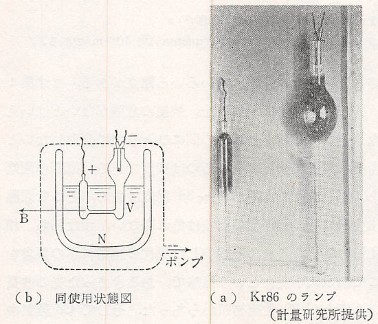
$ {}^{86} $Kr の低温低圧における発光を用いたのは、上に述べた種々の障害を少なくするためで、放電電流にも一定の限度が与えられている。
こうして出てくる光の中のいわゆる Kr86 橙色線の真空中における波長の1650763.73倍を 1 m と定義する。もちろん従来の 1 m とほとんど違いはない。
この方法は極めて精度の高いもので、メートル原器の精度が$ 2\times 10^{-7} $であったのに、ここでは$ 10^{-8} $の精度が得られ、将来は$ 10^{-9} $の精度にまで上げられる見込みである。
時間の単位
時間の単位
我々には時の経過したことは分かるが、経過した時間の量は精密には分からない。そこで、一定の周期をもつと想像されるもの、あるいは等速運動をすると想像されるものを仮定して時間を測る。そしてこの想像が果たして正しかったかどうかは、これから出発して作られる物理学の体系を全体的に見て判定する。
それにしても、ある一定の時間、すなわち単位を決めなければならないが、最初の一定の時間として採用されたものは地球の自転から割り出したものであった。いま、地球の中心を中心としてきわめて大きな半径の球面を天空に想像し、全ての星をこの天球上に投影してみる。地球の自転を考慮しないことにすれば、全ての恒星はほぼ天球上の固定点となるが、太陽はこの天球上を運動する。それは地球が太陽の周りに公転しているからである。
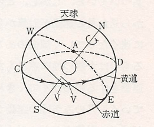
この太陽の軌道 VDACV を黄道という。地球は太陽の周りに一定の角速度で運行しているわけではないから、黄道上の太陽の速さも一定ではない。また地軸はこの黄道面（すなわち地球の公転軌道の平面）に垂直になっていない。したがって、地球の自転角速度が一定としても、１日の長さ、すなわち太陽が南中してから翌日南中するまでの時間は四季によって変わってくる。
そこで、地球の中心を通り、地軸に垂直な平面と天球との交線 EW を赤道と名づけ、この赤道上を一定の速さで動く仮想的な太陽を想像して、これを平均太陽と名付ける。赤道と黄道との交点 V, A の中で、太陽が南半球から北半球へ移る方の点 V を春分点、他の点 A を秋分点という。平均太陽の運動の速さは、真太陽と同時に春分点を出発して、翌年同時に春分点に戻るような速さと決められている。実は地軸が一定の方向を保たず、きわめて徐々にこまのようなすりこぎ運動をしているので、赤道面の方法は徐々に変わり、春分点も多少移動していく。春分点を出て再び春分点に戻るまでの時間は、厳密に太陽が天球上を１周する時間よりやや短く、これを 1太陽年（あるいは 1回帰年）という。
それはとにかく、平均太陽は赤道上を一定の速さで動いているので、もし地球の自転の速さが一定ならば、平均太陽が今日南中してから、翌日南中するまでの時間は一定となるはずである。この時間を1日、その 1/24 を 1時間と定義する。1
以上が従来の時間の単位で、これは地球自転が一定不変の速さという仮定に基づいている。しかし。このようにして決めた今までの時間を用いると、地球から見た月の運動が計算から予想されるところと違い、永年の中には次第に早くなっていく傾向のあることが分かった。地球に万有引力をおよぼしているものは太陽の他に惑星もある。このために地球は太陽の周りに正確な長円運動をするのでなくて、きわめて僅かずつであるが、軌道の形が円形に近づいていく。月のみかけの運動が計算と合わない一つの原因がここにあるが、それだけでは計算の違いが十分説明できない。このようなことから、地球自転速度が一定という仮定にはかなり以前から疑いが持たれていた。近年、時計が非常に進歩し、ことに水晶時計が発達し、時間の測定がきわめて精密に行われるようになるにつれてこの疑いがますます濃くなってきた。
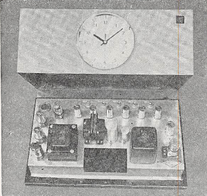
水晶は、伸び縮みするとその両端に正負の電荷を発生する。そこで両端に交互に正負の電荷を与え、しかもその周期に合わせると共鳴してよく振動する。この振動の周期は非常に一定したもので、温度による影響などもはなはだ小さい。そこでこの水晶片を利用して一定周期の交流を作ることができる。ただこの場合の交流の周波数は極めて大きいが、周波数は真空管回路によって何分の一にでも減少することができる。こうして普通の交流が得られ、これに電気時計の原理を応用して一定の速さで動く時計が作られる。これが水晶時計の原理である。
こうして現在では、もはや地球の自転速度は一定ではなく、100年後の1日の長さは現在よりも0.0016秒長くなると考えられるに至った。原因は主として、ベーリング海を通る潮汐が地球と摩擦してその回転運動を止めることなどのためであるといわれている。
このように自転が一定でないことが明らかになり、時間の単位の基準は地球の自転から公転へ移った方が妥当であるということになった。そして1956年の国際度量衡委員会で、時間の単位としての秒（s）を1900年1月0日12時（1899年12月31日正午、日本時間同日午後9時）の回転速度をもって太陽が春分点を通るまでの時間（太陽年）の1/3156925.9747と定義するに至った。我が国ではあ昭和33年4月15日以後この基準によっている。
さらに時間の単位として原子的基準を使うことも考えられる。たとえばアンモニア分子は、$^{86}$Krが極めて純粋な一定波長の光を発すると同様に、一定波長の純粋なマイクロ波を発生する。このアンモニア蒸気に外から種々の波長のマイクロ波をあてると、この一定波長に等しいものだけは強い吸収を受ける。この現象を利用すれば、きわめて純粋な一定の波長のマイクロ波が得られる。もっとも純粋なのは22834.185メガサイクル・毎秒（Mc・S$^{-1}$）のものである。水晶時計と同様な方法で周波数を下げ、普通の交流にしてから電気時計の原理で時計を作る。原子時計とよばれるのがこれである。
-
日本では統計 135° の地点すなわち明石市を通る子午線を基準に選んでいる。そこで、平均太陽は正午に明石市で南中するが、真太陽は必ずしもそうでない。 ↩
重力質量とその単位
重力質量とその単位
水は熱すれば水蒸気となり、冷やせば水となる。またロウソクは燃えて空気中の酸素と化合し、水蒸気や二酸化炭素に変わる。しかし姿は変えても物質は物質である。フラスコの中に閉じ込めた物質が、中でどんな変化をしようと、物質としての量は変わりがない。これが経験から得られた我々の観念で、こうして物質の量という概念が導かれる。
しかし、この物質の量というのは観念的なもので、その内容がきわめて漠然としている。このままでは到底物理量として取り入れるわけにはいかない。これを明確な物理量として取り入れるためには、それが何で測られるかを明瞭にしなければならない。仮に、そのものの体積で表すという方法を採ったとしてみよう。シリンダーの中に閉じ込めた気体はピストンで圧縮することによってその体積は何ほどでも小さくなる。物質が減ったわけでもないのに体積は減る。このことは、明らかに体積が実質の量を示すのに適当でない物理量であることを示している。物質の量を表す物理量は、その物体に物質が出入りしない限り一定のものでなくてはならない。
物体に付随する量はいろいろあるが、その中で重さという物理量はこの役目を果たすのにちょうど適当であることが分かる。すなわち、閉じたフラスコをばねはかりで測ってみると、中で何が起ころうと重さに変わりがない。一方、例えば純粋のように全く一様なものについていえば、二倍の体積のものの重さは二倍であって、このことも物質の量という概念と一致する。
ただ、物体の重さは測定する場所によって変わる。したがって重さそのものは物質の量を表すのに適切でない。しかしこの場合でも重さを用いて物質の量を比較することはできる。なぜかといえば、経験の示すところによると、場所による物体の重さの増減はすべての物体に同じ割合で起こるからである。
そこで物質の量を比較するには次のようにすればよい。
-
まず厳密に一様と考えられる物質（例えば白金塊） を選び、これを等しい体積に細分したとき、各片のもつ物質量は等しいと考え、これを基準物体に選ぶ。
-
他の一般の物質の場合では、その重さが同一の地点で測って上の基準物体の$n$個の重さに等しい時には、その物質量は基準物体の$n$倍と考える。
このようにして決めた量が重力質量という物理量である。重力質量はこのように、物質の量を示すのに最も適すると考えられて作られたる量ではあるが、物質の量そのものではない。物質の量が漠然とした観念的なものであるのに対し、重力質量は明確な物理量である。物理量としての重力質量は、物質の量などという漠然とした観念から独立して考えるべき量で、むしろ物体に付随し、その属性を示す１種の量と考えるべきである。
重力質量の基準となるものはキログラム原器である。1875年のメートル条約に基づいてメートル原器を作ったときと同時に、同様な合金（Pt 90％、Ir 10％）で作られた円筒形の物体で、その重力質量を1kgとしてある。この円筒はその直径と高さが等しい（共に39mm）ように作られているが、これは表面積を最小にして、外からの影響を最小にするための配慮に基づいている。
この原器で最も問題になるのはその永久性で、ことにその表面に表ずる化学変化である。しかしこの原器に関する限り、化学反応その他で質量的に変化すると認められるような確かなものは現在のところ存在しない。鋳造当時この合金の内部に吸蔵された気体が徐々に遊離して出ていくために、原器が物質的に減少していくと考える人もあるが、これも疑いの程度を出ていない。こうして、キログラム原器は以前まで重力質量の標準となっていた。
単位の変換と次元
単位の変換と次元
長さ、質量、時間の単位には、m,kg,sの三つが用いられているが、m,kg,sもまた同様に用いられる。この他、米英などでは長さにfoot、質量にpoundなどが現在もなお用いられている。組立単位の大きさは基本単位の大きさによって変わる。例えば面積の単位の大きさは、単位長さの一辺をもつ正方形の面積と規定されているから、1mを基本としてできる面積単位は、1cmを基本とするものに対して10000倍の広がりをもっている。そこで長さの単位 $L_1,L_2$ に対する面積の単位を $S_1,S_2$ で表すと、 $$ \frac{S_2}{S_1}=\left(\frac{L_2}{L_1}\right)^2 $$ cmとmの場合でいえば $$ \frac{S_2}{S_1}=\left(\frac{\rm m}{\rm cm}\right)^2=100^2 $$ である。今、長さ・質量・時間に対する２組の基本単位をそれぞれ $L_1,M_1,T_1,L_2,M_2,T_2$としてみると、各種の組立単位の大きさの比はそれぞれ次のように与えられる：
$$ \frac{ [ 体積 ]_2 }{ [ 体積 ]_1}=\left(\frac{L_2}{L_1}\right)、 \frac{ [ 密度 ]_2}{ [ 密度 ]_1}= \left(\frac{M_2}{M_1}\right)\times\left(\frac{L_2}{L_1}\right)^{-3}、 \frac{ [ 速さ ]_2}{ [ 速さ ]_1}= \left(\frac{L_2}{L_1}\right)\times\left(\frac{T_2}{T_1}\right)^{-1}、 $$ $$ \frac{ [ 加速度 ]_2}{ [ 加速度 ]_1}= \left(\frac{L_2}{L_1}\right)\times\left(\frac{T_2}{T_1}\right)^{-2}、 \frac{ [ 運動量 ]_2}{ [ 運動量 ]_1}= \left(\frac{M_2}{M_1}\right)\times\left(\frac{L_2}{L_1}\right) \times\left(\frac{T_2}{T_1}\right)^{-1} $$
これらの式の右辺の指数を組立単位の次元（dimention）とよび、また速さの次元は $LT^{-1}$ であるともいう。一般に、一つの物理量を単位 $U_1$ で表した時の数値を $n_1$ とし、単位を$U_2$で表した時の数値を $n_2$ とすれば
$$ 物理量=n_1\times U_1=n_2\times U_2 \therefore \frac{n_1}{n_2}=\frac{U_2}{U_1} $$
そこで、単位 $U$ の次元を長さ、質量、時間についてそれぞれ $x,y,z$ とすれば
$$ \frac{n_1}{n_2}= \left(\frac{L_2}{L_1}\right)^x\times \left(\frac{M_2}{M_1}\right)^y\times \left(\frac{T_2}{T_1}\right)^z $$
となる。いまこの式を仮に次のように書き直してみる：
$$ n_1 \times L_1^x \cdot M_1^y \cdot T_1^z = n_2 \times L_2^x \cdot M_2^y \cdot T_2^z $$ この式は先ほどと違って、文字通り解釈したのでは意味がない。それは長さの単位を $x$ 乗するということが無意味であるし、さらに長さの単位と質量の単位の相乗積などということも意味をなさないからである。しかし形式的に $L,M,T$ を普通の数と同様に取り扱えばここまでに出てきた式と同じことにある。このことはまた $$ U_1 = L_1^x \cdot M_1^y \cdot T_1^z、 U_2 = L_2^x \cdot M_2^y \cdot T_2^z $$ と書くこともできる。これが単位記号として広く用いられ、次元式とよばれているもので、例えばMKS制における密度、運動量の単位はそれぞれ、kg・m$^{-3}$、m・kg・s$^{-1}$と表される。いうまでもなくm・kg・s$^{-1}$などは単なる記号に過ぎないが、このように表しておく単位の換算にあたってkg、m、sを数と同様に考え、数の乗除法を適用できるという便宜が得られる。
[例題] 4℃における水の密度は1立方cmあたり1gである。これは1立方mあたり何kgか。
[解]まず密度の次元は $M\cdot L^{-3}$ で表される。そこで、求める値を$\rho$とすれば $$ 密度=1{\rm g\cdot cm^{-3}}=\rho\ {\rm kg\cdot m^{-3}} $$ kg=1000g、m=100cmを代入すると $$ 1=\rho\times 1000 \times \left(\frac{1}{100}\right)^3、 \therefore\rho = 1000、 \therefore 密度=1000 {\rm kg\cdot m^{-3}} $$
量の間の関係式
量の間の関係式
すでに知っているように、数量$m$ kgの物体に$f$Nの力が働いた時$a$m・s$^{-2}$の加速度が得られたとすると、 $$ m\times a = f $$ の関係がある。この式に現れる$m,a,f$はいずれも数値であって、この式は数式である。
さて、この場合の力の単位は、単位質量に働いて単位加速度を生ずる力として導かれるものであるから、単位の換算にあたって前式からも分かるように $$ {\rm N=kg\cdot m\cdot s^{-2}} $$ と書くことができる。そこで各数値の代わりにそれらが表す量の単位の次元式を代入すると、 $$ {\rm kg\times m\cdot s^{-2}=kg\cdot m\cdot s^{-2}} $$ となり、両辺の単位を次元式で計算したとき等しいことを示す。以上のことから、形式的に $$ m\ {\rm kg}\times a\ {\rm m\cdot s^{-2}}= f\ {\rm kg\cdot m \cdot s^{-2}} $$ $$ \therefore（質量）\times（加速度）=力 $$ という式が導かれる。この式の（質量）、（加速度）、（力）は物理量である。したがって、この乗法記号の×は単なる数の相乗記号でない。数値は数値としての計算で両辺の等しいことを示している。
このことから、$m,a,f$ を単なる数値と考えずに超そのものを表していると考えることもできる。そしてその方が便利なことが多い。なぜかといえば、数値は単位の選び方によって変わるが、量そのものは単位のいかんに無関係だからである。本書でもこの意味において $m,a,f$ などのような記号を量記号として用いることが多い。
古典力学
昔々、まだ夜道を照らす灯もなく、人々の住まいは一日の半ば近くも真っ暗な闇の中に閉ざされ、その闇の奥から時折狼の遠吠えが、野原を渡る風の音に混じって気味悪く聞こえて来ていた頃、恐らく星は人々にとって今よりも遥かに身近で重要な存在だった。一日の仕事を終えて粗末な褥（しとね）に身を横たえる前のひとときや、東の空の白むのももどかしく眠りから目覚めた時、彼らが決まって振り仰ぐ星空には幾つもの親しみやすい図形が待ち受けていた。その或るものは美しい乙女が天に舞う姿を思わせたし、また或るものは大きな獅子となって頭上から彼らを威圧するかのように見えた。
そのような図形や相互の配置のおおよそを、恐らく多くの人々はそらんじていたのであろう。実際、満足なあかりも、そしてまた、その下で読むべき何物をも持たなかった人々にとって、星空は彼らの涯しない夢を育むただ一つの、そしてそれ故にこそ何回となく読み古された物語のようなものだった。
月日の流れを知る目安として、子は親から、親はまたその親から教えられたことであっただろうが、夜明け前の東の空や日没間もない西の空に輝く星の一団は、何故か季節によっていつも決まっているように見えた。天球上の太陽の通り道としての黄道（地球の公転軌道面と天球との公転）は、このようにしていつとはなしに人々の知るところとなった。
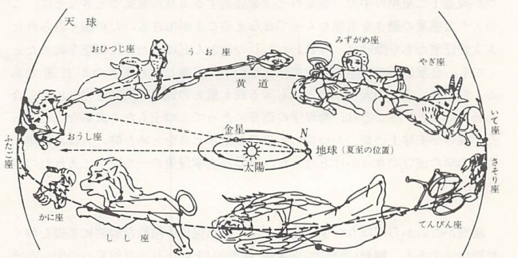
上図のような黄道十二星座が、その通り道をたどる道しるべとして人々の間に根をおろしたのは、今からもう五千年以上も昔、バビロニア地方でのことといわれている。この黄道近く、これらの十二の星座を横切って、時には後戻りを交えながら、夜毎に少しづつその位置を変える幾つかの明るい星があった。こうして先ず、水星、金星、火星、木星、土星と呼ばれる比較的明るい5つの惑星が人々の前にその姿をあらわした。これらに大きな関心を示すようになったのは、占星術上の必要もあったであろうが、多分に宗教的意味も込められていたと考えられている。
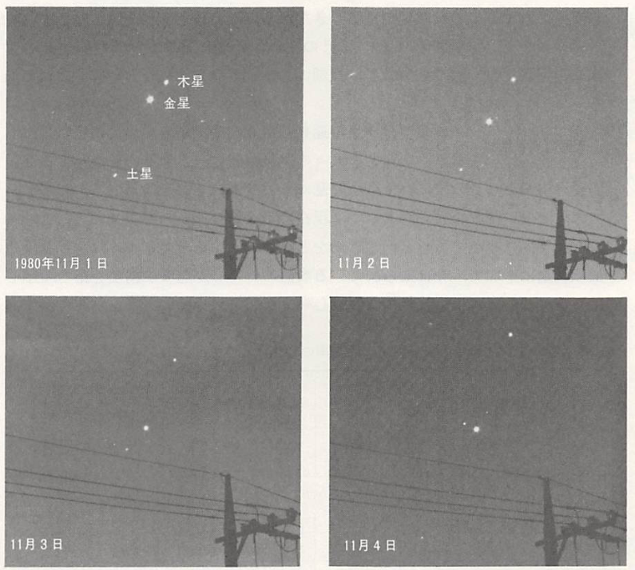
今日、我々は例えば上図に示された一連の写真のように、いくつかの惑星がたまたま天球上の一か所に集まるように見えたり、あるいは惑星の一つが黄道十二星座の中の一等星のそばを通過するように見えるときなどに、このような惑星の動きを実感をもって捉えることができる。だが極く限られた天文愛好家たちを除けば、今日われわれのほとんどは、たとえ夜空を眺めたとしても、金星以外の惑星の存在には気づかずに見落としてしまうのが普通である。だから、古代の人々が来る夜も星との対話の時間を十分に持ち合わせたということは、物理学の萌芽にとってこの上もなく大事なことだった。彼らが天球上の幾つかの星の不思議な動きに目をとめた時、人は後年古典力学の成立のきっかけとなった。この天球上の動きというのは、実は身近な物体の動きと同じ法則に基づいているため、以降では最初に身近な物体の運動について論じていくことにしよう。
運動の表現方法
運動の表現方法
我々は間口と奥行きと高さを持った3次元空間の中に住んでおり、物体の運動もその中で起こっている。運動とは物体の位置が時間とともに変化することであるから、ある運動を記述するためには、例えば以下の図のように時々刻々における物体の位置を追いかけていけばよい。
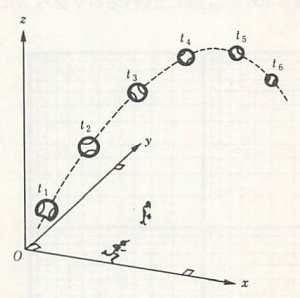
物体の位置を記述するとき、必ずなんらかの基準から見たものとなる。例えばAさんとBさんの二人がいて、AさんがBさんに床に置かれた物体の位置を伝えようとすると「Bさんから見て右側」というようになることからも伺えるであろう。それを聞いたBさんも右側を見て、自分を基準として目分量で物体の位置がこれぐらいだと把握するであろう。このように、物体の位置を把握するためには基準点O（Bさん自身の地点）を中心として座標系K（Bさんの目分量）を用意する必要がある。さらに物体自体が点ではなく大きさを持つことから、その位置を指定できるよう質点（質量を持つ点）というものに置き換える必要がある。仮に質点が地点Pにある場合、その位置は基準点O（または原点）から見た位置として記号 \(\vec{\rm OP}\) で表記される。あるいは、太文字で \(\bm{r}\) と表すと長さOPは \(|\bm{r}|\) または単に \(r\) と書くため、一般的に太文字で書くと長さに加えて向きまで含めたものとなる。このときの \(\bm{r}\) を位置ベクトルという（ベクトルの中でも長さしか持たない量はスカラー量と呼ばれる）。また、ここでは座標系KをBさんの目分量としていたが、それだと見る人によって大きさが異なってしまうため、一般的に下図のように直交直線座標（デカルト座標）が多く用いられる。
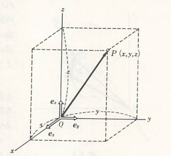
このときのP点の位置ベクトル \(\bm{r}\) は座標 \((x,y,z)\) を用いて
$$ \bm{r}=(x,y,z) $$
で与えられる。例として、上図でもあるように \(x,y,z\) 軸の正の方向に向かう単位の大きさのベクトル（基本ベクトル）をそれぞれ \(\bm{e}_x,\bm{e}_y,\bm{e}_z\) とすると
$$ \bm{e}_x=(1,0,0)、 \bm{e}_y=(0,1,0)、 \bm{e}_z=(0,0,1) $$
と表されるが、これを用いると位置ベクトル \(\bm{r}\) は
$$ \bm{r}=x\bm{e}_x+y\bm{e}_y+z\bm{e}_z $$
と書くこともできる。このようにすると、後にも出てくるが別の座標系に変更した際にどの座標系で表現されているか区別しやすくなる。また、このときの原点から質点までの距離 \(r\) は
$$ r=|\bm{r}|=\sqrt{x^2+y^2+z^2} $$
で与えられる（三平方の定理により求めることが可能）。
ここまで位置ベクトルについて述べたが、これは質点の運動において時刻 \(t\) ごと変化するため \(\bm{r}(t)\) というように \(t\) の関数として表すことができる。そのため、仮に時刻 \(t\) で位置ベクトル \(\bm{r}(t)\) なるA点にあった質点が、時間 \(\Delta t\) の後に \(\bm{r}(t+\Delta t)\) なるB点まで動いたとする。このときの質点の変位（displacement）\(\Delta\bm{r}\) は、以下の図に図示されたようなベクトル算法を用いて
$$ \Delta\bm{r}=\bm{r}(t+\Delta t)-\bm{r}(t) $$
と書ける。また、変位 \(\Delta\bm{r}\) の長さも
$$ \Delta r=|\bm{r}(t+\Delta t)-\bm{r}(t) | $$
となるが、同じ \(\Delta t\) という時間でも変位が大きければ大きいほど速いということになり、同じ \(\Delta r\) という変位でも時間が短ければ短いほど速くなるので、速さを表す度合い（速度）は \(\bm{v}\) として
$$ \bm{v} \equiv \frac{\bm{r}(t+\Delta t)-\bm{r}(t)}{\Delta t}= \frac{\Delta\bm{r}}{\Delta t} $$
と定義すればよいと考えられる（\(\equiv\)は定義することを指しており、右側にその内容を記載する）。この方向は変位 \(\Delta\bm{r}\) と同じであり、細かく言うと平均速度と呼ばれる量となる。一方で、速度というのは一般的に各時刻ごとに異なる（極端に短い時間で変化する）量であるため
$$ \bm{v} \equiv \lim_{\Delta t\to 0} \frac{\bm{r}(t+\Delta t)-\bm{r}(t)}{\Delta t}= \frac{{\rm d}\bm{r}}{{\rm d}t} $$
というように記載すると厳密なものとなる（こちらは瞬間速度と呼ばれる）。この方向は先ほどと異なり、下図のようにA点において引かれた質点の軌道に対する接線の方向に等しく、その大きさは軌道に沿っての質点の速さ（speed）に等しくなる。
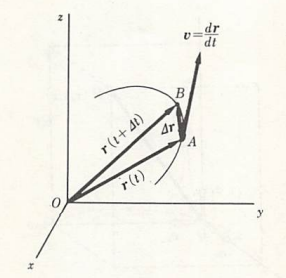
ちなみに、先ほどのデカルト座標を用いると速度は以下の通りに書ける。
$$ \bm{v}\equiv (v_x,v_y,v_z)= \left( \frac{{\rm d}x}{{\rm d}t}, \frac{{\rm d}y}{{\rm d}t}, \frac{{\rm d}z}{{\rm d}t} \right) $$
ここまで運動をどのように表現するかを述べたが、次からは実際に運動がどのような法則に従ってなされるのかを見ていくことにする。
運動の法則
運動の法則
物体の運動を論じる古典力学は、Newtonが著した「プリンキピア」の導入部分に掲げた3つの法則に基づいている。ここでは、その3法則を当時の表現（特に第2法則の表現）に若干手を加えた形で紹介することにしよう。
-
慣性の法則
すべての質点はそれに加えられた力によってその状態が変化させられない限り、静止あるいは1直線上の等速運動の状態をつづける。 -
運動方程式
質点の運動量（=質量×速度）の変化は、加えられた力の方向に沿って起こり、微小時間内における運動量の単位時間あたりの変化の大きさは加えられた力の大きさに等しい。 -
作用・反作用の法則
全ての作用に対して、等しくかつ反対向きの反作用が常に存在する。すなわち、互いに働きあう2つ質点の相互作用は常に等しく、かつ反対方向へと向かう。
全ての物体は、他の物体の影響が完全にない状況において運動状態を変えることなく、その状態をいつまでも持続するであろう。多くの経験から予想されるこのような物体の性質を慣性（inertia）という。この性質があるということを第1法則で掲示した上で、外部からの影響が働いた時の運動の変化を第2、3の法則により述べている。これらを質点で言い換えると、質点の運動状態はその速さと運動方向（速度ベクトル）を指定することにより決定されるわけであるから、すべての質点は単独で速度ベクトルを変えずに保とうとする性質を持つといえる。すなわち、運動する質点の速度ベクトルの変化を追うことで第2法則により質点に働く刻々の力を求めることはできる。ただ、それだけだと質点の運動状態の変化を力という言葉に置き換えただけに過ぎないため、力学現象をより深く理解することには何等寄与もしていない。そのため、色々な運動の度重なる観測に基づいて、どのような種類の力がどのような状況のもとで働くのかを予め調べる必要が出てくる。Newtonが発見した万有引力の法則は、その一つの例であるといえる。そして、現在ではそれらの力（既知の力）のもとに質点の運動を第2法則から予測することが可能となっている。
では、いよいよ第２法則の解析的表現に取り組むことにしよう。まず、速度 \(\bm{v}\) で動いている質量 \(m\) の質点の運動量を
$$ \bm{p}\equiv m\bm{v} $$
によって定義する。この量は質点に力 \(\bm{F}\) が働くとき変化するが、両者の間には
$$ \frac{\mathrm{d}\bm{p}}{\mathrm{d}t}=\bm{F} $$
という関係が成り立つ。これがNewtonの第二法則の内容である。この式に運動量の定義式を代入すると
$$ \frac{\mathrm{d}m}{\mathrm{d}t} \bm{v}+ m \frac{\mathrm{d}\bm{v}}{\mathrm{d}t}= \bm{F} $$
となるが、仮に質量が時間によって変化しない（時間に依存しない）場合は、左辺の第一項目が消えて加速度を \(a\) とすると
$$ m\bm{a}= \bm{F}、 \bm{a}= \frac{\mathrm{d}\bm{v}}{\mathrm{d}t} $$
という、よく教科書などで見られる方程式が得られる。このときの質量に関する仮定は大抵の場合正しいが、ガスを噴射しながら進むロケットの本体に着目する場合などには適用できないことに注意されたし。また、我々が力についての具体的な知識を十分持っており、力 \(\bm{F}\) の形が既知のものであれば、この式により速度あるいは位置が求められる。つまりは、その運動が求まることになるため、通常この式は運動方程式と呼ばれる。
ここからは、運動方程式を解くには既知の力が必要であることを述べたので、実際にどのような力があるのか見ていくことにしよう（どの位置にいるか見る必要がないため、ここでは質点ではなく実際の物体を扱っている）。
-
事象1（水平な地面に置かれた物体）
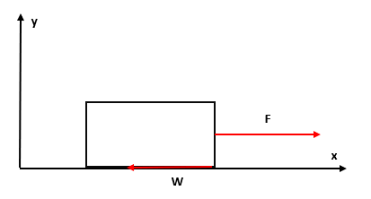
何もしていない状態だと静止し続ける。そこに下図のように力をかけ続けると動き始め、この様子を運動方程式を用いてみる。
$$ m\bm{a}=\bm{F} \leftrightarrow \begin{cases} ma_x=F_x=F \ ma_y=F_y=0 \end{cases} $$
このことから、\(x\)方向に対しては \(F/m\) の加速度で進むが、\(y\) 方向へは一定の速度（今は静止したまま）で動くことが分かる。だが、すぐ動き出すわけではなく最初はある程度静止し続けてから動き出す。これは、摩擦力 \(F_W\) が働いているものと考える。
$$ m\bm{a}=\bm{F} \leftrightarrow \begin{cases} ma_x=F_x=F-F_W=0 \ ma_y=F_y=0 \end{cases} $$
-
事象2（事象1と同様な状況で角度 \(\theta\) だけ傾けて力をかけた場合）
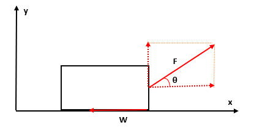
先ほどと同様な考え方で
$$ m\bm{a}=\bm{F} \leftrightarrow \begin{cases} ma_x=F_x=F\cos\theta-F_W=0 \ ma_y=F_y=F\sin\theta \end{cases} $$
となるわけだが、もしこの力だけ存在するならば\(x,y\)方向へ加速していくものと考えられる。しかし、実際はそうはならず静止したままである。そのため、下向きにも力が働くことが予想される。ただ、この場合だと地面が邪魔でどのような力が働いているかわからないため、次に持ち上げた状態から離した場合にどのような力が働くのかを見てみる。
-
事象3（落下運動）
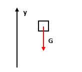
物体を持ち上げて離すと落下するわけだが、このとき重力 \(F_G\) （地球と物体の間に働く万有引力の一種）が働いている。そのため、このときの運動方程式は以下の形になることが分かる。
$$ m\bm{a}=\bm{F} \leftrightarrow \begin{cases} ma_x=F_x=0 \ ma_y=F_y=-F_G \end{cases} $$
この重力が働くということを踏まえて、改めて先ほどの状況を考えてみる。この場合だと、重力と上にひく力が釣り合っていると思えるが、すると何も力が働いていないときに静止していることの説明がつかない。そのため、重力により下へ引き付けることで地面へ力がかかり地面から反発力（反作用）が働くものと考えられる。
$$ m\bm{a}=\bm{F} \leftrightarrow \begin{cases} ma_x=F_x=0 \ ma_y=F_y=N-F_G=0 \end{cases} $$
-
事象4（事象2に重力を考慮した場合）
改めて事象2を重力を考慮して記述すると以下のようになる。
$$ m\bm{a}=\bm{F} \leftrightarrow \begin{cases} ma_x=F_x=F\cos\theta-F_W=0 \ ma_y=F_y=F\sin\theta+N-F_G=0 \end{cases} $$
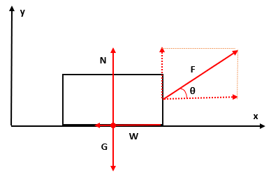
以上のように、運動を観測することでどのような力が働いているのか予測することが可能ではあるが、実際にどのような値をとるかは調べる必要が出てくる。例えば、摩擦力 \(F_W\) の場合は先ほどの \(x\) 方向の運動方程式において
$$ F\cos\theta-F_W=0 \rightarrow F_W=F\cos\theta $$
とあるように外部の力と同じであるが、いつまでもそうではなく限界値（最大静止摩擦力）が存在する。最大静止摩擦力は静止摩擦係数 \(\mu\)（床の材質などで決まる）により \(\mu N\) となる。これを超えて動き出すと動摩擦力が働き、この大きさは動摩擦係数 \(\mu’\) により \(\mu’ N\) となる。また、重力 \(F_G\) の方は万有引力の一種であり、 重力加速度 \(g\) により \(mg\) というように書けるが、この値というのは地球の質量、物体と地球との間の距離、万有引力定数をそれぞれ \(M,r,G\) とすると
$$ F_G=G\frac{mM}{r^2}=mg、 g=\frac{GM}{r^2} $$
という関係にある。ここで \(g\) の値は
$$ G= 6.6430\times 10^{-11}\ \mathrm{m^3\ kg^{-1}\ s^{-2}} $$ $$ r=6.378 \times 10^{6}\ \mathrm{m}、 M=5.972\times 10^{24}\ \mathrm{kg} $$
から計算すると \(9.75248\ \mathrm{m/s^2}\) というように、よく知られた値になることも分かる。ただ、厳密には物体間の距離 \(r\) で変化するものとなっているため、次頁では二体間ではどのような運動になるか論じていくことにしよう。
二体問題（惑星の運動）
二体問題（惑星の運動）
ここまでは一つの物体のみ取り扱っていたが、もしもう一体物体がある場合は万有引力が働くことも考慮する必要がある。例として物体1と物体2の質量、位置ベクトルを \(m_1,\bm{r}_1,m_2,\bm{r}_2\) とすると、物体1にかかる力は
$$ \bm{F}= G\frac{m_1m_2}{|\bm{r}_2-\bm{r}_1|^2} \left( \frac{\bm{r}_2-\bm{r}_1}{|\bm{r}_2-\bm{r}_1|} \right) $$
というように書ける（\(G\)：重力定数）。
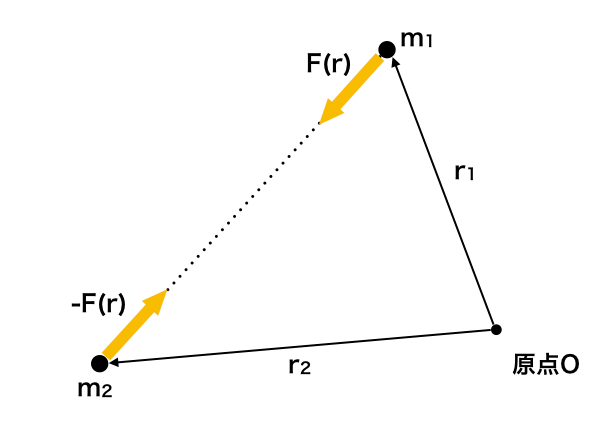
そして、この２体の運動方程式を記載すると以下の通りとなる。
$$ m_1 \frac{\mathrm{d}^2\bm{r}_1}{\mathrm{d}t^2}= \bm{F}、 m_2 \frac{\mathrm{d}^2\bm{r}_2}{\mathrm{d}t^2}= -\bm{F} $$
ここで二つの式の和をとった場合には
$$ (m_1+m_2) \frac{\mathrm{d}^2}{\mathrm{d}t^2} \left( \frac{m_1\bm{r}_1+m_2\bm{r}_2}{m_1+m_2} \right)= 0 $$
というように全体の運動方程式となり、このときの質量 \(m_G\) と位置 \(\bm{r}_G\) は
$$ m_G = m_1+m_2、 \bm{r}_G= \frac{m_1\bm{r}_1+m_2\bm{r}_2}{m_1+m_2} $$
とおけることから、全体的に見た場合には以下の式が成り立つ（ 2つの質点を質量 \(m_G\) の質点に置き換えてると、運動が変化しないあるいは慣性の法則に従う）。
$$ m_G\frac{\mathrm{d}^2\bm{r}_G}{\mathrm{d}t^2}=0 $$
一方で、万有引力の形を踏まえて2つの方程式を
$$ \frac{\mathrm{d}^2\bm{r}_1}{\mathrm{d}t^2}= \frac{\bm{F}}{m_1}、 \frac{\mathrm{d}^2\bm{r}_2}{\mathrm{d}t^2}= -\frac{\bm{F}}{m_2} $$
として2番目の式から1番目の式を差し引くと以下の式が得られる。
$$ \left( \frac{m_1m_2}{m_1+m_2} \right) \frac{\mathrm{d}^2}{\mathrm{d}t^2} (\bm{r}_2-\bm{r}_1)= -\bm{F} $$
この式は物体1から見た物体2の運動方程式となっており、質量 \(\mu\)（換算質量） と相対位置 \(\bm{r}\) は
$$ \mu=\frac{m_1m_2}{m_1+m_2}、 \bm{r}=\bm{r}_2-\bm{r}_1 $$
と書ける。そのため、上記の運動方程式は以下のようになる。
$$ \mu\frac{\mathrm{d}^2\bm{r}}{\mathrm{d}t^2}= -G\frac{m_1m_2}{r^3}\bm{r} $$
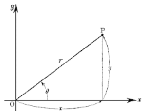
仮に二次元の場合で考えてみると、直交座標系 \(x,y\) で記述すると
$$ \mu\frac{\mathrm{d}^2x}{\mathrm{d}t^2}= -G\frac{m_1m_2}{r^2} \frac{x}{r}、 \mu\frac{\mathrm{d}^2y}{\mathrm{d}t^2}= -G\frac{m_1m_2}{r^2} \frac{y}{r} $$
となるが、ここで上図にもあるように
$$ \frac{x}{r}=\cos\theta、 \frac{y}{r}=\sin\theta \leftrightarrow x=r\cos\theta、 y=r\sin\theta $$
という関係にあるため、極座標 \(r,\theta\) に変換すると
$$ \begin{align*} \frac{\mathrm{d}^2} {\mathrm{d}t^2} (r\cos\theta) &= \frac{\mathrm{d}} {\mathrm{d}t} \left( \frac{\mathrm{d}r} {\mathrm{d}t} \cos\theta- r \frac{\mathrm{d}\theta} {\mathrm{d}t} \sin\theta \right)\ &= \frac{\mathrm{d}^2r} {\mathrm{d}t^2} \cos\theta- 2\frac{\mathrm{d}r} {\mathrm{d}t} \frac{\mathrm{d}\theta} {\mathrm{d}t} \sin\theta- r \frac{\mathrm{d}^2\theta} {\mathrm{d}t^2} \sin\theta- r \left( \frac{\mathrm{d}\theta} {\mathrm{d}t} \right)^2 \cos\theta \end{align*} $$ $$ \begin{align*} \frac{\mathrm{d}^2} {\mathrm{d}t^2} (r\sin\theta) &= \frac{\mathrm{d}} {\mathrm{d}t} \left( \frac{\mathrm{d}r} {\mathrm{d}t} \sin\theta+ r \frac{\mathrm{d}\theta} {\mathrm{d}t} \cos\theta \right)\ &= \frac{\mathrm{d}^2r} {\mathrm{d}t^2} \sin\theta+ 2\frac{\mathrm{d}r} {\mathrm{d}t} \frac{\mathrm{d}\theta} {\mathrm{d}t} \cos\theta+ r \frac{\mathrm{d}^2\theta} {\mathrm{d}t^2} \cos\theta- r \left( \frac{\mathrm{d}\theta} {\mathrm{d}t} \right)^2 \sin\theta \end{align*} $$
であるから、以下のような形になる。
$$ \mu \left[ \frac{\mathrm{d}^2r} {\mathrm{d}t^2} \cos\theta- 2\frac{\mathrm{d}r} {\mathrm{d}t} \frac{\mathrm{d}\theta} {\mathrm{d}t} \sin\theta- r \frac{\mathrm{d}^2\theta} {\mathrm{d}t^2} \sin\theta- r \left( \frac{\mathrm{d}\theta} {\mathrm{d}t} \right)^2 \cos\theta \right] = -G\frac{m_1m_2}{r^2} \cos\theta $$ $$ \mu \left[ \frac{\mathrm{d}^2r} {\mathrm{d}t^2} \sin\theta+ 2\frac{\mathrm{d}r} {\mathrm{d}t} \frac{\mathrm{d}\theta} {\mathrm{d}t} \cos\theta+ r \frac{\mathrm{d}^2\theta} {\mathrm{d}t^2} \cos\theta- r \left( \frac{\mathrm{d}\theta} {\mathrm{d}t} \right)^2 \sin\theta \right] = -G\frac{m_1m_2}{r^2} \sin\theta $$
ここで、\(x,y\) 方向の方程式にそれぞれ \(\cos\theta,\sin\theta\) をかけて和をとると
$$ \mu \left[ \frac{\mathrm{d}^2r} {\mathrm{d}t^2}- r \left( \frac{\mathrm{d}\theta} {\mathrm{d}t} \right)^2 \right] = -G\frac{m_1m_2}{r^2} $$
となり、一方で \(\sin\theta,\cos\theta\) をかけて差をとると
$$ \mu \left[ 2\frac{\mathrm{d}r} {\mathrm{d}t} \frac{\mathrm{d}\theta} {\mathrm{d}t}+ r \frac{\mathrm{d}^2\theta} {\mathrm{d}t^2} \right] =0 $$
となる。ここで２番目の式に \(r\) をかけることで
$$
\mu r^2
\frac{\mathrm{d}^2\theta}{\mathrm{d}t^2}+
2\mu r
\frac{\mathrm{d}r}{\mathrm{d}t}
\frac{\mathrm{d}\theta}{\mathrm{d}t}=
\frac{\mathrm{d}L}{\mathrm{d}t}=0、
L=\mu r^2
\frac{\mathrm{d}\theta}{\mathrm{d}t}
$$
と変形できることから、\(L\) という量が保存されている（定数になる）ことが分かる。そこで、これを変形して
$$ \frac{\mathrm{d}\theta}{\mathrm{d}t}= \frac{L}{\mu r^2} $$
として、一つ目の式に代入してみる。
$$ \mu\frac{\mathrm{d}^2r}{\mathrm{d}t^2}= \frac{L^2}{\mu r^3}- G\frac{m_1m_2}{r^2} $$
次に、一つ目の式の両辺に \(r^2\) を乗じて \(u=1/r\) と置き換えてみると
$$ \mu\frac{1}{u^2} \frac{\mathrm{d}^2r}{\mathrm{d}t^2}= \frac{L^2}{\mu}u-Gm_1m_2、 \frac{\mathrm{d}\theta}{\mathrm{d}t}= \frac{L}{\mu}u^2 $$
となるが、ここで \(r\) の時間微分がどうなるか見てみると
$$ \frac{\mathrm{d}r}{\mathrm{d}t}= -\frac{1}{u^2} \frac{\mathrm{d}u}{\mathrm{d}t}= -\frac{L}{\mu} \frac{\mathrm{d}t}{\mathrm{d}\theta} \frac{\mathrm{d}u}{\mathrm{d}t}= -\frac{L}{\mu} \frac{\mathrm{d}u}{\mathrm{d}\theta} $$
であることから、二階微分は次の通りとなる。
$$ \frac{\mathrm{d}^2r}{\mathrm{d}t^2}= -\frac{L}{\mu} \frac{\mathrm{d}}{\mathrm{d}t} \left( \frac{\mathrm{d}u}{\mathrm{d}\theta} \right)= -\frac{L}{\mu} \frac{\mathrm{d}\theta}{\mathrm{d}t} \frac{\mathrm{d}^2u}{\mathrm{d}\theta^2}= -\frac{L^2}{\mu^2}u^2 \frac{\mathrm{d}^2u}{\mathrm{d}\theta^2} $$
そのため、運動方程式は以下の形に整理される。
$$ \frac{\mathrm{d}^2u}{\mathrm{d}\theta^2}= -u+\frac{Gm_1m_2\mu}{L^2} $$
この解は以下の通りとなる。
$$ u= A\cos(\theta-\theta_0)+ \frac{Gm_1m_2\mu}{L^2} $$
そのため、\(r\) は以下のように表される（\(\epsilon\)：離心率、\(l\)：半直弦）。
$$ r= \frac{l} {1+\epsilon\cos(\theta-\theta_0)}、 \epsilon= \frac{AL^2}{Gm_1m_2\mu}、 l=\frac{L^2}{Gm_1m_2\mu} $$
この軌道は離心率 \(\epsilon\) の大きさによって決まる。
$$ （1） \epsilon = 0（円）、 （2）0 < \epsilon < 1（楕円） $$
$$ （3）\epsilon = 1（放物線）、 （4）\epsilon > 1（双曲線） $$
以上のことを踏まえて、二体運動の一例として惑星の運動を考えるとKeplerの法則というものがあり、以下の3つの法則が存在している。
- 惑星の軌道は太陽を1焦点とする楕円である。
- 太陽と惑星とを結ぶ動径の描く面積速度は常に一定である。
- 惑星の公転周期の2乗は太陽からの平均距離（=軌道の長半径）の3乗に比例する。
先ほどの物体について、物体1を太陽、物体2を地球として考えると、離心率は0.0167になり範囲内にあることはわかる。次に、面積速度については以下のように動径によらずに一定になることが分かる。
$$ \frac{\mathrm{d}S}{\mathrm{d}t}= \frac{1}{2}r^2 \frac{\mathrm{d}\theta}{\mathrm{d}t}= \frac{L}{2\mu} $$
そして、公転周期については楕円の面積が長半径が \(a\) 、短半径 \(b\) により \(S=\pi ab\) と書けるが、ここでの長半径、短半径が \(r\) が最大と最小のときの長さの相加平均、相乗平均であることから
$$ a= \frac{1}{2} \left( \frac{l}{1-\epsilon}+ \frac{l}{1+\epsilon} \right)= \frac{l}{1-\epsilon^2}、 b= \sqrt{ \left( \frac{l}{1-\epsilon} \right) \left( \frac{l}{1+\epsilon} \right)}= \frac{l}{\sqrt{1-\epsilon^2}} $$
というように書けるため、面積は以下の通りとなる。
$$ S=\frac{l^2\pi}{(1-\epsilon^2)^{3/2}} $$
一方で、面積速度から面積を求めた際には
$$ S= \int_0^T \frac{\mathrm{d}S}{\mathrm{d}t}\mathrm{d}t= \frac{1}{2} \int_0^T r^2 \left( \frac{\mathrm{d}\theta}{\mathrm{d}t} \right) \mathrm{d}t= \frac{LT}{2\mu} $$
であるため、以下の式が成り立つ。
$$ \frac{l^2\pi}{(1-\epsilon^2)^{3/2}}= \frac{LT}{2\mu} \rightarrow \frac{l^4\pi^2}{(1-\epsilon^2)^3}= \frac{L^2T^2}{4\mu^2} $$
ここで、\(L^2=Gm_1m_2\mu l、a=l/(1-\epsilon^2)\) であるから、
$$ \frac{l^3\pi^2}{(1-\epsilon^2)^3}= \frac{Gm_1m_2T^2}{4\mu} \rightarrow \frac{a^3}{T^2}= \frac{Gm_1m_2}{4\pi^2\mu} $$
となる。ただ、太陽に比べて地球の質量が軽いものとできるため近似的に以下の式で計算ができる。
$$ \frac{a^3}{T^2}\simeq \frac{Gm_1}{4\pi^2}、 （\mu\simeq m_2） $$
質点系の力学
質点系の力学
ここまでは単に物体を1つの質点とみなして正確に位置を指定してから、その時間変化を見ることで物体の運動を調べていた。このとき、どの位置に質点をおくかは特に指定がないのだが、場合によっては問題となってしまうことがある。
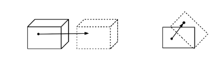
例えば、上図のように質点が矢印に沿って運動を行ったものとすると、左側（並進運動）では他の位置に質点を指定しても矢印と同じ運動を行うのでどちらも同じ運動方程式で記述される。しかし、右側（回転運動）にあるように途中で引っかかり回転した場合には質点の位置によって運動が異なるため、別の運動方程式となってしまうことが懸念される、同様に、変形する場合でも場所ごとで運動の様子が違うので同じことが言える。このような運動はどのようにすればよいのか考えてみると、視点を変えてそもそも質点の指定する位置ごとで運動が違っているものと予想できる。言うなれば、それぞれの地点での質点は異なる運動方程式に従っており、全体（物体）の運動を表す際はそれら全て見ていく必要があることになる。そこで、それぞれの地点の質点が別の運動方程式に従うものとして、それらを踏まえて物体全体の運動を記述してみよう。
今、物体を質点の集合体としてその内 $i$ 番目の運動方程式を記述すると
$$ m_i \frac{\mathrm{d}^2\bm{r}i} {\mathrm{d}t^2}= \bm{F}{i}+ \sum_{j=1(j\neq i)}^{N}\bm{F}_{ij} $$
と書ける。ここで、$m_i、\bm{r}i、\bm{F}i、\bm{F}{ij}、$ はそれぞれ質点の位置ベクトル、 位置ベクトル、外部からの力（外力）、別の $j$ 番目の質点との間に働く力（内力）を表している。さて、内力に関して作用・反作用の法則 $\bm{F}{ij}=-\bm{F}_{ji}$ が成り立つため、先ほどの式を $i$ に対して総和をとると以下のように内力の項が相殺されて0となる。
$$ \sum_{i=1}^N \left( m_i \frac{\mathrm{d}^2\bm{r}i} {\mathrm{d}t^2} \right)= \sum{i=1}^N \bm{F}{i}+ \sum{i=1}^N \sum_{j=1(j\neq i)}^{N}\bm{F}{ij}= \sum{i=1}^N \bm{F}_{i} $$
ここで、右辺が質点全体にかかる力（合力）であることから全体的に見て
$$ m\frac{\mathrm{d}^2\bm{r}}{\mathrm{d}t^2}= \bm{F} $$
という形になっていると考えられる。そこで、$m$ を質点全体（物体自体）の質量として
$$ \sum_{i=1}^N \left( m_i\frac{\mathrm{d}^2\bm{r}i} {\mathrm{d}t^2} \right)= m \frac{\mathrm{d}^2} {\mathrm{d}t^2} \left( \frac{1}{m}\sum{i=1}^N m_i\bm{r}_i \right) $$
というように変形して比較してみると、$\bm{r}$ は以下の形で置くことができる。
$$ \bm{r}=\frac{1}{m}\sum_{i=1}^N m_i\bm{r}_i $$
この位置ベクトルが指す地点は、例として質点が2個（$N=2$）の場合だと
$$ \bm{r}= \frac{m_1\bm{r}_1+m_2\bm{r}_2}{m_1+m_2} $$
となっているため、内分点の公式と同じ形になっていることが見て取れる（二体問題における $\bm{r}_G$ に相当）。
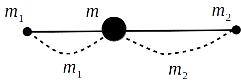
そのため、$\bm{r}$ は質点1と2の間を内分する地点の位置を指しており、この位置を物体の位置として扱うことになる。言い換えれば、物体を地点 $\bm{r}$ にある質量 $m(=m_1+m_2)$ の質点に置き換えるという操作を行っており、従来のときとほぼ同様なことをしていることが分かる。ただし、その位置はどこでもよいわけではなく、上式で制限されているところが従来と異なる。同じように、質点が3個の場合でも質量 $m$ の質点の位置は以下のようになる。このように、複数の質点をまとめて見た時に中心となる位置のことを一般的に 重心 と呼ぶ。
$$ \bm{r}= \frac{m_1\bm{r}_1+m_2\bm{r}_2+m_3\bm{r}3} {m_1+m_2+m_3}= \frac{(m_1+m_2)\bm{r}{12}+m_3\bm{r}3} {(m_1+m_2)+m_3}、 \bm{r}{12}= \frac{m_1\bm{r}_1+m_2\bm{r}_2}{m_1+m_2} $$
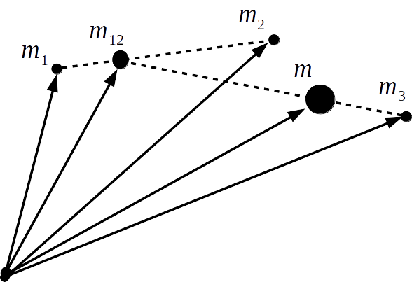
以上のことから、物体の重心 $\bm{r}$ に質量 $m$ の質点があるものとみなすことで運動を記述できることになる。しかし、力のつり合いが成り立っている状況でも引っかけた場合だと回転してしまうため、回転運動については別で考察が必要になるものと思われる。そのため、次頁では回転運動について具体的に見ていくことにしよう。
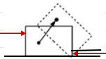
回転運動について
回転運動について
ここからは、どのように回転運動を扱うかを述べていくことにする。そもそも回転というのは、ある一点を軸にその周囲を運動することを言う。その様子を記述するとき、ちょうど二体問題で扱った極座標が便利であるため、通常の運動方程式
$$ m\frac{\mathrm{d}^2x}{\mathrm{d}t^2}=F_x、 m\frac{\mathrm{d}^2y}{\mathrm{d}t^2}=F_y $$
を以下のように置き換えてみることにする。
$$ x=r\cos\theta、 y=r\sin\theta $$
まず、各方向の速度を置き換えると
$$ v_x= \frac{\mathrm{d}x}{\mathrm{d}t}= \frac{\mathrm{d}r}{\mathrm{d}t}\cos\theta- r\frac{\mathrm{d}\theta}{\mathrm{d}t}\sin\theta $$ $$ v_y= \frac{\mathrm{d}y}{\mathrm{d}t}= \frac{\mathrm{d}r}{\mathrm{d}t}\sin\theta+ r\frac{\mathrm{d}\theta}{\mathrm{d}t}\cos\theta $$
となるが、ここで極座標での速度 $v_r,v_\theta$ は以下の図のように $r,\theta$ が増加する方向を正とした成分で表されることから
$$ v_r=v_x\cos\theta+v_y\sin\theta、 v_\theta=v_y\cos\theta-v_x\sin\theta $$


である（$v_r$ に関しては赤線と青線の長さを足したもの、$v_\theta$ については 青線から赤線を引いた長さになっている）ことを踏まえ、この左辺に先ほど求めた速度を代入すると以下の式が求められる。
$$ v_r= \frac{\mathrm{d}r}{\mathrm{d}t}、 v_\theta= r\frac{\mathrm{d}\theta}{\mathrm{d}t} $$
この形については、以下のように各方向の微小変化を見ることで正しいものと確認できる。

次に、加速度についても同様に
$$ a_x= \frac{\mathrm{d}^2x}{\mathrm{d}t^2}= \frac{\mathrm{d}^2r} {\mathrm{d}t^2} \cos\theta- 2\frac{\mathrm{d}r} {\mathrm{d}t} \frac{\mathrm{d}\theta} {\mathrm{d}t} \sin\theta- r \frac{\mathrm{d}^2\theta} {\mathrm{d}t^2} \sin\theta- r \left( \frac{\mathrm{d}\theta} {\mathrm{d}t} \right)^2 \cos\theta $$ $$ a_y= \frac{\mathrm{d}^2y}{\mathrm{d}t^2}= \frac{\mathrm{d}^2r} {\mathrm{d}t^2} \sin\theta+ 2\frac{\mathrm{d}r} {\mathrm{d}t} \frac{\mathrm{d}\theta} {\mathrm{d}t} \cos\theta+ r \frac{\mathrm{d}^2\theta} {\mathrm{d}t^2} \cos\theta- r \left( \frac{\mathrm{d}\theta} {\mathrm{d}t} \right)^2 \sin\theta $$
と置き換えたうえで、極座標での加速度 $a_r,a_\theta$ との関係が
$$ a_r=a_x\cos\theta+a_y\sin\theta、 a_\theta=a_y\cos\theta-a_x\sin\theta $$
であることから、求めた加速度を代入してみると
$$ a_r= \frac{\mathrm{d}^2r} {\mathrm{d}t^2}- r \left( \frac{\mathrm{d}\theta}{\mathrm{d}t} \right)^2、 a_\theta= 2\frac{\mathrm{d}r} {\mathrm{d}t} \frac{\mathrm{d}\theta} {\mathrm{d}t}+ r \frac{\mathrm{d}^2\theta} {\mathrm{d}t^2} $$
となるが、一方で力についても加速度と同様に
$$ F_r= F_x\cos\theta+F_y\sin\theta、 F_\theta= F_y\cos\theta-F_x\sin\theta $$
が成り立つことから、極座標での運動方程式は以下の通りになっていることが分かる。
$$ m\left[ \frac{\mathrm{d}^2r} {\mathrm{d}t^2}- r \left( \frac{\mathrm{d}\theta} {\mathrm{d}t} \right)^2 \right]=F_r、 m\left( 2\frac{\mathrm{d}r} {\mathrm{d}t} \frac{\mathrm{d}\theta} {\mathrm{d}t}+ r \frac{\mathrm{d}^2\theta} {\mathrm{d}t^2} \right)=F_\theta $$
これらの式を詳しく見ていくと、動径方向については
$$ m\frac{\mathrm{d}^2r}{\mathrm{d}t^2}= F_r+f_{r,\theta}、 f_{r,\theta}= mr \left( \frac{\mathrm{d}\theta}{\mathrm{d}t} \right)^2 $$
というように、通常の運動方程式にあたかも力 $f_{r,\theta}$ （遠心力）が遠ざかる方向に加わった形になっている。次に、角度方向については二体問題と同じように $r$ をかけて整理すると
$$ \frac{\mathrm{d}L}{\mathrm{d}t}= rF_\theta、 L= mr^2\frac{\mathrm{d}\theta}{\mathrm{d}t} $$
というように $L$ を用いて書ける。ここで回転する条件を考えたとき、角度方向に動いていれば回転することから角度の時間微分（角速度）が常に0でないものと思われる。そこで、角速度を $\omega$ として先ほどの式を表記し直すと
$$ f_{r,\theta}= mr\omega^2、 L=mr^2\omega、 \omega= \frac{\mathrm{d}\theta}{\mathrm{d}t} $$
となるが、このうち $L$ は従来の運動量が質量（慣性質量）と速度の掛け算であったことを踏まえ
$$ L=I\omega、 I=mr^2 $$
というように $I$（慣性モーメント）を用いると、$L$ は角度方向の運動量（角運動量）として扱うことができる。すると、$rF_\theta$ は回転運動を変化させる量として $N$（モーメント）としてみなすことができ、
$$ \frac{\mathrm{d}L}{\mathrm{d}t}=N、 L=I\omega、N=rF_\theta $$
というように回転の運動方程式として記述される。ここで、$N$ について詳しく見ていくために直交座標系で書くと
$$ N=rF_\theta= r\cos\theta F_y - r\sin\theta F_x = xF_y - yF_x $$
となるが、これは外積と呼ばれる関係になっていることが予想される。例えば、ベクトル $\bm{a},\bm{b}$ が以下の図のようになっており $$ \bm{a}=(a_x,a_y,0)、\bm{b}=(b_x,b_y,0) $$
とすると、外積 $\bm{c}$ は以下の形で表される。
$$ \bm{c}=\bm{a}\times\bm{b}= (0,0,a_xb_y-a_yb_x) $$

試しに $\bm{a}=\bm{r},\bm{b}=\bm{F}$ として外積をとると、以下の通り $z$ 成分が先ほどの $N$ と一致していることが分かる。
$$ \bm{r}\times\bm{F}= (0,0,xF_y-yF_x)= (0,0,N) $$
そのため、回転方向については $z$ 成分に関する方程式になっていると考えられる。そこで、運動方程式
$$ m\frac{\mathrm{d}\bm{v}}{\mathrm{d}t}=\bm{F} $$
に外積をとることで一般的に回転の運動方程式がどのようになるかを見てみることにする。まず、両辺に $\bm{r}$ と外積をとると
$$ m \left( \bm{r}\times \frac{\mathrm{d}\bm{v}}{\mathrm{d}t} \right) =\bm{N}、 \bm{N} = \bm{r}\times\bm{F} $$
というように右辺がモーメント $\bm{N}$ となるので、左辺を変形してみると
$$ \left( \bm{r}\times \frac{\mathrm{d}\bm{v}}{\mathrm{d}t} \right)= \frac{\mathrm{d}}{\mathrm{d}t} (\bm{r}\times\bm{v})- (\bm{v}\times\bm{v})= \frac{\mathrm{d}}{\mathrm{d}t} (\bm{r}\times\bm{v}) $$
となるので以下の通りになる。
$$ m \frac{\mathrm{d}}{\mathrm{d}t} (\bm{r}\times\bm{v})= \bm{N} $$
そして、左辺を極座標で整理することで
$$ m(\bm{r}\times\bm{v})= \left( 0,0, mx \frac{\mathrm{d}y}{\mathrm{d}t}- my \frac{\mathrm{d}x}{\mathrm{d}t} \right)= I\bm{\omega}、 \bm{\omega}=(0,0,\omega) $$
というように角運動量 $L$ の $z$ 成分と同じ形になっていることが分かる。そのため、最終的に回転の運動方程式は以下の通りになる。
$$ m\frac{\mathrm{d}^2r}{\mathrm{d}t^2}= F_r+f_{r,\theta}、 f_{r,\theta}= mr\omega^2 $$ $$ \frac{\mathrm{d}\bm{L}} {\mathrm{d}t}= \bm{N}、 \bm{L}= m(\bm{r}\times\bm{v})= I\bm{\omega}、 \bm{N}=\bm{r}\times\bm{F} $$
ここまでは話を簡単にするため2次元を扱ってきたが、同様に3次元においても成立するかを見てみる。まず、直交座標系 $(x,y,z)$ と極座標 $(r,\theta,\phi)$ に置き換えると
$$ x=r\sin\theta\cos\phi、 y=r\sin\theta\sin\phi、 z=r\cos\theta $$
であるため、まず各成分の速度を求めると
$$ v_x= \frac{\mathrm{d}x}{\mathrm{d}t}= \frac{\mathrm{d}r}{\mathrm{d}t} \sin\theta\cos\phi+ r \frac{\mathrm{d}\theta}{\mathrm{d}t} \cos\theta\cos\phi- r\sin\theta \frac{\mathrm{d}\phi}{\mathrm{d}t} \sin\phi $$ $$ v_y= \frac{\mathrm{d}y}{\mathrm{d}t}= \frac{\mathrm{d}r}{\mathrm{d}t} \sin\theta\sin\phi+ r \frac{\mathrm{d}\theta}{\mathrm{d}t} \cos\theta\sin\phi+ r\sin\theta \frac{\mathrm{d}\phi}{\mathrm{d}t} \cos\phi $$ $$ v_z= \frac{\mathrm{d}z}{\mathrm{d}t}= \frac{\mathrm{d}r}{\mathrm{d}t} \cos\theta- r \frac{\mathrm{d}\theta}{\mathrm{d}t} \sin\theta $$
となる。一方で極座標での速度 $v_r,v_\theta,v_\phi$ は二次元のときの関係式を利用すると、まず
$$ v_{x,y}=v_x\cos\phi+v_y\sin\phi、 v_\phi=v_y\cos\phi-v_x\sin\phi $$
というように $x,y$ 平面上の動径 $r_{x,y}$ 方向および角度 $\phi$ 方向の速度になり、動径 $r$ 方向と角度 $\phi$ 方向の速度も
$$ v_r=v_z\cos\theta+v_{x,y}\sin\theta、 v_\theta=v_{x,y}\cos\theta-v_z\sin\theta $$

となることから、求めた速度を代入してみると
$$ v_{x,y}= \frac{\mathrm{d}r}{\mathrm{d}t} \sin\theta+ r \frac{\mathrm{d}\theta}{\mathrm{d}t} \cos\theta、 v_\phi= r\sin\theta \frac{\mathrm{d}\phi}{\mathrm{d}t}、 v_r= \frac{\mathrm{d}r}{\mathrm{d}t}、 v_\theta= r\frac{\mathrm{d}\theta}{\mathrm{d}t} $$
このうち、速度 $v_r,v_\theta,v_\phi$ については以下のように微小変化を見ることで正しいことが分かる。

そして、加速度についても
$$ \begin{align*} a_x=\frac{\mathrm{d}^2x}{\mathrm{d}t^2} &= \frac{\mathrm{d}}{\mathrm{d}t} \left( \frac{\mathrm{d}r}{\mathrm{d}t} \sin\theta\cos\phi+ r\frac{\mathrm{d}\theta}{\mathrm{d}t} \cos\theta\cos\phi- r\frac{\mathrm{d}\phi}{\mathrm{d}t} \sin\theta\sin\phi \right)\ &= \frac{\mathrm{d}^2r}{\mathrm{d}t^2} \sin\theta\cos\phi+ 2\frac{\mathrm{d}r}{\mathrm{d}t} \frac{\mathrm{d}\theta}{\mathrm{d}t} \cos\theta\cos\phi- 2\frac{\mathrm{d}r}{\mathrm{d}t} \frac{\mathrm{d}\phi}{\mathrm{d}t} \sin\theta\sin\phi\ &+ r\frac{\mathrm{d}^2\theta}{\mathrm{d}t^2} \cos\theta\cos\phi- r \left( \frac{\mathrm{d}\theta}{\mathrm{d}t} \right)^2 \sin\theta\cos\phi- 2r\frac{\mathrm{d}\theta}{\mathrm{d}t} \frac{\mathrm{d}\phi}{\mathrm{d}t} \cos\theta\sin\phi\ &- r\frac{\mathrm{d}^2\phi}{\mathrm{d}t^2} \sin\theta\sin\phi- r \left( \frac{\mathrm{d}\phi}{\mathrm{d}t} \right)^2 \sin\theta\cos\phi \end{align*} $$ $$ \begin{align*} a_y=\frac{\mathrm{d}^2y}{\mathrm{d}t^2} &= \frac{\mathrm{d}}{\mathrm{d}t} \left( \frac{\mathrm{d}r}{\mathrm{d}t} \sin\theta\sin\phi+ r\frac{\mathrm{d}\theta}{\mathrm{d}t} \cos\theta\sin\phi+ r\frac{\mathrm{d}\phi}{\mathrm{d}t} \sin\theta\cos\phi \right)\ &= \frac{\mathrm{d}^2r}{\mathrm{d}t^2} \sin\theta\sin\phi+ 2\frac{\mathrm{d}r}{\mathrm{d}t} \frac{\mathrm{d}\theta}{\mathrm{d}t} \cos\theta\sin\phi+ 2\frac{\mathrm{d}r}{\mathrm{d}t} \frac{\mathrm{d}\phi}{\mathrm{d}t} \sin\theta\cos\phi\ &+ r\frac{\mathrm{d}^2\theta}{\mathrm{d}t^2} \cos\theta\sin\phi- r \left( \frac{\mathrm{d}\theta}{\mathrm{d}t} \right)^2 \sin\theta\sin\phi+ 2r\frac{\mathrm{d}\theta}{\mathrm{d}t} \frac{\mathrm{d}\phi}{\mathrm{d}t} \cos\theta\cos\phi\ &+ r\frac{\mathrm{d}^2\phi}{\mathrm{d}t^2} \sin\theta\cos\phi- r \left( \frac{\mathrm{d}\phi}{\mathrm{d}t} \right)^2 \sin\theta\sin\phi \end{align*} $$ $$ \begin{align*} a_z=\frac{\mathrm{d}^2z}{\mathrm{d}t^2} &= \frac{\mathrm{d}}{\mathrm{d}t} \left( \frac{\mathrm{d}r}{\mathrm{d}t} \cos\theta- r\frac{\mathrm{d}\theta}{\mathrm{d}t} \sin\theta \right)\ &= \frac{\mathrm{d}^2r}{\mathrm{d}t^2} \cos\theta- 2\frac{\mathrm{d}r}{\mathrm{d}t} \frac{\mathrm{d}\theta}{\mathrm{d}t} \sin\theta- r\frac{\mathrm{d}^2\theta}{\mathrm{d}t^2} \sin\theta- r \left( \frac{\mathrm{d}\theta}{\mathrm{d}t} \right)^2 \cos\theta \end{align*} $$
となるが、先ほどの速度と同じように極座標において
$$ a_{x,y}=a_x\cos\phi+a_y\sin\phi、 a_\phi=a_y\cos\phi-a_x\sin\phi $$ $$ a_r=a_z\cos\theta+a_{x,y}\sin\theta、 a_\theta=a_{x,y}\cos\theta-a_z\sin\theta $$
が成り立つものとして代入してみると
$$ a_{x,y}= \frac{\mathrm{d}^2r}{\mathrm{d}t^2} \sin\theta+ 2\frac{\mathrm{d}r}{\mathrm{d}t} \frac{\mathrm{d}\theta}{\mathrm{d}t} \cos\theta+ r\frac{\mathrm{d}^2\theta}{\mathrm{d}t^2} \cos\theta- r \left( \frac{\mathrm{d}\theta}{\mathrm{d}t} \right)^2 \sin\theta- r \left( \frac{\mathrm{d}\phi}{\mathrm{d}t} \right)^2 \sin\theta $$ $$ a_\phi= 2\frac{\mathrm{d}r}{\mathrm{d}t} \frac{\mathrm{d}\phi}{\mathrm{d}t} \sin\theta+ 2r\frac{\mathrm{d}\theta}{\mathrm{d}t} \frac{\mathrm{d}\phi}{\mathrm{d}t} \cos\theta+ r\frac{\mathrm{d}^2\phi}{\mathrm{d}t^2} \sin\theta $$ $$ a_r= \frac{\mathrm{d}^2r}{\mathrm{d}t^2}- r \left( \frac{\mathrm{d}\theta}{\mathrm{d}t} \right)^2- r \left( \frac{\mathrm{d}\phi}{\mathrm{d}t} \right)^2 \sin^2\theta $$ $$ a_\theta= r \frac{\mathrm{d}^2\theta}{\mathrm{d}t^2}+ 2 \frac{\mathrm{d}r}{\mathrm{d}t} \frac{\mathrm{d}\theta}{\mathrm{d}t}- r \left( \frac{\mathrm{d}\phi}{\mathrm{d}t} \right)^2 \sin\theta\cos\theta $$
となる。そのため、極座標での各成分の運動方程式は
$$ v_r= \left( \frac{\mathrm{d}r}{\mathrm{d}t} \right)、 \omega_\theta= \left( \frac{\mathrm{d}\theta}{\mathrm{d}t} \right)、 \omega_\phi= \left( \frac{\mathrm{d}\phi}{\mathrm{d}t} \right) $$
と置くことで、以下の通りになる。
$$ m\frac{\mathrm{d}v_r}{\mathrm{d}t}- mr\omega_\theta^2- mr\omega_\phi^2\sin^2\theta= \left( F_x\cos\phi+ F_y\sin\phi \right) \sin\theta+ F_z\cos\theta $$ $$ mr \frac{\mathrm{d}\omega_\theta}{\mathrm{d}t}+ 2mv_r\omega_\theta- mr\omega_\phi^2\sin\theta\cos\theta= \left( F_x\cos\phi+ F_y\sin\phi \right) \cos\theta- F_z\sin\theta $$ $$ mr \frac{\mathrm{d}\omega_\phi}{\mathrm{d}t} \sin\theta+ 2mr\omega_\theta\omega_\phi\cos\theta+ 2mv_r\omega_\phi\sin\theta= -F_x\sin\phi+ F_y\cos\phi $$
ここで、2次元のときの力の関係式を踏まえると
$$ F_{x,y}= F_x\cos\phi+F_y\sin\phi、 F_\phi= F_y\cos\phi-F_x\sin\phi $$
というように $x,y$ 平面上の動径 $r_{x,y}$ 方向および角度 $\phi$ 方向の力になり、動径 $r$ 方向と角度 $\theta$ 方向の力も
$$ F_r= F_z\cos\theta+ F_{x,y}\sin\theta、 F_\theta= F_{x,y}\cos\theta- F_z\sin\theta $$
という関係にあることから、最終的に以下の形になる。
$$ m\frac{\mathrm{d}v_r}{\mathrm{d}t}- mr\omega_\theta^2- mr\omega_\phi^2\sin^2\theta= F_r $$ $$ mr \frac{\mathrm{d}\omega_\theta}{\mathrm{d}t}+ 2mv_r\omega_\theta- mr\omega_\phi^2\sin\theta\cos\theta= F_\theta $$ $$ mr \frac{\mathrm{d}\omega_\phi}{\mathrm{d}t} \sin\theta+ 2mr\omega_\theta\omega_\phi\cos\theta+ 2mv_r\omega_\phi\sin\theta= F_\phi $$
ここで、動径方向の運動方程式を整理すると
$$ m\frac{\mathrm{d}v_r}{\mathrm{d}t}- \left( mr\omega_\theta^2+ mr\omega_\phi^2\sin^2\theta \right)= F_r $$
となるが、括弧内の部分は遠心力となっている。実際、第１項目については、$x,y$ と $z$ 平面での遠心力となるため、
$$ f_{r,\theta}= mr\omega_\theta^2 $$
となる。第2項目については、$x,y$ 平面上での遠心力が
$$ f_{x,y}= m(r\sin\theta)\omega_\phi^2 $$
であり、先ほどの動径方向の関係式を利用すると
$$ f_{r,\phi}= F_z\cos\theta+ F_{x,y}\sin\theta= 0+f_{x,y}\sin\theta= mr\omega_\phi^2\sin^2\theta $$
というように第2項目の力になっていることが分かる。そのため、動径方向については以下のようになると思われる。
$$ m\frac{\mathrm{d}v_r}{\mathrm{d}t}= F_r+ (f_{r,\theta}+f_{r,\phi})、 f_{r,\theta}= mr\omega_\theta^2、 f_{r,\phi}= [m(r\sin\theta)\omega_\phi^2]\sin\theta $$
このことからも伺えるように $\theta$ の方向には $r$ 、$\phi$ の方向には $r\sin\theta$ の位置で回転することから
$$ L_\theta= mr^2\omega_\theta、 L_\phi= m(r\sin\theta)^2\omega_\phi $$
と角運動量をおき、これらを微分してみると $\theta,\phi$ の運動方程式も利用することで
$$ \frac{\mathrm{d}L_\theta}{\mathrm{d}t} = r\left( mr \frac{\mathrm{d}\omega_\theta}{\mathrm{d}t}+ 2mv_r\omega_\theta \right)= r \left( F_\theta+ mr\omega_\phi^2\sin\theta\cos\theta \right) $$ $$ \frac{\mathrm{d}L_\phi}{\mathrm{d}t} = r\sin\theta \left( mr \frac{\mathrm{d}\omega_\phi}{\mathrm{d}t} \sin\theta+ 2mr\omega_\theta\omega_\phi\cos\theta+ 2mv_r\omega_\phi\sin\theta \right)= r\sin\theta F_\phi $$
が得られる。ここで、$L_\theta$ に関する式の第二項目については、$\phi$ 方向の回転に対する遠心力の $\theta$ 方向の成分であり、実際
$$ f_{\theta,\phi}= F_{x,y}\cos\theta- F_z\sin\theta= m(r\sin\theta)\omega_\phi^2\cos\theta+0= mr\omega_\phi^2\sin\theta\cos\theta $$
となることからも分かる。以上のことから、以下の形にまとめられることが分かる。
$$ m\frac{\mathrm{d}v_r}{\mathrm{d}t}= F_r+ (f_{r,\theta}+f_{r,\phi})、 f_{r,\theta}= mr\omega_\theta^2、 f_{r,\phi}= [m(r\sin\theta)\omega_\phi^2]\sin\theta $$ $$ \frac{\mathrm{d}L_\theta}{\mathrm{d}t} = r(F_\theta+f_{\theta,\phi})、 L_\theta= mr^2\omega_\theta、 f_{\theta,\phi}= [m(r\sin\theta)\omega_\phi^2]\cos\theta $$ $$ \frac{\mathrm{d}L_\phi}{\mathrm{d}t} = r\sin\theta F_\phi、 L_\phi= m(r\sin\theta)^2\omega_\phi $$
ここで $L_\theta$ と $L_\phi$ の関係式が
$$ \frac{\mathrm{d}\bm{L}}{\mathrm{d}t}= \bm{N}、 \bm{L}=\bm{r}\times\bm{p}、 \bm{N}=\bm{r}\times\bm{F} $$
に対応しているか見てみよう。まず、角運動量が直交座標系において
$$ L_x=m(yv_z-zv_y)、 L_y=m(zv_x-xv_z)、 L_z=m(xv_y-yv_x) $$
となることから、極座標では以下のようになる。
$$ L_x= -mr^2 ( \omega_\theta\sin\phi+ \omega_\phi\sin\theta\cos\theta\cos\phi ) $$ $$ L_y= mr^2 ( \omega_\theta\cos\phi- \omega_\phi\sin\theta\cos\theta\sin\phi )
$$ $$ L_z= mr^2\omega_\phi\sin^2\theta $$
また、$x,y$ 平面上において動径 $r_{x,y}$ 方向および $r_{x,y}$ に垂直な方向（角度 $\theta$ に垂直な方向）の角運動量が
$$ L_{x,y}= L_x\cos\phi+L_y\sin\phi、 L_\theta= L_y\cos\phi-L_x\sin\phi $$
であり、動径 $r$ 方向と $r$ に垂直な方向についても
$$ L_r= L_z\cos\theta+ L_{x,y}\sin\theta、 L_{r_\perp}= L_{x,y}\cos\theta- L_z\sin\theta $$
であることから、これらに代入すると
$$ L_{x,y}= -mr^2\omega_\phi \sin\theta\cos\theta、 L_\theta= mr^2\omega_\theta、 L_r=0、 L_{r_\perp}= -mr^2\omega_\phi\sin\theta $$

となる。このうち、$L_\theta$ は先ほど運動方程式から求めた形と一致していることが分かる。$L_\phi$ については、形を見比べると $L_\phi=L_z$ であるため、確認のため時間微分をとり
$$ \frac{\mathrm{d}L_\phi}{\mathrm{d}t}= \frac{\mathrm{d}L_z}{\mathrm{d}t}= xF_y-yF_x $$
とすると、極座標において
$$ x=r\sin\theta\cos\phi、 y=r\sin\theta\sin\phi、 F_\phi=F_y\cos\phi-F_x\sin\phi $$
となることを踏まえて整理すると
$$ \frac{\mathrm{d}L_\phi}{\mathrm{d}t}= r\sin\theta (F_y\cos\phi-F_x\sin\phi)= r\sin\theta F_\phi $$
となる。そのため、3次元においても回転の運動方程式
$$ \frac{\mathrm{d}\bm{L}}{\mathrm{d}t}= \bm{N}、 \bm{L}=(\bm{r}\times\bm{v})、 \bm{N}=\bm{r}\times\bm{F} $$
が成り立つことが分かる。あるいは角速度 $\bm{\omega}$ に関して角運動量と同じように
$$ \omega_{x,y}= \omega_x\cos\phi+\omega_y\sin\phi、 \omega_\theta= \omega_y\cos\phi-\omega_x\sin\phi $$ $$ \omega_r= \omega_z\cos\theta+ \omega_{x,y}\sin\theta、 \omega_{r_\perp}= \omega_{x,y}\cos\theta- \omega_z\sin\theta $$
とすると、$\omega_\theta$ に関して $L_\theta$ が
$$ L_\theta=mr^2\omega_\theta= L_y\cos\phi-L_x\sin\phi $$
であることから、
$$ \omega_x= \frac{L_x}{mr^2}= -(\omega_\theta\sin\phi+ \omega_\phi\sin\theta\cos\theta\cos\phi) $$ $$ \omega_y= \frac{L_y}{mr^2}= \omega_\theta\cos\phi- \omega_\phi\sin\theta\cos\theta\sin\phi $$
であり、これを $\omega_{x,y}$ の式に代入すると以下の通りになる。
$$ \omega_{x,y}= -\omega_\phi\sin\theta\cos\theta $$
さらに、動径方向の回転成分がないことから $\omega_r=0$ であるため、$\omega_r$ の式から
$$ \omega_z=\omega_\phi\sin^2\theta $$
であり、これを最後の式に代入すると
$$ \omega_{r_\perp}= -\omega_\phi\sin\theta $$
であることになる。このことから、$I=mr^2$ とすることで $\bm{L}=I\bm{\omega}$ と表されることが分かる。
以上のように、回転運動を取り扱うには通常の運動方程式とは異なる方程式を利用する必要があることが分かる。そのため、次項で改めて物体自体の回転運動を取り扱うことにする。
剛体の力学
剛体の力学
前回の回転運動に関する内容を、今度は質点系においても適用してみよう。質点系での $i$ 番目の質点の運動方程式は $$ m_i \frac{\mathrm{d}^2\bm{r}i} {\mathrm{d}t^2}= \bm{F}{i}+ \sum_{j=1(j\neq i)}^{N}\bm{F}_{ij} $$
であったが、 $\bm{r}_i$ と外積をとって質点全体で総和をとると
$$ \sum_{i=1}^N m_i \left( \bm{r}i\times \frac{\mathrm{d}^2\bm{r}i} {\mathrm{d}t^2} \right)= \sum{i=1}^N (\bm{r}i\times\bm{F}{i})+ \sum{i=1}^N \sum_{j=1(j\neq i)}^{N} (\bm{r}i\times\bm{F}{ij}) $$
となり、ここで右辺第2項目に関して $\bm{F}{ij}=-\bm{F}{ji}$ を利用すれば
$$ \sum_{i=1}^N \sum_{j=1(j\neq i)}^{N} (\bm{r}i\times\bm{F}{ij})= \frac{1}{2} \sum_{i=1}^N \sum_{j=1(j\neq i)}^{N} (\bm{r}i\times\bm{F}{ij}+ \bm{r}j\times\bm{F}{ji})= \sum_{i=1}^N \sum_{j=1(j\neq i)}^{N} (\bm{r}_i-\bm{r}j) \times\bm{F}{ij} $$
であるため、$\bm{r}_i-\bm{r}j$ と $\bm{F}{ij}$ が平行であることから0になる。そのため、最終的には以下の形になる。
$$ \sum_{i=1}^N m_i \left( \bm{r}_i\times \frac{\mathrm{d}^2\bm{r}i} {\mathrm{d}t^2} \right)= \sum{i=1}^N (\bm{r}i\times\bm{F}{i}) $$
更に速度の形に変形すると、左辺は
$$ \sum_{i=1}^N m_i \left( \bm{r}_i\times \frac{\mathrm{d}^2\bm{r}i} {\mathrm{d}t^2} \right)= \sum{i=1}^N m_i \left( \bm{r}_i\times \frac{\mathrm{d}\bm{v}i} {\mathrm{d}t} \right)= \frac{\mathrm{d}}{\mathrm{d}t} \left[ \sum{i=1}^N m_i \left( \bm{r}_i\times\bm{v}_i \right) \right]
$$
となり、以下のように質点系でも回転の運動方程式が成り立つことが分かる。
$$ \frac{\mathrm{d}\bm{L}}{\mathrm{d}t}= \bm{N}、 \bm{L}= \sum_{i=1}^N m_i(\bm{r}_i\times\bm{v}i)、 \bm{N}= \sum{i=1}^N (\bm{r}i\times\bm{F}{i}) $$
並進運動を取り扱った際に、重心 $\bm{r}_G$ に外力 $\bm{F}$ が働くものとしていたが回転でも同様にいえるため、
$$ \frac{\mathrm{d}\bm{L}_G}{\mathrm{d}t}= \bm{N}_G、 \bm{L}_G=m(\bm{r}_G\times\bm{v}_G)、 \bm{N}_G=\bm{r}_G\times\bm{F} $$ $$ \bm{r}G= \frac{1}{m} \sum{i=1}^N m_i\bm{r}i、 \bm{v}G= \frac{1}{m} \sum{i=1}^N m_i\bm{v}i、 m= \sum{i=1}^N m_i、 \bm{F}= \sum{i=1}^N \bm{F}_i $$
という関係もあることになる。ここで先ほどの回転の運動方程式にて重心がどのように関係しているかを重心からの質点の位置と速度を $\bm{r}_i’,\bm{v}_i’$ として以下のように置き換えてみる。
$$ \bm{r}_i=\bm{r}_G+\bm{r}‘_i、 \bm{v}_i=\bm{v}_G+\bm{v}’_i $$
このようにしたときに、まず角運動量は
$$ \begin{align*} \bm{L} &= \sum_{i=1}^N m_i(\bm{r}_i\times\bm{v}i) = \sum{i=1}^N m_i \left( \bm{r}_G+\bm{r}‘_i \right) \times ( \bm{v}_G+\bm{v}’_i )\ &= m(\bm{r}_G\times\bm{v}_G)+ \bm{r}G\times \left( \sum{i=1}^N m_i\bm{v}‘i \right)+ \left( \sum{i=1}^N m_i\bm{r}’_i \right)\times\bm{v}G+ \sum{i=1}^N m_i(\bm{r}‘_i\times\bm{v}’_i) \end{align*} $$
となるが、ここで重心の関係式も踏まえて
$$ \sum_{i=1}^N m_i\bm{r}’i= \sum{i=1}^N m_i(\bm{r}_G-\bm{r}_i)= m\bm{r}G- \sum{i=1}^N m_i\bm{r}_i=\bm{0} $$
となることから、これを時間微分することで
$$ \frac{\mathrm{d}}{\mathrm{d}t} \left( \sum_{i=1}^N m_i\bm{r}‘i \right)= \sum{i=1}^N m_i\bm{v}’_i= \bm{0} $$
となることから、角運動量は以下の通りとなる。
$$ \bm{L}= m(\bm{r}_G\times\bm{v}G)+ \sum{i=1}^N m_i(\bm{r}‘_i\times\bm{v}’_i)= \bm{L}_G+\bm{L}’ $$
同じように、モーメントについても
$$ \bm{N}= \sum_{i=1}^N (\bm{r}i\times\bm{F}{i})= (\bm{r}G\times\bm{F})+ \sum{i=1}^N (\bm{r}‘i\times\bm{F}{i})= \bm{N}_G+\bm{N}’ $$
であるから、重心自体の回転と重心の周囲の回転との二つに分けることができる。ところが、重心の回転運動については前回の重心の運動方程式にも含まれている（重心が回転しているかも分かる）ため、回転については最終的に重心周りの運動のみ取り扱えばよいことになる。
$$ \frac{\mathrm{d}\bm{L}‘}{\mathrm{d}t}= \bm{N}’、 \bm{L}‘= \sum_{i=1}^N m_i(\bm{r}_i’\times\bm{v}i’)、 \bm{N}‘= \sum{i=1}^N (\bm{r}_i’\times\bm{F}_i) $$
ここまでのことを踏まえて、一般的に運動は以下の二つの式によって導出されるものと考えられる。
$$ \frac{\mathrm{d}\bm{p}}{\mathrm{d}t}= \bm{F} （重心の並進運動を記述） $$ $$ \frac{\mathrm{d}\bm{L}}{\mathrm{d}t}= \bm{N} （重心周りの回転運動を記述） $$
しかし、これらは物体の変形を考慮されておらず変形しない物体にしか適用されないものとなっている。そのため、この二つの式のみ従う物体はよく剛体（変形しない物体）と呼ばれている。また、変形しないというのは重心からの質点までの変位 $|\bm{r}’|$ が変化しないということであるため、以下の関係が成りたつことになる。
$$ \frac{\mathrm{d}}{\mathrm{d}t} |\bm{r}‘|= \frac{\mathrm{d}r’}{\mathrm{d}t}=0、 \bm{r}’=\bm{r}-\bm{r}_G $$
あるいは、$|\bm{r}‘|=\sqrt{\bm{r}’\cdot\bm{r}’}$ であることから以下の形でも表される。
$$ \frac{\mathrm{d}}{\mathrm{d}t} \sqrt{\bm{r}‘\cdot\bm{r}’}=0 \rightarrow (\bm{r}‘\cdot\bm{v}’)=0 $$
このことから、回転の速度ベクトルは位置ベクトルと直交した方向を向いていることが分かる。一方で、角運動量において
$$ \bm{L}‘=m(\bm{r}’\times\bm{v}‘)= I\bm{\omega}、 I=mr’^2 $$
というようになっていたことから、角速度が
$$ \omega= \frac{\bm{r}‘}{r’}\times \frac{\bm{v}‘}{r’} $$
であることから、左側から $\bm{r}’$ の外積をとってみるとベクトル三重積の公式から
$$ \bm{r}‘\times\bm{\omega}= \left( \bm{r}’\cdot \frac{\bm{v}‘}{r’} \right)\cdot \frac{\bm{r}‘}{r’} - \left( \bm{r}‘\cdot \frac{\bm{r}’}{r’} \right)\cdot \frac{\bm{v}‘}{r’}= \frac{\bm{r}‘}{r’^2}(\bm{r}‘\cdot\bm{v}’) -\bm{v}’ $$
となる。ここで、回転の速度ベクトルと位置ベクトルが直交していることも踏まえると、速度ベクトルは以下のようになる。
$$ \bm{v}‘=\bm{\omega}\times\bm{r}’ $$
そのため、これを
$$ \bm{L}‘= \sum_{i=1}^N m_i(\bm{r}’_i\times\bm{v}‘i)= \sum{i=1}^N \left[ m_i(\bm{r}’_i\cdot\bm{r}‘_i)\cdot\bm{\omega}_i- m_i(\bm{r}’_i\cdot\bm{\omega}_i)\cdot\bm{r}’_i \right] $$
というように展開すると
$$ L_x’= \sum_{i=1}^N m_i \left[ (y_i’^2+z_i’^2)\omega_{i,x}- x_i’y_i’\omega_{i,y}- x_i’z_i’\omega_{i,z} \right] $$ $$ L_y’= \sum_{i=1}^N m_i \left[ -x_i’y_i’\omega_{i,x}+ (x_i’^2+z_i’^2)\omega_{i,y}- y_i’z_i’\omega_{i,z} \right] $$ $$ L_z’= \sum_{i=1}^N m_i \left[ -x_i’z_i’\omega_{i,x}- y_i’z_i’\omega_{i,y}+ (x_i’^2+y_i’^2)\omega_{i,z} \right] $$
ということになることから、慣性モーメントを用いると
$$
\bm{L}‘=\bm{I}’\bm{\omega}‘、
\bm{I}’=
\sum_{i=1}^{N}
m_i
\begin{pmatrix}
y_i’^2+z_i’^2 &
-x_i’y_i’ &
-x_i’z_i’ \
-x_i’y_i’ &
y_i’^2+z_i’^2 &
-y_i’z_i’ \
-x_i’z_i’ &
-y_i’z_i’ &
x_i’^2+y_i’^2
\end{pmatrix}
$$
となる。
連続体力学
連続体力学
前回までは物体を質点の集合体（剛体）とみなすことで並進および回転運動を取り扱ってきたが、実際の質点と呼ばれるものには大きさがある。言い換えると、物体を図のように小さい領域に分割した各領域が質点とみなせるということである。普通に考えれば細かく分割すればするほど点に近づいてより質点とみなせるものと思われるが, あまりにも小さくしてしまうと $1\mathrm{\AA}$ ぐらいの大きさで原子の大きさになるため古典力学の範囲を超えた議論が必要となる（量子力学を参照）。このことから、分割する領域の大きさは原子が観測されない程度にする必要があり、さらには物体全体から見ても十分小さいもの（点に近いもの）でないといけないことになる。このことを踏まえながら物体を分割して質点系とみなすと、物体内で質点は連続的に分布しているので、元々の質点系（質点同士が離れている系）とは違うものとなっている。そのため、これと区別するために連続的に分布した質点系（あるいはこうみなした物体）のことを一般に連続体と呼ぶことが多い。
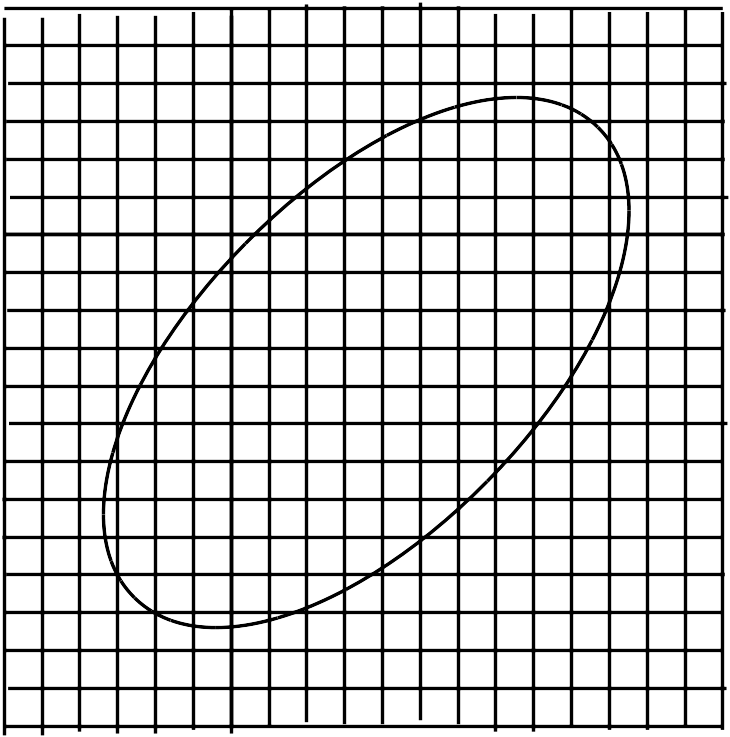
では、物体を連続体とみなすと運動はどのように記述されるかを見てみることにしよう。この場合も１つの質点に関する運動方程式は式で与えられるが、このときの質量 $m_i$ は内部領域の質量と同じものとなっている。この値は領域が物体の一部分であることをふまえると、全体の質量のうちどれだけ占めているかを見ると良いように思われる。言い換えると、どれだけ物体が内部領域内で密に詰まっているかということになるので、それを表すのに密度を用いてみると、以下のように書ける。 $$ \rho_i=\frac{m_i}{V_i} \rightarrow m_i=\rho_i V_i $$ これを見ると、密度が体積分だけあると質量になることが分かるので、１つの地点での値としてみなしても良く $\rho(\bm{r}_i)$ と書くことができる。一方で、作用する力は接触して働く力と離れていても働くものとの二種類あると考えられるため、それぞれ次のようにして作用しているものとする。
$$ \begin{cases} \begin{aligned} &\cdot 接触力\cdots 他の内部領域との接触面に働く力\ &\cdot 遠隔力\cdots 内部領域全体の質量などの状態で働く力 \end{aligned} \end{cases} $$
これらの力は接触面全体あるいは内部領域全体に作用するものであるが、このうち前者の方は作用・反作用の法則により１つの面を境に２つの内部領域には同じ大きさの力が逆向きに働くので、各面ごとに異なる力が働くものと思われる。対して後者の方は、内部領域ごとに違う（質量など）ものであるため、先ほどの密度と同様な考え方で面全体あるいは内部領域全体にかかる力を $\bm{F}{\mathrm{face}},\bm{F}{\mathrm{body}}$ として
$$ \begin{cases} \begin{aligned} &\cdot \bm{S}(\bm{r}{1})= \frac{\bm{F}{\mathrm{face}}}{A} （A:接触面の面積）\ &\cdot \bm{B}(\bm{r}{2})= \frac{\bm{F}{\mathrm{body}}}{V} （V:内部領域の体積） \end{aligned} \end{cases} $$
というように、面積力 $\bm{S}$ と体積力 $\bm{B}$ を定義してみる（このようにすると、図のように位置を指定することができる）。このようにした上で、内部領域に働く力を議論してみることにしよう。まず、面積力の方は内部領域を多面体（平面で囲まれている）と考えると以下のような力があると考えられる。剪断（せんだん）応力と垂直応力のふたつ。ただ、そうなると面の傾きが必要となり
$$ \bm{S}=\bm{P}+\bm{T}=（垂直応力）+（剪断応力） $$ $$ \bm{P}=-(\bm{S}\cdot\bm{n})\cdot\bm{n} \bm{T}=\bm{S}-\bm{P}= \bm{S}+(\bm{S}\cdot\bm{n})\cdot\bm{n} $$
もし、多面体が立方体であれば
$$ \begin{align*} \bm{S} &= \bm{S}{\mathrm{l}}+\bm{S}{\mathrm{r}}+\bm{S}{\mathrm{f}}+\bm{S}{\mathrm{b}}+ \bm{S}{\mathrm{u}}+\bm{S}{\mathrm{d}}\ &= \left[ \bm{S}(-\bm{e}{y})+\bm{S}(\bm{e}{y}) \right] \Delta x_{i}\Delta z_{i}+ \left[ \bm{S}(-\bm{e}{x})+\bm{S}(\bm{e}{x}) \right] \Delta y_{i}\Delta z_{i}+ \left[ \bm{S}(-\bm{e}{z})+\bm{S}(\bm{e}{z}) \right] \Delta x_{i}\Delta y_{i} \end{align*} $$
であり、中には内部領域の外側に行くと傾きを持つものも出てくるため、
$$ \begin{equation} \left( \rho(\bm{r}{i})V{i} \right) \frac{\mathrm{d}^2\bm{r}{i}} {\mathrm{d}t^2}= \sum{i=1(\neq j)}^{\mathrm{N}} \bm{F}{\mathrm{ij}}+ \bm{F}{i}、 \left( i=1,\cdots,\mathrm{N} \right) \end{equation} $$
そこで、変形する物体も扱えるようにするために\tb{連続体力学}が誕生したのである。
熱力学
現在のように熱力学と呼ぶようになったのは19世紀に入ってからであり、それ以前は単に熱学であった。熱学の研究の起源については、他の科学の歴史と同様に、古代ギリシャ、ローマにまで遡らなければならない。当時、自然現象を研究する基本的方法は、見たり感じたりなどする簡単な観察が行われた程度であった。すでに当時でも、最も簡単な熱作用の現れである蒸発、沸騰、融解などが知られていたが、これらの現象を説明しようとする試みは成功していなかった。
人間がこの分野における知識をはじめて充実させ、体系化して物理的解釈を与えたのはやっと17世紀になってからのことである。それは熱現象を単に観察するだけではなく、実験的に研究しようとするようになったからである。この頃になると温度計の発明がなされていた。たとえば、ガリレイは空気の熱膨張を利用した一種の気体を考案している。あとで述べるように、引き続いていろいろな温度計が作られた。こうして温度が定量的に測定できるようになると、それに応じて熱学も発展していった。特に18世紀に混乱をまねいた熱理論の2つの基本概念である温度と熱量を正確に区別することが可能となった。
実験に基づいた熱現象の研究は、いわゆる熱と呼ばれるものの性質についての問題解決へと近づいて行った。しかしながら、その本質が何であるかについては、18世紀の終わりごろまでは熱を運動の一形態と考える学者と、熱を一種の物質とする熱素説（カロリック説）をとる学者とがあった。熱素説は18世紀半ばすぎに起こった。提唱者はフランスのラヴォアジエで、1787年の命名である。熱という一種の物質があるとする考え方はギリシャ時代からもあったが、それが18世紀に復活した背景には、光と同様にニュートン物理学が有力に働いていたことも事実であろう、18世紀のはじめにニュートンは光の粒子説を唱えていた。したがって、熱現象を熱素によって説明することは、当時多くの学者たちにとって全く当然に思われたのである。のみならず、カロリックによって純熱学的現象を説明することにある程度成功したのである。例えば、イギリスのブラックは熱素説の立場から熱容量や潜熱の概念を明らかにした。一方で同じ頃、独立に比熱、潜熱、熱膨張などについて研究していたイギリスのキャベンディッシュは、ブラックの潜熱という表現に反対して、水蒸気が凝結するときは”熱が発生する”という表現をとった。彼は熱が物体中の粒子の内部運動であるという考えを基にして、今日の気体分子運動論的立場をとっていた。そのほか、ロシアのロモノソフは熱の本性が物体を構成する微粒子の回転運動によるものと考えていた。このように、物体を構成する微粒子の運動が熱の本質であるという考えをもとに、逆に完全に運動が静止するような温度が存在しなければならないという結論も下している。これは後にトムソンによって発見された温度（絶対零度）であったのだが、熱素説が注目されていた当時としては影が薄いものとなっていた。
しかし、熱学的現象に力学的現象が加わるような現象を説明するようになってから熱素説に陰りが出始めた。その一つとしてランフォードの実験がある。すなわち、彼がミュンヘンの造兵廠（ぞうへいしょう）で大砲作りの監督をしていたとき、砲身を穿孔（せんこう）する際に熱が無尽蔵に出てくることから考えて、1798年に熱が物質ではなく運動の中にあると結論を下したのである。1799年イギリスのデービィも空気ポンプを使って、真空中で2つの氷片を時計仕掛けで互いにすり合わせてできる水を観測し、運動と熱との関係に注目した。これらの実験は、これから先いろいろな形でほかの学者によって繰り返され、どれも熱素説に反することを証明したものとなっていた。このことから、熱というものに関する基本的な概念を根本的に再検討することの発端になった。そして、熱が運動の特殊な形態であることが熱の仕事当量の発見により確認されたのである。この仕事当量というのは、熱と仕事が互いに変換されるときの量で定数（仕事の状態によらない決まった値）をとっている。ドイツの医学者マイヤーが初めて自身の人体生理学の問題において取り上げ、その後イギリスのジュールとマイヤーが独立して正確な値を測定している。ここで、熱が仕事に置き換わることからエネルギーの一形態であることが言えるので、クラウジウス、トムソンによってエネルギー保存則の原理が打ち立てられ、1847年ドイツのへルムホルツが独立にNewtonの運動法則からエネルギー保存則を発表している。Newtonの運動法則とあるように、力学の知識が取り入られたことで熱学は熱力学となり、熱と運動との関係により熱現象を論じる学問として発展していった。
温度
温度
温度という語は、われわれの受ける温かい、冷たいという感覚から生じたもので、温冷の度合いを表す物理的な尺度と言える。これは力の概念が筋肉の緊張から生じたものに対比される。日常生活で火が熱く、氷が冷たいというのは誰にも共通の感じであろう。また、井戸の水が冬温かく、熱冷たいというのも同じであろう。しかし、火が氷より温度が高いというのは本当であっても、井戸の水の温度が冬高いというのは早計である。このように人間の感覚は温度の標準としては適当ではない。そこで温度が物理的な尺度となるためには、人間の感覚を離れて客観的に定義されることが必要である。
実験の結果によると、2つの物体を外界と隔離して接触させておくと、いつも熱い方は冷え冷たい方は温まっていき、ついにはそれ以上変化が起こらなくなってしまう。このとき、この2物体は熱平衡に達したといい、このような状態に達した後では力学的つり合いを破らない（圧力や体積などを変化させない）ようにして２つの物体を離してもそれぞれの物体は熱平衡の状態にある。熱平衡の状態では温度は変化せず一定となることは経験的に理解しているところである。
いま、物体AとBが接触して熱平衡にあり、AとCが接触して熱平衡にあれば、BとCを接触させてもやはり熱平衡である。この事実を熱力学第0法則ということがある。ここで、互いに熱平衡にある物体について等しい値をとるような量として温度を考えると、AとBが等しい温度でAとCが等しい温度であればBとCはまた等しい温度といえる。ゆえに、2つの物体BとCが等しい温度であることを確かめるのに、BとCを直接接触させなくても間接的にAという物体を別々にBとCを接触させて調べることができる。このAの役割を担うものが温度計である。こうして定められた温度は後述の理論温度に対して経験温度という。
温度計としては何を選んでもよいが、容易に再現できるものを選ぶのが便利である。ただ、どの温度計も目盛りの示度が同じでなければ意味がない。この正しい温度目盛りを見出すためには、これまで述べた熱平衡の法則以外を調べなければならない。、歴史的には
エントロピーについて
エントロピーを次のように定義する。 $$ {\rm d}S\equiv\frac{{\rm d’}Q}{T} $$
温度が異なるAとBの系（$T_{\rm A}>T_{\rm B}$）を接触させた場合
$$ {\rm d}S_{\rm A}\equiv\frac{{\rm d’}Q_{\rm A}}{T_{\rm A}} $$
$$ {\rm d}S_{\rm B}\equiv\frac{{\rm d’}Q_{\rm B}}{T_{\rm B}} $$
となるが、ここで温度が熱の変化によって変化するため例えばAの場合だと
$$ \frac{{\rm d’}Q_{\rm A}}{T_{\rm A}}= \frac{{\rm d’}Q_{\rm A}}{T_{\rm A（一定）}} $$ ではなく、${\rm d’}Q_{\rm A}<0、T_{\rm A（一定）}\geq T_{\rm A}$であるため $$ \frac{{\rm d’}Q_{\rm A}}{T_{\rm A（一定）}}\geq \frac{{\rm d’}Q_{\rm A}}{T_{\rm A}} $$ となり、以下の不等式が成り立つことが分かる。 $$ {\rm d}S_{\rm A}\geq\frac{{\rm d’}Q_{\rm A}}{T_{\rm A}} $$ Bについても同様な議論を行うことで、${\rm d’}Q_{\rm B}>0、T_{\rm B}\leqq T_{\rm A}$であることをふまえて $$ {\rm d}S_{\rm B}\geq\frac{{\rm d’}Q_{\rm B}}{T_{\rm B}} $$ になる。エントロピー全体としても示量量であるため、${\rm d’}Q>0、{\rm d’}Q_{\rm B}={\rm d’}Q、{\rm d’}Q_{\rm A}=-{\rm d’}Q$ $$ {\rm d}S={\rm d}S_{\rm A}+{\rm d}S_{\rm B}= \left(\frac{1}{T_{\rm B}}-\frac{1}{T_{\rm A}}\right){\rm d’}Q\geq 0 $$ これから孤立系では熱平衡出ない状態であればエントロピーが増大し続け、熱平衡になればエントロピーがある値をとるようになる。この値はBoltzmannの原理により $$ S=k_{\rm B}\ln \mathcal{W} $$ で求めることができる。
stefan-boltzmannの法則もここで説明して
電磁気学
電磁気学が難しいとされる理由はいろいろあげられるが、その第一は力学と違って、そこで扱われる物理的対象がわれわれのに日常的な感覚を超えるものであることだろう。電荷や電流そのものも目に見えない。それでもそれらは、静電気や火花やコンセントのショートなどの体験によって、その存在を感知することができる。しかし、電磁気学の主役である電場や磁場となると、それらはまったく人間の五感とは無縁の存在であり、そのためにそれらは初学者にあたかも幻との格闘を強いている趣さえ感じられる。第２の理由は、力学と違って学ぶにつれて種々雑多の法則が次々と現れてきて、それらの法則の上下関係や相互関係が分からなくなり、全体の話の筋道が見失われがちな点にある。第3のつまずきの石は、そこに用いられている数学にあるようである。電磁気学で使用される数学は、主としてベクトル場の微分・積分という数学的にもかなり高度なものである。そのため、その数学に気をとられて物理どころではなくなってしまうのである。しかも、物理学と並行して学習しているはずの数学の内容が、物理学のそれに追いつかないことも原因の一つにあげられよう。
そこで、上記のような困難を克服するために、まずはなぜ電場や磁場というような抽象的な外見を導入する必要があるのかという理由を詳しく説明し、また身近なたとえ話などを用いて、それらの概念の物理的描像を把握できるように努めている。さらに、それらの物理量の実在感を確かなものにするために髄所に数値を与えて、それらの量の大きさの程度の間隔を養えるようにしている。第二の困難に関しては、話の進行につれて現れるいろいろな法則の交通整理を行い、それぞの奉読の電磁気学の全体系における位置づけを確認し、そうすることにより全体の方向を見失うことのないようにしている。次に数学に関しては、初めて学ぶ人々に拒否反応を起こしやすいベクトルの微分、すなわち grad、div、rot などの記号の使用を避け、また偏微分法などについても、なるべくその使用を最後の方に移し、その使用にあたっては、本文中で詳しく説明している。しかしだからといって調子を下げているわけではなく，基本的概念などに関してはあいまいさを残さないように，かなり高度の課題に関しても読者の注意を喚起している。したがって，本書は大学初年級だけでなく，高専，各種の研修などのほか，教科書や受験参考書などにあきたりない優れた高校生などにも利用できるのではないかと考えている。
電荷間に働く力
電荷間に働く力
コハクをこするとチリを引き付けることは、既に紀元前600年もの昔から知られていた。そのため、物同士をこすることでその間に何らかの力が発生するのではないかと予想される。そこで試しに、ガラス棒を絹布あるいは樹脂棒を乾燥した毛皮でこすってみると、どちらの棒も紙片などをよく引き付けるようになる。このとき、これらの棒は目に見えない何かが帯びたと考えることができる。この何かを電荷と呼び、電荷を帯びることを帯電するという。電荷の性質を調べるとき、よく電気振り子が利用されている。具体的には、下図で示すように軽いコルク球を絹糸でガラスの支柱につるしたものとなっている。絹でこすったガラス棒をコルク球に近づけると、はじめはコルク球は棒に引き付けられるが、それがガラス棒に触れた瞬間にコルク球は勢いよく反発して、ガラス棒から遠ざかろうとする。これと同じことをガラス棒の代わりに樹脂棒で試しても同様な現象を示す。
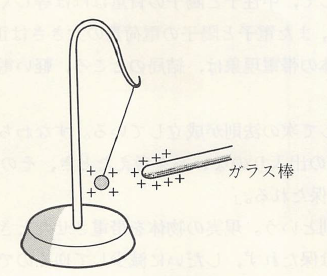
ところが、ガラス棒と樹脂棒に帯電している電荷が同じものかというとそうではない。実際、ガラス棒に触れたコルク球に帯電した樹脂棒を近づけると、ガラス棒とは反対にコルク球が引き付けられることが確認できる。さらに、そのコルク球に樹脂棒が触れると、それら2つの電荷は失われる。このことからも、2つの棒に帯電した電荷は異なることが分かるため、ガラス棒に帯びた電荷を正、樹脂棒の帯びた電荷を負と定義してみると、上記の現象を説明できる（同符号の電荷間には斥力、異符号の電荷の間には斥力、また正負の電荷が代数的な数のように加え合わさった和が0となると電荷が失われたように見えると考える）。このとき正負の電荷間で働く力がどのくらいになるかについては、1785年にColmonbが行った実験により
2個の点電荷間の力は、両者を結ぶ直線上に働き、その大きさはそれぞれの電荷の量に比例し、またそれらの間の距離の2乗に反比例する
ことが確認されている。この法則をクーロンの法則と呼び、このときの力をクーロン力という。さて、二つの点電荷の電荷量をそれぞれ $q$ および $Q$ とし、それらの間の距離を $r$ とすると、その間に働く力の大きさ $F$ は
$$ F=k\frac{qQ}{r^2} $$
と表わされる。ここで $k$ は正の比例定数であり、$qQ>0$ なら $F>0$ で斥力を示し、$qQ<0$ なら $F<0$ で引力を示す。比例定数 $k$ を決めるには、電荷量、距離および力の単位を決めておく必要がある。現在ではSI単位系の下で単位が決められており、1Cの電荷を持つ2個の点電荷を真空中で1mの距離を置いて静止させたとき、これらの間に働く力が $8.9876\times 10^9\ \mathrm{N}$ であるから
$$ k=8.9876\times 10^9\ \mathrm{N・m^2/C^2} $$
となる。また、この力は万有引力の法則での重力
$$ F_G=G\frac{mM}{r^2}、 G=6.7\times 10^{-11}\ \mathrm{N\cdot m^2/kg^2} $$
と同じ形をしており、こちらも点電荷の間で働いていると考えられる（ $m$ と $M$ は各点電荷の質量で、$r$ はその間の距離としている）。そのため、どれぐらいの大きさか比較して見てみると、簡単に1Cの電荷をもつ1kgの点電荷の場合だと比をとることで
$$ \frac{F}{F_G}= \frac{k}{G}\approx 1.3\times 10^{20} $$ という、とてつもない巨大な値になる。このように、クーロン力は重力と比較して圧倒的に大きく、電荷がある場合だとほぼ重力の効果は無視できる。それにも関わらず地球上の物体あるいは天体間に重力が作用する理由は、正と負の電荷が互いに打ち消しあうことで見かけ上電荷がなくなり、クーロン力が生じる状態にならなくなったことによるものと考えられる。
一般的にクーロン力というのは、その方向をも指定して決まるベクトル量である。そのため、以下の図において電荷 $Q$ が電荷 $q$ に作用する力をベクトルを用いて表すと次のようになる。
$$ \bm{F}(\bm{r}_q)= k\frac{qQ}{|\bm{r}_q-\bm{r}_Q|^2} \frac{(\bm{r}_q-\bm{r}_Q)}{|\bm{r}_q-\bm{r}_Q|} $$
ここで、ベクトル $\bm{r}_q=(x_q,y_q,z_q)$ と $\bm{r}_Q=(x_Q,y_Q,z_Q)$ は、それぞれ図の原点Oから測った電荷 $q$ と $Q$ の位置ベクトルであり、$\bm{F}(\bm{r}_q)$ は電荷 $q$ に作用する力を表す。
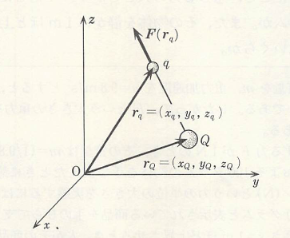
電磁気学での力の考え方
電磁気学での力の考え方
前回クーロンの法則が万有引力の法則と同じ形で書けることを述べたが、そもそも万有引力というのは物体間にその力を伝える物体（糸など）があるわけでなく、空間を通して直接物体間に作用する力であると考えられる。このような力を遠隔作用の力という。そのため、クーロン力も同じ遠隔作用の力であるものと考えることができる。しかし、この考え方だと帯電した物体（帯電体）間にある空気などのものに影響を与えず別の帯電体に力を及ぼすというのは如何にも不自然であるため、別の考えがFaradayによってなされた。彼は以下のような例を考えて、その力について考察を行った。

今、水を容器に入れて、その上に水をはじくようロウを塗ったコルク球を2個浮かべてみる。すると、コルク球の周りの水面はへこんでゆがんだ状態になる。この2つのコルク球を数mm程度まで近づけて手を離すと、コルク球は互いに引き寄せられ、そして接触する。これは、水がその表面張力によって表面積をできるだけ小さくしようとするためである。今、仮に人間にこの水が見えないものとすると、我々には2個のコルク球間に引力が作用しているように感じられるだろう。このようにコルク球がその周りの水面をゆがめ、その歪みが次々と水面上を伝わって、ほかのコルク球に力を与えるとする考え方を近接作用という（相対性理論になると、万有引力も同じように考えることができるが難解なためここでは述べないことにする）。
以上の考え方により、帯電体があると周囲の空間はそれ自身の性質によりゆがむと電磁気学では考える（先ほどで言う水がコルク球でへこんだ状態になったことに相当する）。この歪みを電場（電気工学系では電界）という。そして、電場の中に別の帯電体を置くことでクーロン力が生じるわけだが、ここで
$$ \bm{F}(\bm{r}_q)=q\bm{E}_Q (\bm{r}=\bm{r}_q) $$ $$ \bm{E}Q(\bm{r})= \frac{kQ}{|\bm{r}-\bm{r}{Q}|^2} \frac{(\bm{r}-\bm{r}Q)}{|\bm{r}-\bm{r}{Q}|} $$
と表わすと次のように考えることができる。点電荷 $q$ のあるなしに関わらず、位置 $\bm{r}_Q$ にある点電荷 $Q$ は空間のあらゆる場所 $\bm{r}$ に電場 $\bm{E}$ を作り、$\bm{r}=\bm{r}_q$ の位置にもう一つの点電荷 $q$ があると、それに $\bm{F}$ の力が作用する。
電場がどのように発生するかを見るのに電気力線がよく用いられる。これは以下の図に示すように。その接線方向が電場の方向と一致するように線を描いたもので、一つの電荷の場合だと始点か終点のどちらかが無限遠に伸びた形になる。

これが2つになると、二つの電荷の電場を足したものになり、電荷の符号が同じか異なるかで電気力線の形が違ってくる（同じ電荷量であれば同じ本数だけ放出、吸収する、符号が反転すれば向きが逆になる）。
$$ \bm{E}=\bm{E}_q(\bm{r})+\bm{E}_Q(\bm{r})= k \left[ q\frac{(\bm{r}-\bm{r}q)} {|\bm{r}-\bm{r}{q}|^3}+ Q\frac{(\bm{r}-\bm{r}Q)} {|\bm{r}-\bm{r}{Q}|^3} \right] $$

以上のように、電荷が複数個あることで様々な形で電場が発生するわけだが、実際のところ電荷が物体内にあることを考えると物体表面から電場が生じるものと思われる。そこで、一つの電荷（電荷量 $Q$ ）の周囲に物体表面（閉曲面）があることを考えてみると、閉曲面が半径 $r$ の球面の場合は
$$ E(r)4\pi r^2=4\pi kQ $$
だけの電場が放出される。これが、任意の形状になると閉曲面 $S$ の微小面積が
$$ \mathrm{d}S’= r^2\sin\phi\ \mathrm{d}\theta\mathrm{d}\phi $$
となるのだが、実際は電場と平面に垂直な単位ベクトル $\bm{n}$ のなす角度 $\alpha$ により
$$ \mathrm{d}S= \frac{\mathrm{d}S’}{\cos\alpha} $$
だけの面積を貫く。

一方で、電場と $\bm{n}$ の内積が
$$ \bm{E}\cdot\bm{n}=E\cos\alpha $$
であるが、面上の $E$ の合計（積分）を求めるのに $\cos\alpha$ が余計なので
$$ \oint(\bm{E}\cdot\bm{n})\mathrm{d}S= \oint E\ \mathrm{d}S’= kQ\int_{0}^{2\pi}\mathrm{d}\theta \int_{0}^{\pi}\sin\phi\ \mathrm{d}\phi= 4\pi k Q $$
というようにすると、面上の電場の総和を求めることができる。ここで、左辺については一般的に
$$ \oint(\bm{E}\cdot\bm{n})\mathrm{d}S= \oint\bm{E}\cdot\mathrm{d}\bm{S} $$
というように面積分と呼ばれる形で書かれる。任意の閉曲面の結果から、閉曲面の形によらず電場の総量は電荷量に比例していることが予想される。そのため、２個の電荷がある場合にも
$$ \oint\bm{E}\cdot\mathrm{d}\bm{S}= \oint\bm{E}_q\cdot\mathrm{d}\bm{S}+ \oint\bm{E}_Q\cdot\mathrm{d}\bm{S}= 4\pi k (q+Q) $$
というようになる。少しひねくれて、もし閉曲面の外部に電荷がある場合は電場が地点1から地点2に向けて出入りした場合は、
$$ \oint\bm{E}\cdot\mathrm{d}\bm{S}= E_1\cos(\pi-\alpha_1) \mathrm{d}S_1+ E_2\cos(\alpha_2) \mathrm{d}S_2= -E_1\mathrm{d}S’_1+E_2\mathrm{d}S’_2=0 $$
である。したがって、閉曲面から出てくる電場というのは、その閉曲面内にある電荷量 $Q$ に比例することになる。これをGaussの法則と呼ぶ。
$$ \oint\bm{E}\cdot\mathrm{d}\bm{S}= 4\pi k Q $$
この法則に従うことで、物体に電荷がない場合や同じ正負の電荷が存在している場合は打ち消して電場が生じないことが言える。
光学
昼は明るく夜は暗くなるという毎日の繰り返しや夏は暑く冬は寒くなるという四季の移り変わりも、太陽からくる日射量の変化によるものである。太陽の光により植物などが育ち、それを食料として数多くの生き物が生活していることは既にご存じのとおりである。その中でも、人類は長い歴史の中で自分の眼で周囲の状況を捉え身を守ったり食料を手に入れるということをしてきた。同時に、光は無意識のうちに人々にとって片時も欠かせないものであったと言える。実際、昔の人々がその存在を信じて疑わなかった神様や仏様の絵画や彫刻には必ずと言ってよいほど「後光」という光がその後ろに燦然と輝いている。ただ、その光景がそのまま眼に入っているわけでなく、外部からの光が眼の中にある水晶体という透明な物質でできたレンズを通り網膜の表面に像を作ることで物体が見えるようになっている。周囲の状況を正しくとらえるには、光とそれを集めて像を結ばせるレンズ、そしてその像を感知する網膜が欠かせないわけである。これと同じ原理で、Galileiは人工のレンズを巧みに組わせて望遠鏡を作り、肉眼でははっきり見えない遠くの小さな星を観察して、天文学に全く新しい発展をもたらした。一方でHookeもレンズの組み合わせを工夫して顕微鏡を作り、肉眼でははっきり見えない細かな微生物を観察して生物学を大きく進歩させた。一方で、晴れた夜空には星が輝いているが、特徴のある星が見える方向は時刻と方位を知ることのできる指標として、大海原を渡る船乗りや砂漠を横切る飛び人などに大昔から利用されてきた。このように自然の光の働きと輝きから、光は生きるのに必要な活力を与えてくれる生物に優しいエネルギーであると同時に、身の回りの状況を知らせてくれる実直な情報の運び手であることもよく分かる。
以上のように、光に触れていくにつれて光を利用するための学問として光学が発展してきた。これを利用して、まず先ほど述べた望遠鏡や顕微鏡と同じ原理でカメラや夜を明るくしようと電気で灯すランプが登場した。19世紀の終わりにはカメラで撮影したフィルムで映像を映し出す映画が作られるようになり、それが普及するとともにランプが発端となって真空管を扱う電子工学が発展したことでテレビも生まれた。このあたりから、光学は「電気」と電気の運び手である「電子」の力を借りるようになった。電気工学、電子工学の分野で通信やコンピュータが発達してきたことを受けて、光学と電子工学の結びつきは決定的になってきました。このことは、光ファイバを使った光通信、CSなどの光ディスクメモリー、液晶などの薄型ディスプレイ、あるいはパソコンとも密接な関係にあるデジタルカメラや電子ゲームなどが急速に発展しつつあることから明らかである。このように、人々の日々の暮らしの中に徐々にではあるが光の能力を活かした製品は着実に入り込んできています。こうして、人工の光は社会の様々な所で使われるようになり、人々の生活環境が昔よりも格段に安全で快適なものになってきたと言えます。その光を取り扱うために、光学を学ぶ必要があるため見ていこう。
幾何光学
幾何光学
光に関する研究は既に遠くギリシャ時代においても行われ、例えば紀元前300年頃、Euclidは光学に関する本を著している。この本の中で、彼は光の直進性や反射の法則を自身の幾何学と結び付けて論じており、光の本性は問題とせずに光の進路を純粋に幾何学的に扱う分野（幾何光学）を開拓した。それから幾何光学は中世の間にも大いに進歩し、球面鏡や放物面鏡、レンズなどを生み出し、老人用の眼鏡の発明なども行われた。これらは近代物理学の誕生期へと引き継がれていき、Galileoによる屈折望遠鏡の製作（1609年）、Snellによる屈折の法則の発見（1621年）、Fermatによる光の進路を決める原理の確立（1657年）、Newtonによる反射望遠鏡の発明（1668年）などへとつながっていった。
光の本性が本格的に問題とされるようになったのは、17世紀に入ってからであり、よく知られているように、光を微小な粒子の流れとみる粒子説と媒質中を伝搬する波動とみる波動説の間で、長い期間にわたって激しい論争が行われた。これは、例えばSnellの法則に関しても、このどちらの考え方でも尤もらしい説明をすることが可能だからである。この法則は、二つの媒質の境界面に光が入射し、一部が屈折して別の媒質に侵入する場合、以下の関係式が $\theta_1$ によらず媒質が固定されていれば決まった値をとるというものである。

$$ \frac{\sin\theta_1}{\sin\theta_2}=n_{12} $$
これに対する粒子説の説明は次のように行われる。すなわち、二つの媒質ではポテンシャルエネルギーの差があり、このために粒子は境界面の所で面に垂直な方向に力を受ける。しかしこの場合、面に平行な方向の速度成分は変わらないから、それぞれの媒質中での光の速さを $v_1,v_2$ として、
$$ v_1\sin\theta_1=v_2\sin\theta_2 $$
が成立する。したがって、$\sin\theta_1,\sin\theta_2$ の比は $\theta_1$ に依存せず $$ \frac{\sin\theta_1}{\sin\theta_2}=\frac{v_2}{v_1} $$ というようにSnellの法則での $n_{12}$（相対屈折率）は速度の比 $v_2/v_1$ に等しいということになる。
一方で、Huygensの原理を用いた波動説による説明は以下のとおりである。すなわち、図のように平面波が上方からやってきたとして、平面波が点Aから点Bに届くまでの時間 $\Delta t$ を考えてみると、その間にできる波面というのは $\Sigma$ のようになり、関係としては $$ \overline{AB}\sin\theta_1=v_1\Delta t、 \overline{AB}\sin\theta_2=v_2\Delta t $$ が成り立つ。従って、それぞれの比をとることで $$ \frac{\sin\theta_1}{\sin\theta_2}=\frac{v_1}{v_2} $$ となり、先ほどとは逆の関係（$n_{12}=v_1/v_2$）になることが分かる。

どちらが正しいかどうかは空気中と水中での光の速さを比較すれば、粒子説と波動説のどちらが正しいか決めることができる筈である。実際、光が空気から水の中へと屈折する場合 $n_{12}>1$ であるが、1850年、Foucaultは水中での光速が空気中でのそれよりも遅いこと（$v_2<v_1$）を確かめ、これにより波動説が勝利をおさめる結果となった。
上記のことをふまえて反射、屈折の法則をまとめると次のようになる。すなわち、入射光線と境界面との交点Oに立てた境界面に対する法線（接平面に垂直な直線）OQと、入射光線AOとで作られる平面を光の入射面と呼ぶが、反射光線も屈折光線もともにこの平面内にある。

そこで、この面内で図のように角度を決めると、入射角 $\theta_1$ と反射角 $\theta_r$ とは等しく、入射角 $\theta_1$ と屈折角 $\theta_2$ の間には入射側と屈折側それぞれの屈折率を $n_1、n_2$ として、次の関係（Snellの法則）が成り立つ。
$$ n_1\sin\theta_1=n_2\sin\theta_2 $$
ここで屈折率 $n$ は媒質中の光速 $v$ 、真空中の光速 $c$ と $n=c/v$ という関係があるため、光速に置き換えてみると先ほどの波動説の説明のところに出てきた式と同じ形になっていることが分かる。
$$ \frac{\sin\theta_1}{\sin\theta_2}=\frac{v_1}{v_2} $$
また、屈折率は様々な色の光に対して異なった値を持つが、その違いというのは僅かであるから通常は光に対する媒質の屈折率は一定としても差支えがない。また、真空の屈折率が1であるが、空気の屈折率が1.00029であるから1として見なしてもよい。
ここまでは $n_2>n_1$ に限った話であったが、一方で $n_2<n_1$ の場合だと入射角よりも屈折角の方が大きくなるから、入射角が大きくなると屈折角が90°をこえる場合も考えられる。しかし、そのように屈折することはなく、実際は全て反射（全反射）されることになる。また、全反射が始める入射角のことを臨界角（critical angle）と呼ばれる。この角度は屈折角が90°となったときの以下の式から求められる。 $$ \theta_{c}=\arcsin\left(\frac{n_2}{n_1}\right)、 \frac{n_2}{n_1}<1 $$ 例えば、媒質1を水、媒質2を空気とすると $n_1\approx 4/3,n_2\approx 1$ であるから、臨界角は約50°になる。 $$ \theta_{c}=\arcsin\left(\frac{3}{4}\right)= 48.59\cdots\approx 50° $$ したがって、例えば以下の図のように水中に沈めた10円玉Pに光が反射し、その光が水中から空気中に出る際に屈折して目に届いたとする（このとき10円玉Pは点線で描いたように浮いて見えた状態になっている）。仮に $-50°<r<50°$ の範囲であれば屈折して10円玉が見えるが、それを超えると全反射をしてしまうため見えなくなることが分かる。

Fermatの原理
Fermatの原理
屈折率が場所によって僅かずつ異なるような物質中を光がとおるときには、光線は曲がるがその場合の光の進路を決める法則はFermatの原理として知られている。これは、光の進む道はその近傍の経路と比べて光学距離が極値（正しくは停留値）になるようなものであるという表現される。光学距離とは、屈折率を経路に沿って積分したもので、$\bm{r}$を空間座標、$ds$を経路に沿った不精な線要素とすると、A点からB点までの経路では、 $$ L(A,B)=\int_A^B n(\bm{r})ds $$ と書くことができる、これは、AB間の経路の距離が光学的には真空中を伝わる平面波に換算して $L(A,B)$ であること、つまりB点の位相のA点のそれに比べた遅れが、真空中を平面波が距離 $L(A,B)$ だけ行ったときの億例に等しいことを意味している。この原理は、実際の経路についてはそれからの任意の無限小のずれに対して光学距離の変化分が零、つまり $$ \delta L(A,B)=0 $$ が成り立つと表現することもできる。さらに、光の速さは媒質の屈折率に反比例するから、もっと簡単には実際に光がとおる道はそれに少し変えた経路と比較して、同じ2点間を行くのに要する時間が極値（ないしは停留値）になるようなものである。といってもよい。
Fermatの原理は、幾何光学の公理ともいうべきものであり、前節で述べた光線の可逆性や均一な媒質中での光の直進性はもちろん、光の反射や屈折の法則もこの原理の中に含まれる。すなわち、反射光線と屈折光線が入射面内にあることは、この原理から自明であるから、二つの媒質（屈折率$n_1,n_2$）の境界面が$xz$面（$x$軸を含む紙面に垂直な面）であり、光の入射面が$xy$面であるとして、以下の図のように座標を決める。
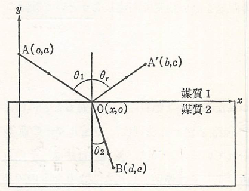
このとき反射、屈折のそれぞれの場合の経路AOA'およびAOBの光学距離は $$ L(A,A')= n_1\left( \sqrt{x^2+a^2}+\sqrt{(b-x)^2+c^2} \right) $$ $$ L(A,B)= n_1\left( \sqrt{x^2+a^2}+\sqrt{(d-x)^2+e^2} \right) $$ となる。そこで、$x$を変えた時にこれらが極値となることから、それぞれ $$ \delta L(A,A')= n_1\left( \frac{x}{\sqrt{x^2+a^2}}- \frac{b-x}{\sqrt{(b-x)^2+c^2}} \right)\delta x = 0 $$ $$ \delta L(A,B)= \left( \frac{n_1x}{\sqrt{x^2+a^2}}- \frac{n_2(d-x)}{\sqrt{(d-x)^2+e^2}} \right)\delta x = 0 $$ となり、これらについて以下の関係が成り立つ。 $$ \sin\theta_1=\frac{x}{\sqrt{x^2+a^2}}、 \sin\theta_r=\frac{b-x}{\sqrt{(b-x)^2+c^2}}、 \sin\theta_2=\frac{(d-x)}{\sqrt{(d-x)^2+e^2}} $$ そのため、以下のように反射・屈折の法則が導かれる。 $$ \sin\theta_1=\sin\theta_r（\theta_1=\theta_r）、 n_1\sin\theta_1=n_2\sin\theta_2 $$レンズの仕組み
レンズの仕組み
ところで、そもそも人の目というのは物体から反射された光をどのようにして認識しているであろうか。構造としては以下の左図のようになっており、角膜・水晶体のところで屈折をして、網膜上に光が集まることで、網膜上にはっきり画像が映し出される。その映し出された画像情報が脳に伝達されることで、物体がはっきり見えるという流れになる。この構造というのはレンズで再現することが可能であり、実際にカメラなどでは以下の右図のようになっている。
|
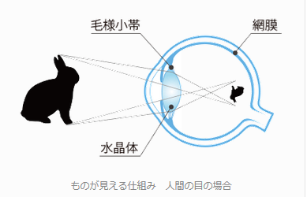 |
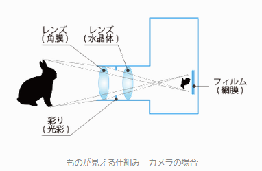 |
このことからも分かるように、レンズの仕組みを理解することが重要なため、順を追ってそのことについて述べていくことにする。まず曲面のガラスに光が当たるとどうなるかを考察してみる。曲面に光線があたると、光は以下の赤線のような軌道で反射をすると考えられる。
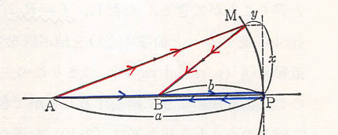
今の場合、点Aから点Mを介して点Bへ通る状況を考えているが、同じように点Pを介しても点Bに到達することができる（どちらも、Fermatの原理で言う $\delta L(A,B)=0$ を満たす）。すると、これら2つの光学距離は同じものとなるため、以下の式が成り立つ。 $$ \sqrt{(a-y)^2+x^2}+\sqrt{(b-y)^2+x^2}=a+b $$ しかし、この式は大変複雑であるため、簡略化するため$a$や$b$に比べて$x$や$y$の絶対値が十分に小さい範囲の光線のみについて考えてみる。すると、左辺の各項目が $$ \sqrt{(a-y)^2+x^2}= a\sqrt{1+\frac{x^2+y^2-2ay}{a^2}}\approx a+\frac{x^2+y^2-2ay}{2a} $$ $$ \sqrt{(b-y)^2+x^2}= b\sqrt{1+\frac{x^2+y^2-2by}{b^2}}\approx b+\frac{x^2+y^2-2ay}{2b} $$ となることから、以下の式に置き換えることができる。 $$ x^2+y^2-\frac{4ab}{a+b}y=0 $$ そして、さらにこの式を変形して $$ x^2+\left(y-R\right)^2=R^2、 \left(R=\frac{2ab}{a+b}\right) $$ とすることで円の方程式になっていることがわかるため、曲面鏡が半径 $R$ の球の一辺とみなせるものと考えられる。このときの $R$ というのは曲率半径と呼ばれ、この式をさらに変形することで $$ \frac{1}{a}+\frac{1}{b}= \frac{1}{f}、 \left( f=\frac{R}{2} \right) $$ と書くことができる。これは、鏡の中心（極）Pと曲率半径Oを結ぶ線（主軸）に近い光線（近軸光線）に限った話であることに注意されたし。すなわち、主軸上にある点Aから出た光は球面により上記の式を満たす地点Bに反射して届くと結論づけられる。
解析力学
質点や質点系や剛体が与えられたとき、それらの運動を論じる流れとしては大まかに二つの段階がある。第一の段階は、系を記述する変数をうまくとり、それを用いて運動方程式をたてる。第二の段階では、その運動方程式を上手に解くことである。第１の段階では、一般的に直交座標系 $(x,y,z)$ が用いられており、その中での粒子の位置を位置ベクトルで表した上でNewtonの運動方程式をたてる。そして、その運動方程式を解いたとき粒子の軌道が仮にある平面の中に存在することが予測できたならば、あらかじめその平面に沿って $(x,y)$ 平面と一致するようにとっておけば、$z$ 成分の方程式がいらなくなかったという結論に至る。さらに方程式を解く段階では、よく見るように直交座標で与えられた方程式を、球面座標 $(r,\theta,\phi)$ で表しておいたほうが、物理的・数学的に簡単で便利であったりする。
このように、物理学の問題を扱う場合、座標変換というのは大変便利な、かつ重要な概念である。しかし、運動方程式を $(x,y,z)$ 座標で書いておいて、それを例えば $(r,\theta,\phi)$ 座標のものに直すのは実際やってみれば分かるように、なかなか面倒なものである。ところが、運動方程式を直接扱う代わりに別の形式に書いておくと、変数変換がより簡単にできる。その1つの方法がいわゆるLagrange形式と呼ばれるものである。Lagrange形式は、Newtonの形式に比べてかなり抽象的であり、少々理解しにくいかもしれないが、これを理解すると変数変換が実に楽になることから、我慢してまずこれを勉強していただきたい。次に、もう一つHamilton形式というものがある。これも変数変換に大変便利な形式だが、Lagrange形式に比べさらに抽象的になる。しかし、Hamilton形式では、Lagrange形式では許されなかったようなもっと一般の変数変換が許されるから、力学理論としての強力さがさらに倍加される。次の章では、これらのことを見ていくことにする。
Newton形式
Newton形式
物体の運動は運動方程式を用いることで記述することができるわけだが、中には複数の手順を踏んで解かなければいけない場合が存在する。その代表例として、よく振り子の運動があげれられるため、これについて述べていくことにする。
振り子の運動というのは、天井から質点を糸で吊るして揺らしたときの運動を指しており、質点の位置を $\bm{r}$、質量を $\bm{r},m$ 、外力として糸の張力 $\bm{T}$、重力 $\bm{G}$ が働いているとすると運動方程式は
$$ m\frac{\mathrm{d}^2\bm{r}}{\mathrm{d}t}= \bm{T}+\bm{G} $$
となる。ここで、各成分に分けて書くと
$$ m\frac{\mathrm{d}^2y}{\mathrm{d}t}= -T\sin\theta、 m\frac{\mathrm{d}^2x}{\mathrm{d}t}= mg-T\cos\theta $$
であり、以下の図のように極座標に置き換えて考えると
$$ m\left[ \frac{\mathrm{d}^2r} {\mathrm{d}t^2}- r \left( \frac{\mathrm{d}\theta} {\mathrm{d}t} \right)^2 \right]= F_x\cos\theta+F_y\sin\theta= mg\cos\theta-T $$ $$ m\left( 2\frac{\mathrm{d}r} {\mathrm{d}t} \frac{\mathrm{d}\theta} {\mathrm{d}t}+ r \frac{\mathrm{d}^2\theta} {\mathrm{d}t^2} \right)= F_y\cos\theta-F_x\sin\theta= -mg\sin\theta $$
というようになる。振り子の場合、糸は伸び縮みせずに一定の長さ $l$ を保つため動径方向の変化は0であり
$$
T=ml
\left(
\frac{\mathrm{d}\theta}{\mathrm{d}t}
\right)^2+mg\cos\theta、
\frac{\mathrm{d}^2\theta}{\mathrm{d}t^2}=
-\frac{g}{l}\sin\theta
$$
という関係式が導かれる。
Lagrange形式
Lagrange形式
従来の運動方程式 以前まで、物体の運動は運動方程式を用いて見てきたわけだが、拘束力が働く場合は、その方向とは垂直に運動を行うため結果的に方程式から姿を消すことが多い。そのため、予め拘束力を考える必要がない方程式を考えると便利なように思う。そこで、拘束力 $\bm{R}$ とは垂直の方向に $\delta\bm{r}$ だけの変位（同じ時間で二つの位置の差を測る）を考えると、以下のように仕事が0になることが分かる。 $$ \bm{R}\cdot\delta\bm{r}=0 $$ これは仮想仕事の原理というように呼ぶ。次に、運動方程式では $$ m\frac{\mathrm{d}\bm{v}}{\mathrm{d}t}= \bm{R}+\bm{F} $$ というように拘束力と外力とで力を分けて記載できるため、 $$ \left(m\frac{\mathrm{d}\bm{v}}{\mathrm{d}t}- \bm{F}\right) \cdot\delta\bm{r}=0 $$ となる。次に、このベクトルが $f$ 個の変数で書けるものとして $\bm{r}(q_1,q_2,\cdots,q_f)$ とすると
$$ \delta \bm{r}= \sum_{i=1}^{f} \left(\frac{\partial \bm{r}}{\partial q_i}\right) \delta q_i $$
となるので、以下のようになる。 $$ \sum_{i=1}^{f} \left[ m\frac{\mathrm{d}\bm{v}}{\mathrm{d}t} \cdot \left(\frac{\partial \bm{r}}{\partial q_i}\right)- \bm{F}\cdot \left(\frac{\partial \bm{r}}{\partial q_i}\right) \right]\delta q_i=0 $$
ここで、第1辺を整理して
$$ m\frac{\mathrm{d}\bm{v}}{\mathrm{d}t} \cdot \left(\frac{\partial \bm{r}}{\partial q_i}\right)= \frac{\mathrm{d}}{\mathrm{d}t} \left[ m\bm{v}\cdot \left(\frac{\partial \bm{r}}{\partial q_i}\right) \right]- m\bm{v}\cdot \frac{\mathrm{d}}{\mathrm{d}t} \left(\frac{\partial \bm{r}}{\partial q_i}\right) $$
とすると、各項目について
$$ \frac{\partial \bm{v}}{\partial \dot{q}_i}= \frac{\partial}{\partial \dot{q}i} \left[ \sum{j=1}^{f} \left(\frac{\partial \bm{r}}{\partial q_i}\right) \dot{q}i+ \frac{\partial \bm{r}}{\partial t} \right]= \frac{\partial \bm{r}}{\partial q_i} $$ $$ \frac{\mathrm{d}}{\mathrm{d}t} \left(\frac{\partial \bm{r}}{\partial q_i}\right)= \sum{j=1}^{f} \frac{\partial}{\partial q_j} \left(\frac{\partial \bm{r}}{\partial q_i}\right) \dot{q}j+ \frac{\partial}{\partial t} \left(\frac{\partial \bm{r}}{\partial q_i}\right)= \frac{\partial}{\partial q_i} \left[ \sum{j=1}^{f} \left(\frac{\partial \bm{r}}{\partial q_j}\right) \dot{q}j+ \frac{\partial \bm{r}}{\partial t} \right]= \frac{\partial \bm{v}}{\partial q_i} $$ となるため、これらを代入すると以下の通りになる。 $$ \sum{i=1}^{f} \left[ \frac{\mathrm{d}}{\mathrm{d}t} \frac{\partial}{\partial \dot{q}_i} \left( \frac{1}{2}m\bm{v}^2 \right) - \frac{\partial}{\partial q_i} \left( \frac{1}{2}m\bm{v}^2 \right) - \bm{F}\cdot \left(\frac{\partial \bm{r}}{\partial q_i}\right) \right]\delta q_i=0 $$ 任意の仮想変位に対して成立するためには、中の項目が0になる必要があるため
$$ \frac{\mathrm{d}}{\mathrm{d}t} \left( \frac{\partial K}{\partial \dot{q}_i} \right) - \frac{\partial K}{\partial q_i} =Q_i (i=1,\cdots,f) $$ $$ K=\frac{1}{2}m\bm{v}^2、 Q_i=\bm{F}\cdot \left(\frac{\partial \bm{r}}{\partial q_i}\right) $$ が成り立つ。この運動方程式は一般的な座標に関して成立するものであり、Euler=lagrange方程式と呼ぶ。ただ、通常は力を保存力として $$ \bm{F}=-\frac{\partial U}{\partial\bm{r}} $$ として、一般化力を以下のようにする。 $$ Q_i=-\frac{\partial U}{\partial\bm{r}}\cdot \left(\frac{\partial \bm{r}}{\partial q_i}\right)= -\frac{\partial U}{\partial q_i} $$ すると、以下のように書くこともできる。 $$ \frac{\mathrm{d}}{\mathrm{d}t} \left(\frac{\partial L}{\partial \dot{q}_i}\right)- \frac{\partial L}{\partial q_i}=0、 \frac{\mathrm{d}}{\mathrm{d}t} \left(\frac{\partial U}{\partial \dot{q}_i}\right)=0 $$ $$ L=K-U（ラグランジアン） $$
Hamilton形式
Hamilton形式
Lagrange形式より対称性を高めたもの
一般化座標への変換を含む、ある種の $q_i,Q_j$ についての変換に対して運動方程式を不変とする正準方程式がある。 $$ q_i=q_i(Q_j,\dot{Q}_j)、 \dot{q}_i=\dot{q}_i(Q_j,\dot{Q}_j) $$ ただし、$(q_i,\dot{q}_i)$ に対しての変換に関する理論はない。しかし、Lagrange形式でも出た $$ p_i=\frac{\partial L}{\partial \dot{q}_i} \rightarrow \dot{q}_i=\frac{\partial G}{\partial \dot{p}_i} $$ ということを行うと、Lagrange形式のものより対称性が高い正準方程式が導かれる（Legendre変換）。 $$ G(q_i,p_i)=\sum_j \dot{q}_j p_j-L $$ この $G$ は一般的に $H$ と表わしHamiltonianと呼ばれている。
方程式の導出方法
- ハミルトニアンの定義とオイラーラグランジュ方程式から
統計力学
これから学ぼうとする統計力学では、物質が非常に多くの小さい粒子（原子・分子）から成り立つものと仮定して、これらの分子が古典力学に従い運動することでどのような性質（運動ではない）を示すかを研究するものとなっている。ここで言う原子（分子）は、実際のところ複雑な内部構造や相互作用を有しているが、そこまで考慮すると理論の構築が困難となるため次のような理想化を行う。
分子は半径 $r_1$ の滑らかな表面を持った剛体弾性球であると考え、二つの分子は距離が半径の和 $r_{12}=r_1+r_2$ に接近したときにのみ斥力が働くものとする。二分子間のポテンシャルを相互距離 $r$ の関数とすれば、以下のグラフのようになる。しかしこの剛体平滑分子の模型はあまりにも素朴すぎるかもしれないので、次のような模型を考えることもある。分子を質点とみなし、中心力を及ぼしあうことを考える。二つの分子間の距離 $r$ のみの関数であるポテンシャルエネルギーを $U(r)$ とすれば以下のグラフのようになる。
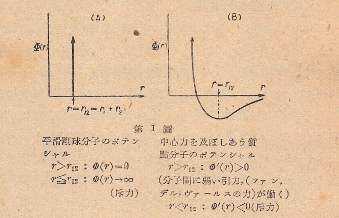
次に、これらの分子は温度の高低によって、運動が速やかになったり緩やかになったりする。そして互いに衝突しあい作用を及ぼしあう（運動量およびエネルギーを交換し合っている）。このとき、これらの気体分子の全体としての平均の並進エネルギーを除いた分子の運動エネルギーが気体の熱エネルギーであるものとする。なお、気体分子が回転、振動などの内部自由度をもつならば、その運動エネルギー、ポテンシャルエネルギーもまた熱エネルギーに含まれるものとする。以上の二つの仮定をもとに、通常の力学のように与えられた初期条件の下で運動方程式を積分すればよいのであるが、今考えている体系では非常に多くの分子から成り立っており、個々の分子に対して一々初期条件を知ることも、運動方程式を解くことも不可能である。それゆえに我々の問題は、適当な微小時間において平均化された、ある容積の中に存在する分子の平均数、平均エネルギー、あるいはこれらの量の時間的変化というような平均的な量のみ考えることにする。これは単に数学的な面ばかりでなく、物理的にも我々の測定しうる量は、このような平均的な量のみであることからもうなずける。このような問題を解くためには、後で分かるように統計的な考察を必要とする。
おおよそ、上のような考え方で物質、気体の物理的性質を説明しようとする原子論の立場は、古くはギリシャ時代にまでさかのぼるのであるが、定量的な理論の形を取り始めたのは、もちろんNewton力学のできた後である。特に19世紀半ば頃MaxwellやBoltzmannによって一応完結された。その基礎に立って詳しい計算を行ったのは、EnskogおよびChapmanである。これらの理論の基底となっているのは、もちろん古典力学であるが、原子級の問題では量子力学を使わなければいけない。それで以下に述べる理論もその意味で改良しなければならいないのであるが、改良の結果は大したことでないようであるから説明を省く。この量子力学を取り入れ方は統計力学の場合と同じように二重である。一つは統計法の変化にあり、もう一つは衝突の確率に関することである。後者に関する限りは、古典理論に取り入れることはやさしい。理論の大部分が衝突の確率の詳しい知識には関係なく組み立てられるからである。気体運動論の方法を金属の中の自由電子の気体に応用しようとする場合には、上の二つの量子論的効果を十分に考慮しなければならない。
気体分子運動論
気体分子運動論
気体が分子で構成されているものとみなした場合、容器内ではまず壁への衝突による力（圧力）が働くことが考えられる。そのため容器の壁に及ぼす圧力を考えると、圧力 $P$ は壁の単位面積が受ける力（撃力）の垂直成分の時間平均として定義される。そのため力の時間平均は分子の受ける力積の単位時間内総量に等しく、更にこれは運動量の変化の単位時間内総量に等しい。速さ $v$ の分子が壁に衝突して、弾性的に反発されるとすれば分子の運動量変化は壁に垂直に $2mv_{\perp}$ となる。そのため、単位時間当たりの力は以下のようになる。 $$ \bar{F}=\frac{2mv_{\perp}}{\Delta t}、 (\bm{v}=\bm{v}{\perp}+\bm{v}{//}) $$ ただ、実際は一つの分子による力のみがかかるわけではなく、同じ速度の分子の数（ $N(v_{\perp})$ ）だけ力が働く。この個数というのは時間 $\Delta t$ の間に範囲 $\Delta S$ に力が生じるものとして、数密度 $n(v_{\perp})$ により $$ N(v_{\perp})= n(v_{\perp}) \left( \frac{1}{2}v_{\perp}\Delta t \Delta S \right) $$ となるため、全体の力は以下の通りとなる。 $$ F(v_{\perp})= \overline{F}N(v_{\perp})= mn(v_{\perp})v_{\perp}^2 \Delta S $$ 最終的な圧力は、全ての速度に対する力の合計を面積で割ったものであるため次のように書ける。 $$ P= \frac{1}{\Delta S} \sum_{v_{\perp}>0}F(v_{\perp})= m\sum_{v_{\perp}>0} n(v_{\perp})v_{\perp}^2 $$ ここで、単位体積内の分子数を $n$ としたとき $$ P=mn\braket{v_{\perp}^2}、 \braket{v_{\perp}^2}= \sum_{v_{\perp}>0} v_{\perp}^2 f(v_{\perp})、 \left( f(v_{\perp})= \frac{n(v_{\perp})}{n} \right) $$ となる。ここで $\braket{v_{\perp}^2}$ がどのくらいの値になるかは式を変形することで求めることができる（数密度：$n\ (=N/V)$、全質量：$M$、体積：$V$ ）。 $$ P=\frac{mN\braket{v_{\perp}^2}}{V}= \frac{M\braket{v_{\perp}^2}}{V} \rightarrow \braket{v_{\perp}^2}=\frac{PV}{M} $$ 例として、標準状態（0℃、1気圧）における1モルの気体を考えると、 $$ P=1.013\times 10^5\ \mathrm{N/m^2}、 V=0.0224\ \mathrm{m^3} $$ であるため、各分子ごとに以下のようになる。
| 分子名 | $M$（kg） | $\braket{v_{\perp}^2}$ |
|---|---|---|
| H$_2$ | 0.0020 | 1134560 |
| He | 0.0040 | 567280 |
| N$_2$ | 0.0280 | 81040 |
| O$_2$ | 0.0320 | 70910 |
そのため、分子の平均速度はおおよそ $100～300\ \mathrm{m/s}$ となるわけだが、実際の気体の拡散速度（1 m/s程度以下）と比べるとずっと遅いため矛盾があるように感じる。これは衝突を繰り返すことで平均自由行路が短くなり、全体的な速度が遅くなるということによるものと考えられる。そのため、衝突に関して考察していくことにする。
気体の分子には大きさがあるために必ず衝突する。分子の直径を $\sigma$ とし、一つの分子 M が M$_1$、M$_2$、M$_3$,・・・と次々に衝突して運動を変えていくありさまを想像したものが図である。
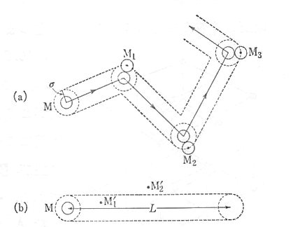
さて、この場合に衝突の数を知るためにはMが半径 $\sigma$ の球、その他が半径0になったとしても、全く同じである。そこで、Mが全行程 $L$ を通過し終える間に何回他の分子と衝突するかということは、切り口の半径が $\sigma$で中心軸の全長 $L$ の円柱の中に何個の分子中心がああるかということに一致する。そこで、いま数密度が $n$ であったとすると、円柱の体積が $\pi\sigma^2 L$であるから、 $$ 衝突回数=n\pi\sigma^2 L $$ となる。ここで、衝突回数が1に相当する距離 $L$ は一つの衝突から次の衝突までの平均距離と考えられる。この距離を平均自由工程という。 $$ l=\frac{1}{n\pi\sigma^2} $$ Maxwellは自身で導いた粘性係数 $\eta$ と平均自由工程の関係式 $$ \eta=\frac{1}{3}\rho l\bar{v}、 \left( \bar{v}= \sqrt{\braket{v_{\perp}^2}} \right) $$ を用いて、常温での平均自由工程の値を以下の値で推定している。 $$ l\simeq 5.7\times 10^{-8}\ \mathrm{m} $$ そのため、1sの間に分子が100m進んだ場合には $$ 衝突回数=\frac{L}{l}= \frac{100}{10^{-8}}=10^{10}回 $$ というように多くの衝突が起きていることがうかがえる。さらに、Loschmidtは1m$^3$の気体を圧縮して液体にしたときの体積 $V_0$ は、気体の分子の数密度（1m$^3$に含まれる分子の個数）を用いて $$ V_0\simeq n\cdot\frac{4}{3}\pi \left( \frac{\sigma}{2} \right)^2 $$ となると考え、空気分子1個の直径は $$ \sigma\simeq 10^{-9}\ \mathrm{m} （10\mathrm{\AA}） $$ となることを推定している。これを踏まえると、数密度も $$ n\simeq 2\times 10^{24}\ \mathrm{m}^{-3} $$ となるわけだが、0℃、1気圧での1m$^3$中での分子数はロシュミット数と呼ばれている。この値を見ても分かるように、かなり多くの分子が存在していることが伺える（この値だと不正確であるため、現在ではより正確な値であるアボガドロ数が用いられる）。
では、これを進めて議論していきたいところであるが、まともに議論すると複数個の質点全ての運動を見ることに相当するので、現実的に解けるような問題でないことは予想できるであろう。そのため、これからは統計集団という考えを用いて複数個の分子を取り扱っていくことにする。
統計集団（小正準集団）
統計集団（小正準集団）
気体の性質を調べる際には、よくピストンなどの容器に気体を閉じ込めておくことが多いが、このときに閉じ込められた気体（分子の集まり）は一種の集団を形成している。この集団を統計集団と呼ぶ。例えば、この気体が外部との熱のやり取り、漏れ出しなどもなく完全に孤立している集団（小正準集団）だとすると、外部との熱 $\mathrm{d}’Q$ と気体が行う仕事 $\mathrm{d}W$ はそれぞれ0となる（容器の体積が変化しないことから仕事も0）。そのため、内部エネルギーの変化量 $\mathrm{d}U$ は熱力学第一法則により
$$ \mathrm{d}U= \mathrm{d}’Q+\mathrm{d}W=0 $$
というように0となる（内部エネルギーが保存される）ことが分かる。次に熱力学第二法則により、エントロピーの微小変化は $\mathrm{d}’Q$ が0であることから
$$ \mathrm{d}S\ge\frac{\mathrm{d}’Q}{T}=0 $$
というように増大する方向に変化する。そのため、内部で熱平衡になるとエントロピーが最大になることが予想される。ここで、エントロピーはBoltzmannによると気体のとりうる状態数 $\mathcal{W}$ により
$$ S=k_{\mathrm{B}}\ln\mathcal{W} $$
というような関係があるとされている（ボルツマンの原理）ことから、エントロピーとともに状態数 $\mathcal{W}$ も最大になるともいえる。また、状態数というのは全体の状態がエネルギーを用いて書けることから計算することができる。具体的には、解析力学においてエネルギー $U$ はハミルトニアン $\mathcal{H}$ で記述される。例として、 $N$ 個の粒子がある場合は $i$ 番目の粒子の一成分の位置と運動量を $q_i,p_i\ (i=1,\cdots,3N)$ とすると
$$ U=\mathcal{H} (q_1,\cdots,q_{3N},p_1, \cdots,p_{3N}) $$
というように $6N$ の変数を持つ関数になる。これら $q.p$ の組（共役変数）が存在する空間のことを位相空間と呼ぶ。例えば、自由粒子の場合だとハミルトニアンが
$$ \mathcal{H}= \sum_{i=1}^{3N} \frac{p_i^2}{2m} $$
と $p_1,\cdots,p_{3N}$ のみ依存した形になる。今回はエネルギーが一定値 $U$ ということなので、この式を変形すると
$$ \sum_{i=1}^{3N}p_i^2=2mU $$
であることから、$3N$ 次元の球の方程式になっていることが分かる。簡単のため、粒子が一つで1次元の場合の状態数を考えると $q_1,p_1$ しかないため
$$ p_1^2=2m U $$
として、これを満たす $q_1,p_1$ の状態数（組み合わせの数）を数えていく。しかし、小数点以下も含めると無限個存在することになってしまうため、 $q_1,p_1$ がそれぞれ $L、P$ の幅しかとらず十分小さい間隔 $\delta q、\delta p$ ごとに一つの状態があるものとすると
$$ \mathcal{W}_1= \frac{L}{\delta q}\times \frac{P}{\delta p}= \frac{LP}{\delta q\delta p} $$
として状態数を記述することができる。同様に2次元になった場合でも
$$ \mathcal{W}_2= \frac{L^2}{\delta q^2}\times \frac{P^2}{\delta p^2}= \frac{L^2P^2}{(\delta q\delta p)^2} $$
となることから、$3N$ 次元になった場合は以下の形になる。
$$ \mathcal{W}_{3N}= \frac{V^{N}P^{3N}}{h^{3N}}、 V=L^3、 h=\delta q\delta p $$
しかし、自由粒子の場合は運動量が $3N$ 次元の球の表面上に制限されていることから
$$ \mathcal{W}_1= \frac{L}{\delta q}\times 2、 \mathcal{W}_2= \frac{L^2}{\delta q^2}\times 2\pi\frac{\sqrt{2mU}}{\delta p} $$
$3N$ 次元になった場合は半径 $r$ の $f$ 次元の球の表面積が
$$ S_{f}(r)= \frac{f\pi^{f/2}}{\Gamma(f/2+1)} r^{f-1} $$
であることから、状態数は以下の通りとなる。
$$ \mathcal{W}= \frac{L^{3N}}{\delta q^{3N}} S_{3N}(\sqrt{2m U}/\delta p)= \frac{V^{N}}{h^{3N}} \frac{2\pi^{3N/2}\delta p} {\Gamma(3N/2)} (2mU)^{3N/2-1} $$
一方で、熱力学第1法則をエントロピーとエネルギーを含む式に展開すると
$$ \mathrm{d}S= \frac{1}{T}\mathrm{d}U+ \frac{P}{T}\mathrm{d}V $$ であるため、以下の関係式が成り立つことが分かる。 $$ \left( \frac{\partial S}{\partial U} \right){V}= \frac{1}{T}、 \left( \frac{\partial S}{\partial V} \right){U}= \frac{P}{T} $$ そのため、まずエントロピーを求めてみると $$ S= Nk_{\mathrm{B}}\ln V+ \frac{1}{2}(3N-1)k_{\mathrm{B}} \ln(2mU)+ k_{\mathrm{B}} \ln\frac{2\pi^{3N/2}\delta p} {h^{3N}\Gamma(3N/2)} $$ であることから、それぞれの式に代入すると $$ \left( \frac{\partial S}{\partial U} \right){V}= \frac{1}{T} \rightarrow U= \frac{1}{2}(3N-1)k{\mathrm{B}}T \simeq \frac{3}{2}Nk_{\mathrm{B}}T $$ $$ \left( \frac{\partial S}{\partial V} \right){U}= \frac{P}{T} \rightarrow PV=Nk{\mathrm{B}}T $$ という二式が求められる。このうち、エネルギーをハミルトニアンと見比べると $$ \sum_{i=1}^{3N} \frac{p_i^2}{2m}= \sum_{i=1}^{3N} \frac{1}{2}mv_{i}^2= \frac{3}{2}Nk_{\mathrm{B}}T \rightarrow \frac{1}{3N} \left( \sum_{i=1}^{3N}\frac{1}{2}mv_{i}^2 \right)= \frac{1}{2}k_{\mathrm{B}}T $$ というように、一成分当たりの平均エネルギーが $1/2k_{\mathrm{B}}T$ になっていることが分かる（エネルギー等分配則）。そこで、これを期待値として $$ \braket{v^2}= \frac{1}{3N} \sum_{i=1}^{3N}v_{i}^2= \frac{k_{\mathrm{B}}T}{m} $$ というようにすると、圧力に関する式を得ることができる。 $$ PV=M\braket{v_{\perp}^2} \rightarrow PV=Nk_\mathrm{B}T $$ さらに、$n$ モルでの理想気体の状態方程式は $$ PV=nRT $$ であることを踏まえると、次のような関係があることが導ける。 $$ R=N_{\mathrm{A}}k_{\mathrm{B}}、 N_{\mathrm{A}}=\frac{N}{n} $$ ここでの $N_{\mathrm{A}}$ は1molでの分子数を表しておりアボガドロ数と呼ばれている。そして、この関係式から定積モル比熱（1molあたりの比熱）を求めてみると次のようになる。 $$ C_V= \left( \frac{\partial U}{\partial T} \right)_{V}=\frac{3}{2}R $$
この値と実験値を比較してみると以下の表の通りになる。
| 分子名 | $C_V$（実験値） | $3/2R$ |
|---|---|---|
| He（気体） | $12.60\ \mathrm{J/K\cdot mol}\ (291℃)\ 12.33\ \mathrm{J/K\cdot mol}\ (93℃)$ | $12.47\ \mathrm{J/K\cdot mol}$ |
| A（気体） | $12.86\ \mathrm{J/K\cdot mol}\ (288℃)\ 12.00\ \mathrm{J/K\cdot mol}\ (93℃)$ | $12.47\ \mathrm{J/K\cdot mol}$ |
単原子分子の場合だと近い値をとっていることが見て取れるが、二原子分子などになると当てはまらなくなる。これは、単原子分子のときと自由度が異なるためで、例えば二原子分子の場合だと $5N$ だけある（チアバトンのように棒の両端に原子があるイメージ）。
| 分子名 | $C_V$（実験値） | $5/2R$ |
|---|---|---|
| N$_2$（気体） | $20.83\ \mathrm{J/K\cdot mol}\ (293℃)\ 19.78\ \mathrm{J/K\cdot mol}\ (92℃)$ | $20.78\ \mathrm{J/K\cdot mol}$ |
| O$_2$（気体） | $20.84\ \mathrm{J/K\cdot mol}\ (293℃)\ 18.43\ \mathrm{J/K\cdot mol}\ (92℃)$ | $20.78\ \mathrm{J/K\cdot mol}$ |
同様に、固体についても調和振動子と考えると自由度が $6N$ だけあり、なおかつDulong-Putiの法則においても $3R$ になることは確かめられている。
| 分子名 | $C_V$（実験値） | $3R$ |
|---|---|---|
| Al（固体） | $24.37\ \mathrm{J/K\cdot mol}\ (15～100℃間の平均)$ | $24.94\ \mathrm{J/K\cdot mol}$ |
| Pb（固体） | $22.70\ \mathrm{J/K\cdot mol}\ (15～100℃間の平均)$ | $24.94\ \mathrm{J/K\cdot mol}$ |
正準集団（カノニカルアンサンブル）
正準集団（カノニカルアンサンブル）
前回までは分子の集団が孤立している状態を考えていたが、実際のところ孤立系というのは現実にはなく最低でも外部と熱のやり取りをしていることが多い。そのため、以下の図ような系を考えてみる。
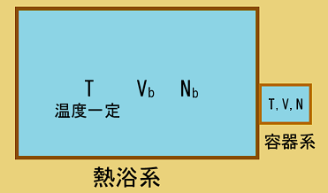
ここでの容器系の状態を見てみると、熱力学第一法則と第二法則により
$$
\mathrm{d}U=
\mathrm{d}’Q+\mathrm{d}’W=
\mathrm{d}’Q、
\frac{\mathrm{d}’Q}{T}
\le \mathrm{d}S
$$
となるため、先ほどと異なりエネルギーが一定とならないため状態数を求めることができない。一方で、熱浴系においても
$$
\mathrm{d}U_{b}=
\mathrm{d}’Q_{b}+\mathrm{d}’W_{b}=
\mathrm{d}’Q_{b}、
\frac{\mathrm{d}’Q_{b}}{T_{b}}
\le \mathrm{d}S_{b}
$$
となるわけだが、全体としては孤立系であることを踏まえると、全体の内部エネルギーが保存しており尚且つ熱浴系と容器系の間でしか熱のやりとりしないことになる。
$$
\mathrm{d}U_{t}=
\mathrm{d}U_{b}+\mathrm{d}U=0、
\mathrm{d}’Q_{b}=-\mathrm{d}’Q
$$
ここで熱力学第二法則の二式の和をとるとエントロピーに関して
$$
\frac{\mathrm{d}’Q}{T}+
\frac{\mathrm{d}’Q_{b}}{T_{b}} =
\left(
\frac{1}{T}-
\frac{1}{T_{b}}
\right)\mathrm{d}’Q \le
\mathrm{d}S + \mathrm{d}S_{b}
$$
となるわけだが、ここで熱と温度の関係を見てみると
$$
\begin{cases}
・T < T_{b}\
(1/T-1/T_{b}>0)\ の場合 &
\rightarrow
\mathrm{d}’Q>0\
・T > T_{b}\
(1/T-1/T_{b}<0)\ の場合 &
\rightarrow
\mathrm{d}’Q<0
\end{cases}
$$
というように互いに同符号になっていることから、以下の関係が成り立つことが分かる。
$$
0\le\left(
\frac{1}{T}-
\frac{1}{T_{b}}
\right)\mathrm{d}’Q
\le\mathrm{d}S + \mathrm{d}S_{b}
$$
ここでBoltzmannの原理よりエントロピーを状態数で置き換えると
$$
\mathrm{d}S + \mathrm{d}S_{b}=
\mathrm{d}
(k_{\mathrm{B}}\ln\mathcal{W})+
\mathrm{d}
(k_{\mathrm{B}}\ln\mathcal{W}{b})=
\mathrm{d}
(k{\mathrm{B}}
\ln\mathcal{W}\mathcal{W}{b})
$$
となり、一つのエントロピー $S{\mathrm{x}}$ としてこれが増大し続けることが分かる。
$$
S_\mathrm{x}=
k_{\mathrm{B}}
\ln\mathcal{W}\mathcal{W}{b}
\rightarrow
0\le\mathrm{d}S\mathrm{x}
$$
そして、そのまま放置するとやがて熱平衡になり熱の移動が緩やかになることから、準静的変化をするようになり近似的に以下の式が成り立つ。
$$
\mathrm{d}S\simeq
\frac{\mathrm{d}’Q}{T}
、
\mathrm{d}S_b\simeq
\frac{\mathrm{d}’Q_b}{T_b}
$$
そのため、内部エネルギーに関する式もエントロピーを含めた形で表現することができる。
$$
\mathrm{d}S=
\frac{1}{T}\mathrm{d}U+
\frac{P}{T}\mathrm{d}V
\rightarrow
\left(
\frac{\partial S}
{\partial U}
\right)V=
\frac{1}{T}、
\left(
\frac{\partial S}
{\partial V}
\right)U=
\frac{P}{T}
$$
$$
\mathrm{d}S_b=
\frac{1}{T_b}\mathrm{d}U_b+
\frac{P_b}{T_b}\mathrm{d}V_b
\rightarrow
\left(
\frac{\partial S_b}
{\partial U_b}
\right){V_b}=
\frac{1}{T_b}、
\left(
\frac{\partial S_b}
{\partial V_b}
\right){U_b}=
\frac{P_b}{T_b}
$$
また、二つのエントロピーの和（$S_{\mathrm{x}}$）も熱平衡（$T\simeq T_b$）の状態になると
$$
\mathrm{d}S+\mathrm{d}S_b=
\left(
\frac{1}{T}-
\frac{1}{T_{b}}
\right)\mathrm{d}’Q\simeq 0
\rightarrow
\mathrm{d}S_{\mathrm{x}}=0
$$
と増大しなくなり、極大値をとると考えられる。
ここで $\mathcal{W}{\mathrm{x}}$ は熱浴系も容器系も孤立系の場合だと、互いに独立していることから全体の状態数になるものと思われる。
$$
\mathcal{W}t=
\mathcal{W}\mathrm{x}=
\mathcal{W}\mathcal{W}{b}
$$
しかし、今の場合だと各々でエネルギーが様々な値をとることから、全体のエネルギーが一定の条件の下で以下のような総和をとった形になると考えられる。
$$
\mathcal{W}t(U_t)=
\sum{Ut=U+U_b}
\mathcal{W}(U)
\mathcal{W}{b}(U_b)=
\sum{U}
\mathcal{W}(U)
\mathcal{W}{b}(U_t-U)
$$
ここで、左辺で右辺を割るとあたかも確率のようになることが分かる。
$$
1=\sum{U}f(U)、
f(U)=
\frac{\mathcal{W}(U)
\mathcal{W}_{b}(Ut-U)}
{\mathcal{W}_t(U_t)}
$$
そして、右辺の $\mathcal{W}_b$ のエントロピーに関して
$$
S_b(U_t-U)\simeq S_b(U_t)-
\left(
\frac{\partial S_b}{\partial U_b}
\right)_V U=
S_b(U_t)-\frac{U}{T_b}
$$
であることから、状態数に関しては以下のように書ける。
$$
\mathcal{W}_b(U_t-U)=
\mathcal{W}b(U_t)
e^{-U/k{\mathrm{B}}T_b}
$$
そして、熱平衡（$T_b\simeq T$）であることを踏まえると確率は次の通りになる。
$$
f(U)=
\frac{\mathcal{W}_b(U_t)}
{\mathcal{W}t(U_t)}
\mathcal{W}(U)
e^{-\beta U}、
\beta=\frac{1}{k{\mathrm{B}}T}
$$
ここで、この総和をとったときに
$$
\frac{\mathcal{W}b(U_t)}
{\mathcal{W}t(U_t)}=
\frac{1}{Z}、
Z=
\sum_U
\mathcal{W}(U)
e^{-\beta U}
$$
とすることで、以下のように置くこともできる。
$$
f(U)=\frac{1}{Z}
\mathcal{W}(U)
e^{-\beta U}
$$
あるいは、状態数をエントロピーの形に置き換えることで
$$
f(U)=\frac{1}{Z}e^{-\beta F}、
F=U-TS
$$
とHelmholtzの自由エネルギー $F$ で表現することもできる。この関数は微小変化をとると
$$
\mathrm{d}F=
\mathrm{d}U
-S\mathrm{d}T-T\mathrm{d}S=
-S\mathrm{d}T-P\mathrm{d}V
$$
であるから、以下の関係式が成り立つ。
$$
S=-
\left(
\frac{\partial F}
{\partial T}
\right){V}、
P=-
\left(
\frac{\partial F}
{\partial V}
\right){T}、
U=F+TS=
-T^2\left[
\frac{\partial}{\partial T}
\left(
\frac{F}{T}
\right)
\right]_V
$$
このことから、自由エネルギーの形で表示できることが分かる。そのため、期待値の方も
$$
\braket{S}=
-\frac{1}{T}
\left(
\frac{\partial}{\partial\beta}
\ln Z
\right)_V-
\frac{\braket{F}}{T}=
\frac{1}{T}
(\braket{U}-\braket{F})
$$
$$
\braket{P}=
-\frac{1}{\beta}
\left(
\frac{\partial}{\partial V}\ln Z
\right)_T、
\braket{U}=
-\left(
\frac{\partial}{\partial\beta}
\ln Z
\right)_V
$$
となり、分配関数から圧力とエネルギーが求まることが分かる。
一方で、分配関数の方についてはエネルギーが連続していることから $$ \int_0^\infty f(U)\mathrm{d}U= \frac{1}{Z} \int_0^\infty \mathcal{W}(U)e^{-\beta U} \mathrm{d}U=1 $$ と積分の形で書けるものと思われるが、これだと分配関数にエネルギーの次元がついてしまう。そのため、連続している場合 $$ \mathcal{W}= \frac{1}{\beta} \left( \frac{\partial \mathcal{W}} {\partial U} \right){V} $$ というような関係が成り立つことを利用して、 $$ \frac{1}{Z} \int_0^\infty \mathcal{D}(U)e^{-\beta U} \mathrm{d}U=1、 \mathcal{D}(U)= \left( \frac{\partial \mathcal{W}} {\partial U} \right){V} $$ というように書ける。ただ、一般的にはハミルトニアンにより $$ Z= \frac{1}{h^{3N}} \int\cdots\int e^{-\beta\mathcal{H}} \mathrm{d}q_1\cdots\mathrm{d}q_{3N} \mathrm{d}p_1\cdots\mathrm{d}p_{3N} $$ というように書くことが多い（このようにすると分配関数を状態数なしで求めることができる）。このようにすると分布関数も $$ \rho=\frac{e^{-\beta\mathcal{H}}}{Z} $$ に置き換えた方がよいわけだが、これからエネルギーの期待値を求めてみると $$ \braket{\mathcal{H}}= -\frac{1}{\beta}\braket{\ln\rho}- \frac{1}{\beta}\ln Z \leftrightarrow \braket{U}= T\braket{S}+\braket{F} $$ であるから、以下のような関係があることが予想される。 $$ \braket{S}= -k_{\mathrm{B}}\braket{\ln\rho}、 \braket{F}= -\frac{1}{\beta}\ln Z $$ 確認のため、仮に小正準集団の場合を考えるとエネルギーが一定値 $U$ をとることから $\rho$ が $$ Z=\mathcal{W}(U)e^{-\beta U}= e^{-\beta F(U)}、 \rho=\frac{e^{-\beta U}}{Z}= \frac{1}{\mathcal{W}(U)} $$ であるため、エントロピーとヘルムホルツの自由エネルギーに関して等式が成り立つことが分かる。 $$ \braket{S}= -k_{\mathrm{B}}\braket{\ln\rho}= k_{\mathrm{B}}\ln\mathcal{W}(U)、 \braket{F}= -\frac{1}{\beta}\ln Z=F(U) $$ 以上のことを踏まえて、例として自由粒子の場合を考えると分配間関数が $$ Z=\frac{V^N}{h^{3N}} \left( \frac{2m\pi}{\beta} \right)^{3N/2} $$ であることから、各期待値は以下の通りになる。 $$ \braket{P}= \frac{Nk_{\mathrm{B}}T}{V}、 \braket{U}= \frac{3}{2}Nk_{\mathrm{B}}T、 \braket{F}= -\frac{N}{\beta} \ln \left[ \frac{V}{h^{3}} \left( \frac{2m\pi}{\beta} \right)^{3/2} \right] $$ $$ \braket{S}= \frac{1}{T} (\braket{U}-\braket{F})= Nk_{\mathrm{B}} \left{ \frac{3}{2}+ \ln \left[ \frac{V}{h^{3}} \left( \frac{2m\pi}{\beta} \right)^{3/2} \right] \right} $$
等温定圧集団
等温定圧集団
ここまでは体積が一定の場合を考えていたが、実際の物体は圧力が外部と同じになることが多い。そのため、ここでは温度と圧力が変化する状況でどうなるかを見てみることにする。熱平衡になった場合 $$ S(U_t-U,V_t-V)= S(U_t,V_t)- \left( \frac{\partial S}{\partial U} \right)U- \left( \frac{\partial S}{\partial V} \right)V= S(U_t,V_t)- \left( \frac{U+PV}{T} \right) $$ であるから、状態数としては以下の通りになる。 $$ \mathcal{W}t(U_t,V_t)= \sum{U,V} \mathcal{W}(U,V) \mathcal{W}{b}(U_t-U,V_t-V) $$ $$ 1=\sum{U,V}f(U,V)、 f(U,V)= \frac{\mathcal{W}(U,V) \mathcal{W}_{b}(Ut-U,V_t-V)} {\mathcal{W}_t(U_t,V_t)} $$ $$ f(U,V)= \frac{\mathcal{W}_b(U_t,V_t)} {\mathcal{W}t(U_t,V_t)} \mathcal{W}(U,V) e^{-\beta (U+PV)}、 \beta=\frac{1}{k{\mathrm{B}}T} $$ ここで分配関数のようにエンタルピー $H$ を用いて $$ Y = \frac{\mathcal{W}_t(U_t,V_t)} {\mathcal{W}b(U_t,V_t)}= \sum{U,V} \mathcal{W}(U,V) e^{-\beta H}=、 H=U+PV $$ とすることで、以下の通りにかける。 $$ f(U,V)= \frac{1}{Y} \mathcal{W}(U,V) e^{-\beta H}= \frac{1}{Y}e^{-\beta G}、 G=H-TS $$ また、ギブスの自由エネルギー $G$ の微小変化をとると $$ \mathrm{d}G= \mathrm{d}H- \mathrm{d}TS+T\mathrm{d}S= -S\mathrm{d}T+V\mathrm{d}P $$ ここで、エンタルピーの微小変化の式を利用している。 $$ \mathrm{d}H= \mathrm{d}U+ \mathrm{d}PV+P\mathrm{d}V= T\mathrm{d}S+V\mathrm{d}P $$
上記の関係式から、以下の関係が成り立つ。 $$ S=- \left( \frac{\partial G} {\partial T} \right){P}、 V= \left( \frac{\partial G} {\partial P} \right){T}、 H=-T^2 \left[ \frac{\partial} {\partial T} \left( \frac{G}{T} \right) \right]{P} $$ そのため、期待値は以下の通りにかける。 $$ \braket{S}= -\frac{1}{T} \left( \frac{\partial} {\partial\beta} \ln Y \right){P}- \frac{\braket{G}}{T}= \frac{1}{T} (\braket{H}-\braket{G}) $$ $$ \braket{V}= -\frac{1}{\beta} \left( \frac{\partial} {\partial P} \ln Y \right){T}、 \braket{H}= - \left( \frac{\partial} {\partial\beta} \ln Y \right){P}= \braket{U}+P\braket{V} $$ そして、これが連続している場合には $$ \mathcal{W}= \frac{1}{\beta P} \left( \frac{\partial\mathcal{W}} {\partial V} \right){U,N} \leftrightarrow Z\rightarrow \left( \frac{\partial Z} {\partial V} \right){U,N} $$ であることをふまえると、以下のように書くこともできる。 $$ \rho_Y= \frac{1}{Y} e^{-\beta (\mathcal{H}+PV)}、 Y= \int_{0}^{V_t} \left( \frac{\partial Z} {\partial V} \right){U,N} e^{-\beta PV}\mathrm{d}V、 $$ このうち、$\rho_Y$ からエンタルピーの期待値を求めると $$ \braket{\mathcal{H}+PV}= -\frac{1}{\beta}\braket{\ln \rho_Y}- \frac{1}{\beta}\ln Y \leftrightarrow \braket{H}= T\braket{S}+\braket{G} $$ であるから、以下の関係になっていることが予想される（小正準集団においたときも成り立つ）。 $$ \braket{S}= -k{\mathrm{B}}\braket{\ln\rho_Y}、 \braket{G}= -\frac{1}{\beta}\ln Y $$ 理想気体での分配関数を求めてみると $$ Y= \frac{N}{h^{3N}} \left( \frac{2m\pi}{\beta} \right)^{3N/2} \int_{0}^{V_t} V^{N-1}e^{-\beta PV}\mathrm{d}V $$ であるが、$V_t$ が十分大きいとして $V_t\to\infty$ とすると $$ \lim_{V_t\to\infty} \int_{0}^{V_t} V^{N-1}e^{-\beta PV}\mathrm{d}V= \frac{(N-1)!}{(\beta P)^{N}} $$ であるため、以下の通りになる。 $$ Y= \frac{(2m\pi)^{3N/2}}{h^{3N}} \frac{N!}{\beta^{5N/2}P^{N}} $$ となるので、各期待値は次の形で得られる。 $$ \braket{V}= \frac{Nk_{\mathrm{B}}T}{P}、 \braket{H}= \frac{5}{2}Nk_{\mathrm{B}}T、 \braket{U}= \braket{H}-P\braket{V}= \frac{3}{2}Nk_{\mathrm{B}}T $$ $$ \braket{G}= -\frac{N}{\beta} \ln \frac{(2\pi m)^{3/2}} {h^3\beta^{5/2}P} -\frac{1}{\beta} \ln N! $$ $$ \braket{S}= Nk_{\mathrm{B}} \left[ \frac{3}{2}+ \ln \frac{\braket{V}}{h^3} \left( \frac{2\pi m}{\beta} \right)^{3/2} \right]+ k_{\mathrm{B}} \left( N-N\ln N+\ln N! \right)
$$ さらに、これからヘルムホルツの自由エネルギーも求めてみると $$ \braket{F}=\braket{U}-T\braket{S}= -\frac{N}{\beta} \ln \frac{\braket{V}}{h^3} \left( \frac{2\pi m}{\beta} \right)^{3/2}- k_{\mathrm{B}}T \left( N- N\ln N+ \ln N! \right) $$ というように、前回の形と同様な形が出てくるが後半に余計な項がついてくることが分かる。これについては、分配関数を $N!$ で割る（組み合わせの重複分を消す）ことで解消できる。実際、 $$ Z\rightarrow\frac{Z}{N!} $$ とおくと、まず正準集団における分配関数は $$ Z=\frac{V^N}{N!h^{3N}} \left( \frac{2m\pi}{\beta} \right)^{3N/2} $$ となるため、ヘルムホルツの自由エネルギーとエントロピーは以下の通りになる。 $$ \braket{F}= -\frac{N}{\beta} \ln \left[ \frac{V}{h^{3}} \left( \frac{2m\pi}{\beta} \right)^{3/2} \right]+ \frac{1}{\beta}\ln N! $$ $$ \braket{S}= \frac{1}{T} (\braket{U}-\braket{F})= Nk_{\mathrm{B}} \left{ \frac{3}{2}+ \ln \left[ \frac{V}{h^{3}} \left( \frac{2m\pi}{\beta} \right)^{3/2} \right] \right}- k_{\mathrm{B}}\ln N! $$ 一方で、等温定圧集団においては分配関数が $$ Y= \frac{(2m\pi)^{3N/2}}{h^{3N}} \frac{1}{\beta^{5N/2}P^{N}} $$ であるから、ヘルムホルツの自由エネルギーとエントロピーは以下の通りになる。 $$ \braket{F}=\braket{U}-T\braket{S}= -\frac{N}{\beta} \ln \frac{\braket{V}}{h^3} \left( \frac{2\pi m}{\beta} \right)^{3/2}+ \frac{1}{\beta} \left( N\ln N-N \right) $$ $$ \braket{S}= Nk_{\mathrm{B}} \left{ \frac{3}{2}+ \ln \left[ \frac{\braket{V}}{h^{3}} \left( \frac{2m\pi}{\beta} \right)^{3/2} \right] \right}- k_{\mathrm{B}} \left( N\ln N-N \right) $$ $$ \braket{G}= \braket{H}-T\braket{S}= -\frac{N}{\beta} \ln \frac{(2\pi m)^{3/2}} {h^3\beta^{5/2}P}= -Nk_{\mathrm{B}}T \ln \left[ \frac{\braket{V}}{Nh^3} \left( 2\pi mk_{\mathrm{B}}T \right)^{3/2} \right] $$
これらを比較すると、以下の関係が成り立てば互いに等しい関係になっていることが分かる。 $$ \ln N!=N\ln N-N $$ 実は、この関係はStirlingの公式と呼ばれており、近似的にこの関係が成り立つことが知られている。
化学ポテンシャル
化学ポテンシャル
ここまで統計集団を考えることで、そのエネルギーや圧力などを期待値で求めることができていた。しかし、その中には化学的性質（気体などの構成物質）を考慮されていないため、熱力学第１法則に $$ \mathrm{d}U= \mathrm{d}’Q+\mathrm{d}’W+ \mu\mathrm{d}N $$ というように化学ポテンシャル $\mu$ を導入する（一つの物質のみ存在する場合）。このようにすると、粒子数の変化があった場合も取り扱うことが可能になる。各集団における化学ポテンシャルの形は $$ \begin{cases} ・ 小正準集団： \mu=-T\left( \frac{\partial S} {\partial N} \right){U,V}\ ・ 正準集団： \mu=-\frac{1}{\beta}\left( \frac{\partial} {\partial N}\ln Z \right){T,V}\ ・等圧定圧集団： \mu=-\frac{1}{\beta}\left( \frac{\partial} {\partial N}\ln Y \right)_{T,P} \end{cases} $$ として求まるので、自由粒子の場合を例にあげて各集団ごとにどうなるかを見ていくことにする。
小正準集団の場合は、状態数ならびにエントロピーが前項の $N!$ を考慮して $$ \mathcal{W}= \frac{V^{N}}{N!h^{3N}} \frac{2\pi^{3N/2}\delta p} {\Gamma(3N/2)} (2mU)^{3N/2-1} $$ $$ S= Nk_{\mathrm{B}}\ln \frac{V(2\pi mU)^{3/2}}{h^3}- k_{\mathrm{B}} \ln N!- k_{\mathrm{B}} \ln\Gamma(3N/2)+ \ln\frac{2\delta p}{\sqrt{2mU}} $$ であるが、Stringの公式を用いると $$ \ln N!\simeq N\ln N-N、 \ln\Gamma(3N/2)=\ln (3N/2)!\simeq 3N/2\ln(3N/2)-3N/2 $$ と置けるため、以下の形になる。 $$ S= Nk_{\mathrm{B}}\ln \left[ \frac{8V}{h^3} \left( \frac{\pi mU}{3} \right)^{3/2} \left( \frac{e}{N} \right)^{5/2} \right]+ \ln\frac{2\delta p}{\sqrt{2mU}} $$ これにより、化学ポテンシャルは以下の通りになる。 $$ \mu= -T\left( \frac{\partial S} {\partial N} \right){U,V}= -k{\mathrm{B}}T\ln \left[ \frac{V}{Nh^3} \left( 2\pi mk_{\mathrm{B}}T \right)^{3/2} \right] $$ 同様に、正準集団においても分配関数が $$ Z=\frac{V^N}{N!h^{3N}} \left( \frac{2m\pi}{\beta} \right)^{3N/2}、 \ln Z\simeq N\ln \left[ \frac{Ve}{Nh^3} \left( \frac{2\pi m}{\beta} \right)^{3/2} \right] $$ であったため、化学ポテンシャルは以下の通りとなる。 $$ \mu= -\frac{1}{\beta}\left( \frac{\partial} {\partial N}\ln Z \right){T,V}= -k{\mathrm{B}}T\ln \left[ \frac{V}{Nh^3} \left( 2\pi mk_{\mathrm{B}}T \right)^{3/2} \right] $$ さらに、等圧定温集団においても分配関数が $$ Y= \frac{(2m\pi)^{3N/2}}{h^{3N}} \frac{1}{\beta^{5N/2}P^{N}}、 \ln Y= N\ln \left[ \frac{(2\pi m)^{3/2}} {h^3\beta^{5/2}P} \right]= N\ln \left[ \frac{\braket{V}}{Nh^3} \left( \frac{2\pi m}{\beta} \right)^{3/2} \right] $$ であるから、上記と同じ形が得られることが確認できる。 $$ \mu= -\frac{1}{\beta}\left( \frac{\partial} {\partial N}\ln Y \right){T,P}= -k{\mathrm{B}}T\ln \left[ \frac{\braket{V}}{Nh^3} \left( 2\pi mk_{\mathrm{B}}T \right)^{3/2} \right] $$ ここで、ギブスの自由エネルギと見比べると $N$ 以外の部分が一致しているため、 $$ \mu=\frac{\braket{G}}{N} $$ となり、化学ポテンシャルは一粒子あたりの $G$ であることが予想される。これについては、ギブスの自由エネルギーが $$ G=U-TS+PV $$ であったが、この微小変化をとると $$ \mathrm{d}G= -S\mathrm{d}T+V\mathrm{d}P+ \mu\mathrm{d}N $$ となることから分かるように $G(T,P,N)$ の関数であることからきている。仮に、先ほどの式が成り立つとなると $\mu(T,P)$ であることになる。 $$ G(T,P,N)=\mu(T,P)N $$ そして、この微小変化をとると $$ \mathrm{d}G= \mathrm{d}\mu N+ \mu\mathrm{d}N $$ であるから、先ほどの式と比較すると $$ \mathrm{d}\mu= -\frac{S}{N}\mathrm{d}T+ \frac{V}{N}\mathrm{d}P $$ というように確かに $\mu(T,P)$ となっていることが分かる。これはGibbs-Duhemの式と呼ばれており、化学ポテンシャルの変数に関することだけではなく、$T,P,\mu$ が互いに依存しており、独立して変化させることができないとを意味している。これが正しいものかは、 $$ -\frac{S}{N}= \left( \frac{\partial \mu} {\partial T} \right){P}、 \frac{V}{N}= \left( \frac{\partial \mu} {\partial P} \right){T} $$ であることから、化学ポテンシャルを圧力で表示した $$ \mu = -k_{\mathrm{B}}T\ln \left[ \frac{(2\pi m)^{3/2} (k_{\mathrm{B}}T)^{5/2}} {Ph^3} \right] $$ を代入すると以前までに得たものと同じ形であることが分かる。 $$ S=Nk_{\mathrm{B}} \ln \left[ \frac{(2\pi m)^{3/2} (k_{\mathrm{B}}T)^{5/2}} {Ph^3}e^{5/2} \right]、 PV=Nk_{\mathrm{B}}T $$ そして、ギブスの自由エネルギーが化学ポテンシャルで書けることから、それに関わる量も $$ U=TS-PV+\mu N、 F=-PV+\mu N、 H=TS-\mu N $$ というようになる。
大正準集団
大正準集団
前回までは等温定圧集団まで扱ったが，それに加えて粒子数も変化することを考える。しかし、これを考えた時には、エントロピーの近似式が $$ S(U_t-U,V_t-V,N_t-N)= S(U_t,V_t,N_t)- \left( \frac{U+PV-\mu N}{T} \right) $$ $$ U=TS-PV+\mu N $$ となるため、全体の状態数と熱浴の状態数が同じものとなってしまうことが分かる（完全に開放した状態になるため、完全に同化したともいえる）。ただ、実際のところ等温低圧集団よりも正準集団の方が計算量が少なくほぼ同じ結果が導けていたので、正準集団において粒子数が変化する集団を考えることにする。このときは、 $$ S(U_t-U,N_t-N)= S(U_t,N_t)- \left( \frac{U-\mu N}{T} \right) $$ であることから、分布関数は以下の通りになる（$J:グランドポテンシャル$）。 $$ f(U,N)= \frac{1}{\Xi} \mathcal{W}(U,N)e^{-\beta(U-\mu N)}= \frac{1}{\Xi} e^{-\beta J} $$ $$ J= U-TS-\mu N=-PV、 \Xi= \sum_{U,N} \mathcal{W}(U,N)e^{-\beta(U-\mu N)} $$ グランドポテンシャルの微小変化は $$ \mathrm{d}J= -P\mathrm{d}V- S\mathrm{d}T- N\mathrm{d}\mu $$ であることから、 $$ \left( \frac{\partial J} {\partial V} \right){T,\mu}= -P、 \left( \frac{\partial J} {\partial T} \right){V,\mu}= -S、 \left( \frac{\partial J} {\partial \mu} \right){V,T}= -N $$ が成り立つため、各気体値は以下のように書ける。 $$ \braket{P}= \frac{1}{\beta} \left( \frac{\partial}{\partial V} \ln\Xi \right){T,\mu}、 \braket{N}= \frac{1}{\beta} \left( \frac{\partial}{\partial \mu} \ln\Xi \right){V,T} $$ $$ \braket{S}= -\frac{\braket{J}}{T} +\frac{1}{\beta} \left( \frac{\partial}{\partial T} \ln\Xi \right){V,\mu}= k_{\mathrm{B}} \left( \frac{\partial}{\partial T} T\ln\Xi \right){V,\mu} $$ これを連続的な形で記載した場合には、 $$ \rho= \frac{1}{\Xi} e^{-\beta(\mathcal{H}-\mu N)}、 \Xi= \sum{N=0}^{N_t} Ze^{\beta\mu N} $$ というようになることに踏まえて、 $$ \braket{\mathcal{H}}- \mu\braket{N}= -\frac{1}{\beta}\braket{\ln\rho}- \frac{1}{\beta}\ln\Xi $$ であるため、以下の関係が成り立つことが予想される。 $$ \braket{S}= -k_{\mathrm{B}}\braket{\ln\rho}、 \braket{J}= -\frac{1}{\beta}\ln\Xi $$ 実際、小正準集団とみなした場合には、 $$ \braket{S}= k_{\mathrm{B}}\ln\mathcal{W}(U,N)、 \braket{J}=J(U,N) $$ となる。さらに、自由粒子の場合で解いてみると、 $$ \Xi= \sum_{N=0}^{N_t} \frac{V^N}{N!h^{3N}} \left( \frac{2m\pi}{\beta} \right)^{3N/2}e^{\beta\mu N}= \sum_{N=0}^{N_t} \frac{1}{N!} \left[ \frac{V}{h^{3}} \left( \frac{2m\pi}{\beta} \right)^{3/2}e^{\beta \mu} \right]^{N} $$ となるため、総和に関して $$ \sum_{N=0}^{\infty} \frac{x^{N}}{N!}=e^{x} $$ であることを利用して、$N_t\rightarrow \infty$ とすると $$ \Xi= \exp \left[ \frac{V}{h^{3}} \left( \frac{2m\pi}{\beta} \right)^{3/2} e^{\beta \mu} \right]、 \ln\Xi= \frac{V}{h^{3}} \left( \frac{2m\pi}{\beta} \right)^{3/2} e^{\beta \mu} $$ となるため、各期待値は以下の通りになる。 $$ \braket{P}= \frac{1}{\beta h^{3}} \left( \frac{2m\pi}{\beta} \right)^{3/2} e^{\beta \mu}、 \braket{N}= \frac{V}{h^{3}} \left( \frac{2m\pi}{\beta} \right)^{3/2} e^{\beta \mu}、 \braket{J}= -\frac{V}{\beta h^{3}} \left( \frac{2m\pi}{\beta} \right)^{3/2} e^{\beta \mu} $$ $$ \braket{S}= k_{\mathrm{B}} \frac{V}{h^{3}} \left( \frac{2m\pi}{\beta} \right)^{3/2} e^{\beta \mu} \left( \frac{5}{2}-\beta\mu \right) $$ $$ \braket{U}= T\braket{S}-\braket{P}V+ \mu\braket{N}= \frac{3}{2} k_{\mathrm{B}}T \frac{V}{h^{3}} \left( \frac{2m\pi}{\beta} \right)^{3/2} e^{\beta \mu} $$ あまりにも見にくいので、改めて整理すると以下のようになる。 $$ \braket{N}= \frac{V}{h^{3}} \left( \frac{2m\pi}{\beta} \right)^{3/2} e^{\beta \mu}、 \mu= -\frac{1}{\beta} \ln \left[ \frac{V}{\braket{N}h^{3}} \left( \frac{2m\pi}{\beta} \right)^{3/2} \right] $$ $$ \braket{P}= \frac{\braket{N}}{\beta V}、 \braket{J}=-\braket{P}V、 \braket{U}= \frac{3}{2} \braket{N}k_{\mathrm{B}}T $$ $$ \braket{S}= \braket{N}k_{\mathrm{B}} \left( \frac{5}{2}-\beta\mu \right)= \braket{N}k_{\mathrm{B}} \ln \left[ \frac{V}{\braket{N}h^{3}} \left( \frac{2m\pi}{\beta} \right)^{3/2} e^{5/2} \right] $$ このように、従来の結果と同じ結果が得られることが分かる。
相対性理論
晴れた日に空を見上げると、朝から夕方にかけて太陽が東側から西側へと移動し、夜になると幾つもの星が流れていく様子を見ることができます。一見すると、全てのものが自分（地球）を中心に回っているように思われます。実際、2世紀ごろアレクサンドリアにいたプトレマイオスが\tb{天動説}を唱え、15世紀になるまで信じられてきました。ところが、それ以降に Nicolaus Copernicusや Galileo Galilei などが独自の考察や天体の観測をもとに地動説（地球の方が太陽を中心として周囲を回っているという説）を提唱したことで、その状況が変わり始めます。当時としては、宗教的にも天動説が信じられていたので、宗教裁判なるものまでかけられるまでの大事になりました。しかし、ここで互いに見たときの運動の様子は違うけれども、運動の法則自体は同じものであるということにもなります。
しかし、慣性の法則は”絶対空間”に対して一様な速度で運動しているすべてのゆがむことのない準拠系に対しても成り立つ。それは自由な粒子は、このような座標系に対しても一様な並進運動をするからである。慣性の法則が成り立つような準拠系が全て慣性系という。慣性系全体は互いに他に対して等速直線運動をする歪まない準拠系の三重に無限の集合である。これらのうちの１つが恒星全体に対して静止している絶対系であるけれども、慣性の法則が成り立つという点では、どの慣性系も完全に同等である。
さて、力学における相対性原理というのは、すべての慣性系は、慣性の法則に対してのみならず他のあらゆる力学法則に対しても完全に同等であることを述べたものである。もしこれが正しいならば、力学現象はどの観測系においても同じ推移の経過をたどることになるから、このような現象を観察することによって、この系全体が”絶対空間”に対して行っている一様な運動を検知することは不可能である。したがって力学現象を調べるだけで”絶対”系を決定することはできない。
次に、Newton力学の基礎方程式が実際にこの相対性原理にかなっていることを示そう。
同時の定義
同時の定義
物体の運動を扱うとき、その位置（座標）と発生した時刻を観測する必要がある。各物理量は観測者のいる地点を原点として、座標は原点からの距離、時間は原点にて観測者が時計を用いて測定を行う。ただ原点から離れた地点で発生した事象を観測した場合だと、観測者の目に光が届くまでに時間を要する場合も考えられるため、厳密には事象が発生した地点でなければ同時に測定できないものと思われる（座標についても同時であることを確認しなければならない）。さらにそれらの時計が原点の時計と常に同時である（同期している）かを確認しなければならない。同期した状態で時計を持っていくにしても、動かすことで観測者と異なる状態になるため時間がずれる可能性があるため、動かして置いた後で再度時計を合わせる必要がある。そこで、一旦離れた場所に時計を置いた状態で一定の速度 $c$ で移動する信号を往復させることで確認を行う。すなわち、信号が発した時刻を $t_A$、反射した時刻を $t_B$、基に戻ってきた時刻を $t_C$ とすると同じ距離を進むことから以下のように時刻に関して成り立てば同期していることが確認できる。
$$ c(t_B-t_A) = c(t_C-t_B) \rightarrow t_B-t_A=t_C-t_B $$
このとき用いる信号については、理論的に一定の速度であることや真空中でも伝わること、それに過去の実験で観測により速度が同じである（光速度不変の原理）ものと考えられる光があるため、これを用いて各観測者の間でどのように見えるかを見てみよう。
まず、下図のように観測者 K と観測者 K’ が同じ地点 A にいて K から見て K’ が時刻 0 にて速さ $V$ で $x$ 軸に沿って動いたとする。

この状況で、K’ が光を用いてある地点 B にある時計が同期しているかを見た場合、時刻 $0$ で地点 A $(0,0,0)$ から光を出して時刻 $t’_B$ で地点 B $(x’_B,y’_B,z’_B)$ に到達し、そこから反射して時刻 $t’_C$ に地点 A に戻るため、以下の式が成り立つ。

$$ x’^2_B+y’^2_B+z’^2_B=c^2(t’_B-0)^2\ x’^2_B+y’^2_B+z’^2_B=c^2(t’_C-t’_B)^2 $$
この様子を同じように K の方から見てみると、下図のように戻るときに地点 A ではなく別の地点 C に戻っているように見えることから以下の式が成り立つ。
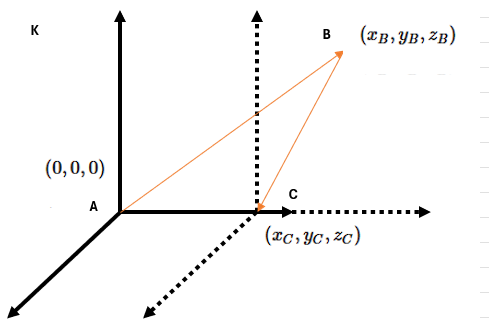
$$ x^2_B+y^2_B+z^2_B=c^2(t_B-0)^2\ (x_B-Vt_C)^2+y^2_B+z^2_B=c^2(t_C-t_B)^2 $$
まず、K’ から見た時の式を整理すると以下のようになる。
$$ x’^2_B+y’^2_B+z’^2_B=(ct’_B)^2、t’_C=2t’_B $$
次に、K から見た時の式も整理すると以下の式が得られる。
$$ x^2_B+y^2_B+z^2_B=(ct_B)^2、 t_{C}=2\frac{c^2}{c^2-V^2} \left(t_{B}-\frac{V}{c^2}x_{B}\right) $$
従来までは、この変換式としてGalilei変換が考えられており
$$ x’=x-Vt、y’=y、z’=z、t’=t $$
となっていたが、これを代入しても上記のいずれも満たさないことが分かる。ただ、地点 C に関する式を見比べてみると
$$ t’C=t_C、 t’B= \frac{c^2}{c^2-V^2} \left(t{B}-\frac{V}{c^2}x{B}\right) $$
というように対応しているものと考えられるため、試しに以下のように置いてみる。
$$ x’=x-Vt、y’=y、z’=z、 t’=\frac{c^2}{c^2-V^2}\left(t-\frac{V}{c^2}x\right) $$
このようにすると、地点 C での式は
$$ t’_C= \frac{c^2}{c^2-V^2}\left(t_C-\frac{V}{c^2}x_C\right)= \frac{c^2}{c^2-V^2}\left(t_C-\frac{V}{c^2}Vt_C\right)= t_C $$
というように満たすことが分かる。一方で、地点 B での関係式は満たしていないことも確認できる。
$$ x’^2_B+y’^2_B+z’^2_B=(ct’_B)^2、 x^2_B+y^2_B+z^2_B=(ct_B)^2 $$
ここで地点 C については成立していることと時間 $t’$ が $x’$ と同じような形（ $x,t$ の一次関数）となっていることから
$$ x’=ax+bt、y’=y、z’=z、t’=dx+et （a、b、d、e：定数） $$
というようにおいてみて、その他に成立する形がないか確認してみることにする。単純に代入して計算してみると
$$ a^2-c^2d^2=1、ab-c^2de=0、c^2e^2-b^2=c^2 $$
というようになるが、ここで条件として各観測者の原点で
$$ x’(x=Vt)=0 $$
という関係になっていることから
$$ b=-aV $$
であることから以下の通りになる。
$$ a^2-c^2d^2=1、-a^2V-c^2de=0、c^2e^2-a^2V^2=c^2 $$
そして、このうちの2式において
$$ a^2=1+c^2d^2、e=-\frac{Va^2}{c^2d}
$$ というようにすると、これらを代入することで以下の式が得られる。
$$ d^2=\frac{V^2}{c^2(c^2-V^2)} $$
すると、これにつられて他の定数も以下の形にかける。
$$ a^2=\frac{c^2}{c^2-V^2} $$
ここで $V$ が0となったときに、$x’$ と $x$ が一致していないといけないことから、
$$ a=\frac{c}{\sqrt{c^2-V^2}} $$
となる。一方で、$d$ と $e$ の方は
$$ d=\pm\frac{V}{c\sqrt{c^2-V^2}}、e=\mp\frac{c}{\sqrt{c^2-V^2}} $$
となるが、こちらも $V$ が0となったときに、$t’$ と $t$ が一致しないといけないことから、
$$ e=\frac{c}{\sqrt{c^2-V^2}}、d=-\frac{V}{c\sqrt{c^2-V^2}} $$
となる。以上のことから変換式を改めて記述すると以下の通りになる。
$$ x’=\gamma(x-Vt)、y’=y、z’=z、 t’=\gamma\left(t-\frac{V}{c^2}x\right) \left(\gamma=\frac{1}{\sqrt{1-V^2/c^2}}\right) $$
このようにすると全ての関係式を満たすことが分かるが、ここで一つ気になるものとして
$$ t_{\rm C}’=\sqrt{1-\frac{V^2}{c^2}}t_{\rm C} $$
が出てくるが、これは光速度不変の原理により時間と座標の捉え方が変わったことで出てきたものと考えられる。すなわち、観測者KがK’と同じ視点に立つとある一点に向けて進み反射して戻ってくるのが往復するだけになるため、光速度が不変となるには座標と時間が短くなる必要があるということになる。
Lorentz変換
Lorentz変換
先ほど導いた変換式を改めて記載してみると $$ x’=\gamma(x-Vt)、y’=y、z’=z、 t’=\gamma\left(t-\frac{V}{c^2}x\right) \left(\gamma=\frac{1}{\sqrt{1-V^2/c^2}}\right) $$ となるわけだが、これらが何を意味しているのか考えてみることにする。従来から変換式としてはGalilei変換が利用されており $$ x’=x-Vt、y’=y、z’=z、t’=t $$ という形であるが、 $V/c\to 0$ と観測者が光速に比べて低速で動いている場合は近似的にこの形になることが分かる。そのため、変換式を以下のように変形してみる。 $$ x’=\gamma(x-\beta ct)、y’=y、z’=z、 ct’=\gamma\left(ct-\beta x\right) \left(\gamma=\frac{1}{\sqrt{1-\beta^2}}、\beta=\frac{V}{c}\right) $$ すると、$ct$ が $x$ と同じような座標の一部としてみなせるので $w$ として $$ x’=\gamma(x-\beta w)、 w’=\gamma\left(w-\beta x\right) $$ とおき、試しに $x$ と $w$ との関係を座標で描いてみると以下の図の通りになる。

この形を見ると斜交座標の形をしていることから仮に $x$ 軸と $x’$ 軸あるいは $w’$ 軸とのなす角をそれぞれ$\theta$、$\phi$とすると $$ w=w’\sin\phi+x’\sin\theta、 x=w’\cos\phi+x’\cos\theta $$ となるため、Lorentz変換を逆変換したもの $$ w=\gamma\left(w’+\beta x’\right)、 x=\gamma(x’+\beta w’)
$$ と比較すると以下の関係が成り立つことが予想される。 $$ \sin\phi=\gamma、 \sin\theta=\gamma\beta、 \cos\phi=\gamma\beta、 \cos\theta=\gamma $$ しかし、これでは三角関数の公式を満たさない。 $$ \sin^2\theta+\cos^2\theta= \frac{\beta^2+1}{1-\beta^2}\neq 1、 \sin^2\phi+\cos^2\phi= \frac{1+\beta^2}{1-\beta^2}\neq 1 $$
そこで分子と分母の符号が反対であることを踏まると、双曲線関数であれば等式が成り立つことが分かる。実際、先ほどの三角関数と同じように $$ \sinh\phi=\gamma、 \sinh\theta=\gamma\beta、 \cosh\phi=\gamma\beta、 \cosh\theta=\gamma $$ としてみると、以下の関係式が成り立つことが分かる。 $$ \cosh^2\theta-\sinh^2\theta=1、 \cosh^2\phi-\sinh^2\phi=-1 $$ そのため、Lonrentz変換は以下のように書けることになる。 $$ w=w’\sinh\phi+x’\sinh\theta、 (\sinh\phi=\gamma、 \sinh\theta=\gamma\beta) $$ $$ x=w’\cosh\phi+x’\cosh\theta、 (\cosh\phi=\gamma\beta、 \cosh\theta=\gamma) $$ この変換自体は以下の図のように双曲線に沿って回転するものとなっており、通常の回転とは異なっていることが分かる。一例として $w$ 軸が回転することで点線（漸近線）に近づいていき、やがて $w’$ 軸は $w=x$ の直線と一致する。このとき、角度 $\phi$ に関しては $\phi\to\infty$ であることから, $\beta\to 1\ (V\to c)$ というように観測者の速度が光速を上限とした値になっていると考えられる（ $\theta$ も $\beta$ に依存するため同じようになっているといえる）。

以上が変換自体の話であるが、前回観測者ごとに光速度が不変となるには座標と時間が短くなる必要があるということを述べていたことや最後のところででてきた式 $$ t_{\rm C}’=\sqrt{1-\frac{V^2}{c^2}}t_{\rm C} $$ も説明なしに出てきたため、まずはある地点での時間に関する変換を見ていくことにする。
時間の遅れ
観測者K、K’がおり、Kから見てK’がx軸に速度Vで移動しているものとする。このとき、K’においてある一つの地点Pでの時間を計測したとき
$$ x_{1}‘=x_{2}’、t_{2}‘-t_{1}’=\Delta t’ $$ が成立する。一方で、Lotentz変換に基づいてKからK’の立場で考えてみると $$ x_{2}‘-x_{1}’= \gamma\left[ \left(x_{2}-x_{1}\right)-V\left(t_{2}-t_{1}\right) \right]=0 $$ $$ t_{2}‘-t_{1}’= \gamma\left[ \left(t_{2}-t_{1}\right)- \frac{V}{c^2}\left(x_{2}-x_{1}\right) \right]=\Delta t’ $$ となる。ただし、$\gamma=\left(1-V^2/c^2\right)^{-1/2}$である。すると、以下の関係式が得られる。 $$ \left(x_{2}-x_{1}\right)=V\left(t_{2}-t_{1}\right)= V\Delta t $$ $$ \Delta t’=\sqrt{1-\frac{V^2}{c^2}}\Delta t<\Delta t $$ 一つ目の式は点Pが動いていることから分かるが、2つ目の式については違和感を感じであろう。$\Delta t’$ の方はK’の立場から見て静止している地点（同じ地点で）の時間経過を表しているのに対し、$\Delta t$ は別の地点で測定した時間を表している。つまり、動いているものの立場K’で見るとその速度に応じて時間が遅れているように見えることになる。先ほど出てきた式も時刻0から時間を計測しており $\Delta t = t_{\rm C}$ となるため、この事象によるものとなっている。
Lorentz収縮
次に2点ABで上記と同様に時間を計測すると、その2点間において同時であることから $$ x_{\rm B}‘-x_{\rm A}’=L’、t_{\rm A}‘=t_{\rm B}’ $$ が成立する。一方で、Lotentz変換に基づいてKからK’の立場で考えてみると $$ x_{\rm B}‘-x_{\rm A}’= \gamma\left[ \left(x_{\rm B}-x_{\rm A}\right)-V\left(t_{\rm B}-t_{\rm A}\right) \right]=L’ $$ $$ t_{\rm B}‘-t_{\rm A}’= \gamma\left[ \left(t_{\rm B}-t_{\rm A}\right)- \frac{V}{c^2}\left(x_{\rm B}-x_{\rm A}\right) \right]=0 $$ となり、以下の関係式が得られる。 $$ V\left(t_{\rm B}-t_{\rm A}\right)= \frac{V^2}{c^2}\left(x_{\rm B}-x_{\rm A}\right)= \frac{V^2}{c^2}L= \beta^2 L $$ $$ L’=\sqrt{1-\frac{V^2}{c^2}}L<L $$ このことから、まず片方で同時に測ったとしてももう片方が同じ立場で見たときはそうではなく $\beta^2 L$ だけ移動しており、その分を $L$ から引いて $\gamma$ をかけることでKはK’と同じ立場で見れるが長さが短く見えてしまうという結果が得られる。
相対論的力学
相対論的力学
Lotentz変換から速度の式を求めてみると $$ v_x’=\frac{v_x-V}{1-\frac{v_xV}{c^2}}、 v_y’=\frac{v_y}{ \gamma\left(1-\frac{v_xV}{c^2}\right)}、 v_z’=\frac{v_z}{ \gamma\left(1-\frac{v_xV}{c^2}\right)}、 v’_w=c $$ となるが、ここで $v_x’$ に着目すると $v_x$ に対して以下の条件下でないと発散することが分かる。 $$ v_x<\frac{c^2}{V} $$ 一方で $V$ に関しても、こちらも $c$ をこえると $\gamma\ (\sqrt{1-V^2/c^2})$ が虚数となってしまうことから以下の条件になることも分かる。 $$ V<c、v_x<c $$ このことから、物体の速度というのは光速を超えることがなく、力が働いて加速しても光速で頭打ちになることがうかがえる。これは別の見方だと、速度が増すことで加速しにくくなる（質量が増す）ことになるため、質量が速度に依存しているともいえる。古典力学においても質量が速度（というより時間）に依存している場合は以下の方程式を解くことで運動を記述することができた。ここで $\bm{p}$ は運動量、$\bm{F}$ は外部からの力である。 $$ \bm{F}=\frac{{\rm d}\bm{p}}{{\rm d}t}、 \bm{p}=m\bm{v} $$ 今回もこれと同様の式が成立しているものとして、質量がどのように速度に依存しているか確認してみることにする。これについてはすでにN.LwisとC.Tolmanの論文（The Principle of Relativity and Non-Newtonian Mechanics）において示されており、これでは外部の力がない状態において運動量が保存されることを利用して導いている。これによると $$ m(\bm{v})=\frac{m_0}{\sqrt{1-\frac{\bm{v}^2}{c^2}}} $$ というようになるとされている。ここで $m_0$ は物体が静止しているときの質量としている。では、観測者ごとにどうなるかを見ていくと、まず質量に関して $$ m(\bm{v}‘)= \frac{m_0}{\sqrt{1-\frac{\bm{v’}^2}{c^2}}} $$ であり、速度に関しては $$ \bm{v}‘^2=v_x’^2+v_y’^2+v_z’^2= \frac{1}{ \left( 1-\frac{v_xV}{c^2} \right)^2 } \left[ (v_x-V)^2+ \left( 1-\frac{V^2}{c^2} \right) (v_y^2+v_z^2) \right] $$ となることから、以下のようになる。 $$ m(\bm{v}‘)= \gamma \left( 1-\frac{v_xV}{c^2} \right) \frac{m_0}{ \sqrt{1-\frac{\bm{v}^2}{c^2}} }= \gamma\left( 1-\frac{v_xV}{c^2} \right) m(\bm{v})= \frac{\mathrm{d}t’}{\mathrm{d}t}m(\bm{v}) $$ ただし、ここで以下の関係式を利用している。 $$ \frac{\mathrm{d}t’}{\mathrm{d}t}= \gamma\left(1-\frac{v_xV}{c^2}\right) $$ そのため、運動方程式の左辺については以下の通りとなる。 $$ \frac{\mathrm{d}}{\mathrm{d}t’} (m(\bm{v}‘)v_x’)= \gamma \frac{\mathrm{d}t}{\mathrm{d}t’} \left[ \frac{\mathrm{d}}{\mathrm{d}t} (m(\bm{v})v_x)- \frac{\mathrm{d}}{\mathrm{d}t} (m(\bm{v})V) \right]= \frac{\mathrm{d}t}{\mathrm{d}t’} \gamma \left( F_x-\frac{V}{c}F_w \right) $$ $$ \frac{\mathrm{d}}{\mathrm{d}t’} (m(\bm{v}‘)v_y’)= \frac{\mathrm{d}t}{\mathrm{d}t’} \frac{\mathrm{d}}{\mathrm{d}t} (m(\bm{v})v_y)= \frac{\mathrm{d}t}{\mathrm{d}t’} F_y $$ $$ \frac{\mathrm{d}}{\mathrm{d}t’} (m(\bm{v}‘)v_z’)= \frac{\mathrm{d}t}{\mathrm{d}t’} \frac{\mathrm{d}}{\mathrm{d}t} (m(\bm{v})v_z)= \frac{\mathrm{d}t}{\mathrm{d}t’} F_z $$ $$ \frac{\mathrm{d}}{\mathrm{d}t’} (m(\bm{v}‘)v_w’)= \frac{\mathrm{d}t}{\mathrm{d}t’} \left[ \frac{\mathrm{d}}{\mathrm{d}t} (m(\bm{v})c)- \frac{V}{c} \frac{\mathrm{d}}{\mathrm{d}t} (m(\bm{v})v_x) \right]= \frac{\mathrm{d}t}{\mathrm{d}t’} \gamma \left( F_w-\frac{V}{c}F_x \right) $$ ここで、右辺は力に等しいとしているため $$ F_x’\mathrm{d}t’= \gamma \left( F_x-\frac{V}{c}F_w \right)\mathrm{d}t、 F_y’\mathrm{d}t’=F_y\mathrm{d}t、 F_z’\mathrm{d}t’=F_z\mathrm{d}t、 F_w’\mathrm{d}t’= \gamma \left( F_w-\frac{V}{c}F_x \right)\mathrm{d}t $$ となり、力積（運動量の変化）が等しい形になる。そのため $$ \mathrm{d}\bm{p}‘=\mathrm{d}\bm{p} $$ であるが、このままだと時間の部分が抜けた形になってしまっていることが分かる。一方で、質量の関係式をもう少し展開していくと $$ \frac{m_0}{ \sqrt{1-\frac{\bm{v}^2}{c^2}}}= \frac{\mathrm{d}t}{\mathrm{d}t’} \frac{m_0}{ \sqrt{1-\frac{\bm{v’}^2}{c^2}}} $$ であるから、時間に関して以下の等式が成り立つ。 $$ \mathrm{d}t’ \sqrt{1-\frac{\bm{v’}^2}{c^2}}= \mathrm{d}t \sqrt{1-\frac{\bm{v}^2}{c^2}} $$ こちらの量も変換に対して不変な形をしており、 時間の代わりに扱うと同じ形で置き換えられることが分かる。そこで、 $$ \mathrm{d}\tau\equiv \mathrm{d}t \sqrt{1-\frac{\bm{v}^2}{c^2}} $$ として、運動方程式を以下のようにしてみよう。 $$ \bm{f}= \frac{\mathrm{d}\bm{p}}{\mathrm{d}\tau}、 \bm{f}\equiv\gamma(\bm{v})\bm{F} $$ こちらも同じように見ていくと、質量に関しては同じとなる一方で各成分についてはそれぞれ $$ \frac{\mathrm{d}}{\mathrm{d}\tau’} (m(\bm{v}‘)v_x’)= \gamma \left[ \frac{\mathrm{d}}{\mathrm{d}\tau} (m(\bm{v})v_x)- \frac{\mathrm{d}}{\mathrm{d}\tau} (m(\bm{v})V) \right]= \gamma \left( f_x-\frac{V}{c}f_w \right) $$ $$ \frac{\mathrm{d}}{\mathrm{d}\tau’} (m(\bm{v}‘)v_y’)= \frac{\mathrm{d}}{\mathrm{d}\tau} (m(\bm{v})v_y)=f_y $$ $$ \frac{\mathrm{d}}{\mathrm{d}\tau’} (m(\bm{v}‘)v_z’)= \frac{\mathrm{d}}{\mathrm{d}\tau} (m(\bm{v})v_z)=f_z $$ $$ \frac{\mathrm{d}}{\mathrm{d}\tau’} (m(\bm{v}‘)v_w’)= \gamma \left[ \frac{\mathrm{d}}{\mathrm{d}\tau} (m(\bm{v})c)- \frac{V}{c} \frac{\mathrm{d}}{\mathrm{d}\tau} (m(\bm{v})v_x) \right]= \gamma \left( f_w-\frac{V}{c}f_x \right) $$ となる。このことから、下記のように力に関して対応していることが分かる。 $$ f_x’= \gamma\left( f_x-\frac{V}{c}f_w \right)、 f_y’=f_y、 f_z’=f_z、 f_w’= \gamma \left( f_w-\frac{V}{c}f_x \right) $$ また、運動量に対してエネルギーも保存するため、まずエネルギー（運動エネルギー）がどのような形になるか確認するため仕事率（力と速度の内積）を求めてみると $$ \bm{f}\cdot\bm{v}= \frac{{\rm d}}{{\rm d}\tau} \left(\frac{m_0\bm{v}}{\sqrt{1-\frac{\bm{v}^2}{c^2}}}\right)\cdot\bm{v}= \frac{{\rm d}}{{\rm d}\tau} \left( \frac{m_0c^2} {\sqrt{1-\frac{\bm{v}^2}{c^2}}} \right)= \frac{{\rm d}}{{\rm d}\tau} \left(m(\bm{v})c^2\right) $$ となるため、エネルギーは以下の形になることが分かる。 $$ E_K=m(\bm{v})c^2= m_0c^2+\frac{1}{2}m_0\bm{v}^2+\cdots $$ このように、$v$ が $c$ に比べて低速の場合は静止エネルギーと古典力学での運動エネルギーの和になることがわかる。また、仕事率の形を見ると $f_w$ とほぼ同じような形をしており以下の関係がある。 $$ f_w= \frac{1}{c}(\bm{f}\cdot\bm{v})= \frac{1}{c} \frac{{\rm d}E_K}{{\rm d}\tau} $$
以上を踏まえて、運動方程式と変換式を整理すると以下のようになる。 $$ \bm{f}= \frac{\mathrm{d}\bm{p}}{\mathrm{d}\tau}、 (\bm{f}\cdot\bm{v})= \frac{\mathrm{d}E_K}{\mathrm{d}\tau}、 \bm{p}=m(\bm{v})\bm{v}、E_K=m(\bm{v})c^2 $$ $$ f_x’= \gamma\left[ f_x- \frac{V}{c^2}(\bm{f}\cdot\bm{v}) \right]、 f_y’=f_y、 f_z’=f_z \rightarrow (\bm{f}‘\cdot\bm{v}’)= \gamma\left[ (\bm{f}\cdot\bm{v})- Vf_x \right] $$ これらの式に基づいて、実際に重力がかかる場合の運動を考えてみる。重力が働いている場合、
$$ \frac{\mathrm{d}}{\mathrm{d}\tau} \left( \frac{m_0\bm{v}} {\sqrt{1-\frac{\bm{v}^2}{c}}} \right)= \frac{m_0\bm{g}} {\sqrt{1-\frac{\bm{v}^2}{c}}}、 \frac{\mathrm{d}}{\mathrm{d}\tau} \left( \frac{m_0c^2} {\sqrt{1-\frac{\bm{v}^2}{c}}} \right)= \frac{m_0}{\sqrt{1-\frac{\bm{v}^2}{c}}} (\bm{g}\cdot\bm{v}) $$
というようになるが、これを見ると重力での質量の増加分 $\gamma$ は固有時のものと打ち消しあうことでなくなることが分かる。このことから、$\gamma$ という項は質量が増加するためによるというよりも時間が固有時になる影響で発生するもの（速度の形の変化）により発生したものと考えることができる。式については z 成分しかなく位置 $z_0$ で初速度が 0 であるとすると $$ \frac{m_0v_z} {\sqrt{1-\frac{v_z^2}{c^2}}}=-m_0gt、 E=m_0c^2- m_0g\cdot(z-z_0) $$ となる。ここで、一つ目の式を整理すると速度と位置が求められる。 $$ v_z= -\frac{gt} {\sqrt{1+\left(\frac{gt}{c}\right)^2}}、 z=z_0+ \frac{c^2}{g} \left( 1-\sqrt{1+\left(\frac{gt}{c}\right)^2} \right) $$ このとき、光速に比べて $gt$ が小さいものとすると $$ v_z=-gt、 z=z_0-\frac{1}{2}gt^2 $$ というように従来と同じ形になることが分かる。次に電場や磁場が働くとどうなるかを見るため、電磁気学の方を見てみることにする。
相対論的電磁気学
相対論的電磁気学
電磁気学においては、以下のMaxwell方程式を用いて説明することができた。 $$ \mathrm{div}\bm{D}=\rho、 \mathrm{div}\bm{B}=0、 \mathrm{rot}\bm{E}=-\frac{\partial \bm{B}}{\partial t}、 \mathrm{rot}\bm{H}=\bm{i}+\frac{\partial \bm{D}}{\partial t} $$
このうち、２番目と３番目の式に関して $$ \frac{\partial B_{x}}{\partial x}+\frac{\partial B_{y}}{\partial y}+\frac{\partial B_{z}}{\partial z}=0 $$ $$ \frac{\partial E_{z}}{\partial y}-\frac{\partial E_{y}}{\partial z}=-\frac{\partial B_{x}}{\partial t}、 \frac{\partial E_{x}}{\partial z}-\frac{\partial E_{z}}{\partial x}=-\frac{\partial B_{y}}{\partial t}、 \frac{\partial E_{y}}{\partial x}-\frac{\partial E_{x}}{\partial y}=-\frac{\partial B_{z}}{\partial t} $$ と各成分ごとに書き下せるが、ここでLotrentz変換を導入すると $$ \frac{\partial}{\partial x}= \gamma\frac{\partial}{\partial x’}-\gamma\frac{V}{c^2}\frac{\partial}{\partial t’}、 \frac{\partial}{\partial y}= \frac{\partial}{\partial y’}、 \frac{\partial}{\partial z}= \frac{\partial}{\partial z’}、 \frac{\partial}{\partial t}= -\gamma V\frac{\partial}{\partial x’}+\gamma\frac{\partial}{\partial t’} $$ となるため、これらを適用すると以下の形が得られる。 $$ \gamma\frac{\partial B_x}{\partial x’}+ \frac{\partial B_y}{\partial y’}+ \frac{\partial B_z}{\partial z’}=\gamma\frac{V}{c^2}\frac{\partial B_x}{\partial t’} $$ $$ -\gamma V\frac{\partial B_{x}}{\partial x’}+ \frac{\partial E_{z}}{\partial y’}-\frac{\partial E_{y}}{\partial z’}= -\gamma\frac{\partial B_{x}}{\partial t’} $$ $$ \frac{\partial E_{x}}{\partial z’}- \frac{\partial }{\partial x’}\gamma\left(E_{z}+VB_{y}\right)= -\frac{\partial }{\partial t’}\gamma\left(B_{y}+\frac{V}{c^2}E_{z}\right) $$ $$ \frac{\partial }{\partial x’}\gamma\left(E_{y}-VB_{z}\right)- \frac{\partial E_{x}}{\partial y’}= -\frac{\partial }{\partial t’}\gamma\left(B_{z}-\frac{V}{c^2}E_{y}\right) $$ であるが、ここで1番目の式と2番目の式を $$ -\gamma V\frac{\partial B_x}{\partial x’}- V\frac{\partial B_y}{\partial y’}- V\frac{\partial B_z}{\partial z’}=-\gamma\frac{V^2}{c^2}\frac{\partial B_x}{\partial t’} $$ $$ \gamma V\frac{\partial B_{x}}{\partial x’}- \frac{\partial E_{z}}{\partial y’}+\frac{\partial E_{y}}{\partial z’}= \gamma\frac{\partial B_{x}}{\partial t’} $$ という形にして一番目の式に2番目の式に代入することで $$ \frac{\partial B_x}{\partial x’}+ \frac{\partial}{\partial y’}\gamma\left(B_y+\frac{V}{c^2}E_z\right)+ \frac{\partial}{\partial z’}\gamma\left(B_z-\frac{V}{c^2}E_y\right)=0 $$ となる。または足し合わせると以下のようになる。 $$ \frac{\partial}{\partial y’}\gamma(E_z+VB_y)- \frac{\partial}{\partial z’}\gamma(E_y-VB_z)= -\frac{\partial B_x}{\partial t’} $$ 以上のことをひっくるめて、改めて整理した式を書くと以下の通りとなる。 $$ \frac{\partial B_x}{\partial x’}+ \frac{\partial}{\partial y’}\gamma\left(B_y+\frac{V}{c^2}E_z\right)+ \frac{\partial}{\partial z’}\gamma\left(B_z-\frac{V}{c^2}E_y\right)=0 $$ $$ \frac{\partial}{\partial y’}\gamma(E_z+VB_y)- \frac{\partial}{\partial z’}\gamma(E_y-VB_z)= -\frac{\partial B_x}{\partial t’} $$ $$ \frac{\partial E_{x}}{\partial z’}- \frac{\partial }{\partial x’}\gamma\left(E_{z}+VB_{y}\right)= -\frac{\partial }{\partial t’}\gamma\left(B_{y}+\frac{V}{c^2}E_{z}\right) $$ $$ \frac{\partial }{\partial x’}\gamma\left(E_{y}-VB_{z}\right)- \frac{\partial E_{x}}{\partial y’}= -\frac{\partial }{\partial t’}\gamma\left(B_{z}-\frac{V}{c^2}E_{y}\right) $$ これらの式から、以下の関係式が成り立つことがわかる。 $$ E_{x’}=E_{x}、 E_{y’}=\gamma\left(E_{y}-VB_{z}\right)、 E_{z’}=\gamma\left(E_{z}+VB_{y}\right) $$ $$ B_{x’}=B_{x}、 B_{y’}=\gamma\left(B_{y}+\frac{V}{c^2}E_{z}\right)、 B_{z’}=\gamma\left(B_{z}-\frac{V}{c^2}E_{y}\right) $$ 確認の例として、電荷 $q$ の点電荷に電場 $\bm{E}$’ と磁場 $\bm{B}‘$ が働いているとすると $$ \frac{\mathrm{d}\bm{p}’}{\mathrm{d}\tau’}=\bm{f}= \frac{1}{\sqrt{1-\frac{\bm{v}‘^2}{c^2}}} \left[ q\bm{E}’+q(\bm{v}‘\times\bm{B}’) \right] $$ $$ \frac{\mathrm{d}E’}{\mathrm{d}\tau’}= \frac{1}{\sqrt{1-\frac{\bm{v}‘^2}{c^2}}} \left[ q\bm{E}’+q(\bm{v}‘\times\bm{B}’) \right]\cdot\bm{v}‘= \frac{1}{\sqrt{1-\frac{\bm{v}’^2}{c^2}}} (\bm{v}‘\cdot q\bm{E}’) $$ となるが、各成分に対して変換すると以下の通りになる。 $$ \frac{\mathrm{d}p_x’}{\mathrm{d}\tau’}= \frac{1}{\sqrt{1-\frac{\bm{v}^2}{c^2}}} \gamma \left[ qE_x+ q(v_yB_z-v_zB_y)- \frac{V}{c^2}(\bm{v}\cdot q\bm{E}) \right] $$ $$ \frac{\mathrm{d}p_y’}{\mathrm{d}\tau’}= \frac{1}{\sqrt{1-\frac{\bm{v}^2}{c^2}}} \left[ qE_y+q(v_zB_x-v_xB_z) \right] $$ $$ \frac{\mathrm{d}p_z’}{\mathrm{d}\tau’}= \frac{1}{\sqrt{1-\frac{\bm{v}^2}{c^2}}} \left[ qE_z+q(v_xB_y-v_yB_x) \right] $$ $$ \frac{\mathrm{d}E’}{\mathrm{d}\tau’}= \frac{1}{\sqrt{1-\frac{\bm{v}^2}{c^2}}} \left[ (\bm{v}\cdot q\bm{E})- V{E_x+q(v_yB_z-v_zB_y)} \right] $$ これにより、力に関して以下の対応になっていることが再確認できる。 $$ f_x’= \frac{1}{\sqrt{1-\frac{\bm{v}‘^2}{c^2}}} \left[ qE_x’+q(v_y’B_z’-v_z’B_y’) \right] \leftrightarrow f_x= \frac{1}{\sqrt{1-\frac{\bm{v}^2}{c^2}}} \left[ qE_x+q(v_yB_z-v_zB_y) \right] $$
$$ f_y’= \frac{1}{\sqrt{1-\frac{\bm{v}‘^2}{c^2}}} \left[ qE_y’+q(v_z’B_x’-v_x’B_z’) \right] \leftrightarrow f_y= \frac{1}{\sqrt{1-\frac{\bm{v}^2}{c^2}}} \left[ qE_y+q(v_zB_x-v_xB_z) \right] $$ $$ f_z’= \frac{1}{\sqrt{1-\frac{\bm{v}‘^2}{c^2}}} \left[ qE_z’+q(v_x’B_y’-v_y’B_x’) \right] \leftrightarrow f_z= \frac{1}{\sqrt{1-\frac{\bm{v}^2}{c^2}}} \left[ qE_z+q(v_xB_y-v_yB_x) \right] $$ $$ f_w’= \frac{1}{c\sqrt{1-\frac{\bm{v}‘^2}{c^2}}} (\bm{v}’\cdot q\bm{E}’) \leftrightarrow f_w= \frac{1}{c\sqrt{1-\frac{\bm{v}^2}{c^2}}} (\bm{v}\cdot q\bm{E}) $$
重力と慣性（等価原理）
重力と慣性（等価原理）
特殊相対性理論において、各地点の座標と時間について議論していたと思うが、一定速度で動く観測者というのは実際にないことが多い。というのも、地球上で観測を行うにあたって重力や地球の自転といった影響を受けていることからも伺える。一例として、等速円運動で自転している地球上で球の運動を見てみると $$ m\frac{\mathrm{d}^2z}{\mathrm{d}s^2}= -mg $$ であることから、外部から見ると $$ m\frac{\mathrm{d}^2z’}{\mathrm{d}s’^2}= mr^2\omega^2-mg $$ というように慣性力が働く。ただ、ここでこの式を $$ mr^2\omega^2-mg=-m(g-r^2\omega^2)=-mg’ $$ というようにすると、あたかも重力が変化したように見ることもできる。これ以外にも、加速する系では慣性力と重力が働いているが、互いに等価的なものとしてみなすことができる。実際、Newtonの運動方程式において $$ m_I \frac{\mathrm{d}^2\bm{r}}{\mathrm{d}s^2}=\bm{F} $$ と書かれるが、ここに現れる質量は物体の慣性の度合いを表すものであるので慣性質量と呼ばれる。必要なときには添え字 $I$ をつけて表す。 Newton力学にはもう一つ別の種類の質量が登場する。それは万有引力の法則 $$ F=G\frac{m_{1G}m_{2G}}{r^2} $$ に使われる質量である。これは物体の慣性とは概念として全く別のものであり重力質量と呼ばれる。普通、添え字 $G$ をつけて慣性質量と区別する。上記の式によれば、地球表面で重力質量 $m_G$ の物体が受ける重力は $$ F=m_G g $$ となる。ここで $g$ は、$M_G,R$ を地球の重力質量、半径として $$ g=G\frac{M_G}{R^2} $$ で与えられる。さて、地球上での質点の自由落下の方程式というのは、簡単に鉛直方向 $z$ だけを考慮すると $$ m_I \frac{\mathrm{d}^2\bm{r}}{\mathrm{d}s^2}= -m_G g $$ となる。この式の両辺を $m_I$ で割ると $$ \frac{\mathrm{d}^2\bm{r}}{\mathrm{d}s^2}= -\frac{m_G}{m_I} g $$ を得る。すなわち自由落下の加速度は比 $m_G/m_I$ に比例する。ところがGalileiの有名なPisaの斜塔の実験以降、他の摩擦力などなければ自由落下の加速度は全ての物体で等しいことが知られている。これは $m_G/m_I$ が全ての物体について等しい値を持つことを意味する。
斜塔の落下実験はあまり精度のよいものとはいえないであろうが、振り子の実験などはもっと精密な測定ということができよう。2種類の質量の比例関係についてはその後さらに正確な実験が行われた。特に19世紀末から20世紀末にかけてE$"\mathrm{o}$tv$"\mathrm{o}$sが優れた実験を行っている。それによれば $m_G/m_I$ を多くの物体について測定した結果、$10^{-9}$ という実験制度の範囲ですべて同じ値になった。さらにもっと最近のDicke、Braginskiらの測定によると$10^{-12}$くらいの精度で $m_G$ と $m_I$ の比例関係が成り立っていることが確認されている。2種類の質量が正確に比例しているのであれば、その比の値を1に選ぶのが便利である。もし比の値が1でなかったならば、どちらかの質量測定の目盛りを変更して比が1になるようにすればよい。要するにすべての物体について $m_G=m_I$ と考えればよいのである。
以上の議論から、等加速度運動する系も含めた変換を考慮することで重力も含めた方程式を導出できるものと考えられるため、まずは等加速度運動する座標系でどうなるかを見ていくことにする。
加速度系への座標変換について
加速度系への座標変換について
ここからは、等加速度運動している系同士での変換がどのようになるか見ていこう。例えば、今 $x$ 方向に一定加速度 $a$ で移動しているものとすると、
$$
\frac{\mathrm{d}^2x}{\mathrm{d}t^2}=a、
\frac{\mathrm{d}^2x'}{\mathrm{d}t'^2}=0、
t'=t
$$
となるため、以下の関係が成り立つものと考えられる。
$$ x’=x-\frac{1}{2}at^2=x-\frac{a}{2c^2}w^2、 w’=w、 (w=ct) $$
これをLorentz変換のところでも見せた時空図で描写すると以下のようになる。

一般的に、ある地点の位置を指定するときはベクトルが用いられており、その中身は座標系を指定することで表すことができる。例えば、平面上の地点をベクトル $\bm{s}$ で表すとき座標系として二次元直交座標系 $(X,Y)$ を用いると $\bm{s}=(X,Y)$ となる。しかし、この表記だけだと二次元直交座標系かどうか判断ができない（二次元斜交座標系なども考えられる）ため、基本ベクトル（各成分の大きさ1のベクトル）というものが利用される。すなわち、二次元直交座標系の基本ベクトルを $\bm{e}_X,\bm{e}_Y$ として
$$ \bm{s}=X\bm{e}_X+Y\bm{e}_Y、 \bm{e}_X\cdot\bm{e}_X=1、 \bm{e}_Y\cdot\bm{e}_Y=1、 \bm{e}_X\cdot\bm{e}_Y=0 $$
というようにすると、$\bm{s}$ を表記できてなおかつ基本ベクトルの大きさが1で互いに直交している（直交座標系である）ことが分かる。同様に、二次元斜交座標系 $(x,y)$ において基本ベクトルを $\bm{e}_x,\bm{e}_y$ として
$$ \bm{s}=x\bm{e}_x+y\bm{e}_y、 \bm{e}_x\cdot\bm{e}_x=1、 \bm{e}_y\cdot\bm{e}_y=1、 \bm{e}_x\cdot\bm{e}_y=\frac{1}{\sqrt{2}} $$
というようにすると、今度は互いに45度の角度をなす座標系になっていることが分かる。このことを踏まえて、今度は直交座標系から斜交座標系に変換することを考えると、ベクトル $\bm{s}$ について
$$ \bm{s}= X\bm{e}_X+Y\bm{e}_Y= x\bm{e}_x+y\bm{e}_y $$
というように表記を置き換えることになる。しかし、このままだと互いにどのような関係になっているか分からない（色々取りうる可能性がある）ため、例として以下の変換式に基づいて座標変換される場合を考えてみる。


$$ X = x+\frac{1}{\sqrt{2}}y、 Y = \frac{1}{\sqrt{2}}y \ \leftrightarrow\ x = X - Y、 y = \sqrt{2}Y $$
すると、先ほどのベクトル $\bm{s}$ の関係式に変換式を代入することで
$$ \bm{s}= \left( x+\frac{1}{\sqrt{2}}y \right) \bm{e}_X+ \frac{1}{\sqrt{2}}y\bm{e}_Y= x\bm{e}_X+ y \left( \frac{1}{\sqrt{2}}\bm{e}_X+ \frac{1}{\sqrt{2}}\bm{e}_Y \right)= x\bm{e}_x+y\bm{e}_y $$ $$ \bm{s}= \left( X-Y \right) \bm{e}_x+ \sqrt{2}Y\bm{e}_y= X\bm{e}_x+ Y \left( -\bm{e}_x+\sqrt{2}\bm{e}_y \right)= X\bm{e}_X+Y\bm{e}_Y $$
というようになるため、比較すると以下の式が得られる。
$$ \bm{e}_x=\bm{e}_X、 \bm{e}_y= \frac{1}{\sqrt{2}}\bm{e}_X+ \frac{1}{\sqrt{2}}\bm{e}_Y、 \bm{e}_X=\bm{e}_x、 \bm{e}_Y=-\bm{e}_x+\sqrt{2}\bm{e}_y $$
この関係から、変換後の内積を求めてみると
$$ \bm{e}_x\cdot\bm{e}_x= \bm{e}_X\cdot\bm{e}_X=1 $$ $$ \bm{e}_y\cdot\bm{e}_y= \frac{1}{2}(\bm{e}_X\cdot\bm{e}_X)+ (\bm{e}_X\cdot\bm{e}_Y)+ \frac{1}{2}(\bm{e}_Y\cdot\bm{e}_Y)=1 $$ $$ \bm{e}_x\cdot\bm{e}_y= \frac{1}{\sqrt{2}}(\bm{e}_X\cdot\bm{e}_X)+ \frac{1}{\sqrt{2}}(\bm{e}_X\cdot\bm{e}_Y)= \frac{1}{\sqrt{2}} $$
というように、内積に関して斜交座標系のものになっていることが分かる。このように、変換式を用いることで座標変換されるとともに変換前後の座標系の状態は基底ベクトルと内積によって確認できるものと予想される。そのため、先ほどの定加速度系での変換について考えてみると、変換前の直交座標系において
$$ \bm{s}=x\bm{e}_x+w\bm{e}_w、 \bm{e}_x\cdot\bm{e}_x=1、 \bm{e}_w\cdot\bm{e}_w=1、 \bm{e}_x\cdot\bm{e}_w=0 $$
となっているものして、変換後に
$$ \bm{s}= x\bm{e}x+w\bm{e}w= x’\bm{e}{x’}+w’\bm{e}{w’} $$
というようになっているものとする。ところが、ここで変換後の基本ベクトルが各地点で同じではないため、一概にこのような形で書けないという問題がでてきてしまう。そのため、各地点ごとに基本ベクトルがどうなっているかを見る必要が出てくる。そこで $\bm{s}$ を一般に
$$ \bm{s}=\bm{s}(X,Y)=\bm{s}(x,y) $$
というように変換されるものとして、この微小変化をとることで
$$ \mathrm{d}\bm{s}= \left( \frac{\partial \bm{s}}{\partial X} \right) \mathrm{d}X+ \left( \frac{\partial \bm{s}}{\partial Y} \right) \mathrm{d}Y= \left( \frac{\partial \bm{s}}{\partial x} \right) \mathrm{d}x+ \left( \frac{\partial \bm{s}}{\partial y} \right) \mathrm{d}y $$
と展開してみる。すると、基本ベクトルを利用した式と同じように各成分のベクトルの和になっていることが分かる。実際、$\bm{u}$ を基底ベクトル（大きさが1でない各成分のベクトル）として
$$ \bm{u}_X= \frac{\partial \bm{s}}{\partial X}、 \bm{u}_Y= \frac{\partial \bm{s}}{\partial Y}、 \bm{u}_x= \frac{\partial \bm{s}}{\partial x}、 \bm{u}_y= \frac{\partial \bm{s}}{\partial y} $$
というように置くことで以下の形になることが分かる。
$$ \mathrm{d}\bm{s}= \mathrm{d}X\bm{u}_X+ \mathrm{d}Y\bm{u}_Y= \mathrm{d}x\bm{u}_x+ \mathrm{d}y\bm{u}_y $$
また、座標系間で変数が
$$ X=X(x,y)、Y=Y(x,y) \leftrightarrow x=x(X,Y)、y=y(X,Y) $$
というように変換式を満たしていることから、微小変化が
$$ \mathrm{d}X= \left( \frac{\partial X}{\partial x} \right) \mathrm{d}x+ \left( \frac{\partial X}{\partial y} \right) \mathrm{d}y、 \mathrm{d}Y= \left( \frac{\partial Y}{\partial x} \right) \mathrm{d}x+ \left( \frac{\partial Y}{\partial y} \right) \mathrm{d}y $$ $$ \mathrm{d}x= \left( \frac{\partial x}{\partial X} \right) \mathrm{d}X+ \left( \frac{\partial x}{\partial Y} \right) \mathrm{d}Y、 \mathrm{d}y= \left( \frac{\partial y}{\partial X} \right) \mathrm{d}X+ \left( \frac{\partial y}{\partial Y} \right) \mathrm{d}Y $$
であるため、$\mathrm{d}\bm{s}$ の関係式に代入すると
$$ \mathrm{d}\bm{s}= \mathrm{d}X\bm{u}_X+ \mathrm{d}Y\bm{u}_Y= \left[ \left( \frac{\partial x}{\partial X} \right) \bm{u}_x+ \left( \frac{\partial y}{\partial X} \right) \bm{u}_y \right] \mathrm{d}X+ \left[ \left( \frac{\partial x}{\partial Y} \right) \bm{u}_x+ \left( \frac{\partial y}{\partial Y} \right) \bm{u}_y \right] \mathrm{d}Y $$ $$ \mathrm{d}\bm{s}= \left[ \left( \frac{\partial X}{\partial x} \right) \bm{u}_X+ \left( \frac{\partial Y}{\partial x} \right) \bm{u}_Y \right] \mathrm{d}x+ \left[ \left( \frac{\partial X}{\partial y} \right) \bm{u}_X+ \left( \frac{\partial Y}{\partial y} \right) \bm{u}_Y \right] \mathrm{d}y= \mathrm{d}x\bm{u}_x+ \mathrm{d}y\bm{u}_y $$
となるため、比較すると以下の関係式が得られる。
$$ \bm{u}_X= \frac{\partial x}{\partial X} \bm{u}_x+ \frac{\partial y}{\partial X} \bm{u}_y、 \bm{u}_Y= \frac{\partial x}{\partial Y} \bm{u}_x+ \frac{\partial y}{\partial Y} \bm{u}_y $$ $$ \bm{u}_x= \frac{\partial X}{\partial x} \bm{u}_X+ \frac{\partial Y}{\partial x} \bm{u}_Y、 \bm{u}_y= \frac{\partial X}{\partial y} \bm{u}_X+ \frac{\partial Y}{\partial y} \bm{u}_Y $$
この関係式が正しいかは、次のように展開してみることで確認できる。
$$ \bm{u}_X= \frac{\partial \bm{s}}{\partial X}= \frac{\partial x}{\partial X} \frac{\partial \bm{s}}{\partial x}+ \frac{\partial y}{\partial X} \frac{\partial \bm{s}}{\partial y}= \frac{\partial x}{\partial X} \bm{u}_x+ \frac{\partial y}{\partial X} \bm{u}_y $$ $$ \bm{u}_Y= \frac{\partial \bm{s}}{\partial Y}= \frac{\partial x}{\partial Y} \frac{\partial \bm{s}}{\partial x}+ \frac{\partial y}{\partial Y} \frac{\partial \bm{s}}{\partial y}= \frac{\partial x}{\partial Y} \bm{u}_x+ \frac{\partial y}{\partial Y} \bm{u}_y $$ $$ \bm{u}_x= \frac{\partial \bm{s}}{\partial x}= \frac{\partial X}{\partial x} \frac{\partial \bm{s}}{\partial X}+ \frac{\partial Y}{\partial x} \frac{\partial \bm{s}}{\partial Y}= \frac{\partial X}{\partial x} \bm{u}_X+ \frac{\partial Y}{\partial x} \bm{u}_Y $$ $$ \bm{u}_y= \frac{\partial \bm{s}}{\partial y}= \frac{\partial X}{\partial y} \frac{\partial \bm{s}}{\partial X}+ \frac{\partial Y}{\partial y} \frac{\partial \bm{s}}{\partial Y}= \frac{\partial X}{\partial y} \bm{u}_X+ \frac{\partial Y}{\partial y} \bm{u}_Y $$
これは基底ベクトルの変換になっているため、例として直交座標系から斜交座標系に変換した場合どうなるか見てみると
$$ X = x+\frac{1}{\sqrt{2}}y、 Y = \frac{1}{\sqrt{2}}y \rightarrow \frac{\partial X}{\partial x}=1、 \frac{\partial Y}{\partial x}=0、 \frac{\partial X}{\partial y}=\frac{1}{\sqrt{2}}、 \frac{\partial Y}{\partial y}=\frac{1}{\sqrt{2}} $$
$$ x = X - Y、 y = \sqrt{2}Y \rightarrow \frac{\partial x}{\partial X}=1、 \frac{\partial y}{\partial X}=0、 \frac{\partial x}{\partial Y}=-1、 \frac{\partial y}{\partial Y}=\sqrt{2} $$
となることから、以下のような式が得られる。
$$ \bm{u}_X=\bm{u}_x、 \bm{u}_Y= -\bm{u}_x+\sqrt{2}\bm{u}_y、 \bm{u}_x=\bm{u}_X、 \bm{u}_y= \frac{1}{\sqrt{2}}\bm{u}_X+ \frac{1}{\sqrt{2}}\bm{u}_Y $$
また、このときのベクトル $\bm{s}$ は基本ベクトルを用いて
$$ \bm{s}= X\bm{e}_X+Y\bm{e}_Y= x\bm{e}_x+y\bm{e}_y $$
と書ける（基本ベクトルが位置によって変わらない）ことから、この偏微分をとることで
$$ \bm{u}_X= \frac{\partial \bm{s}}{\partial X}= \bm{e}_X、 \bm{u}_Y= \frac{\partial \bm{s}}{\partial Y}= \bm{e}_Y、 \bm{u}_x= \frac{\partial \bm{s}}{\partial x}= \bm{e}_x、 \bm{u}_y= \frac{\partial \bm{s}}{\partial y}= \bm{e}_y $$
といように基底ベクトルと基本ベクトルが同じものとなる。一方で、定加速度系については、変換後については基本ベクトルが各地点で同じにならないことから、以下の変換前の式しか成り立たないことになる。
$$ \bm{s}=x\bm{e}_x+y\bm{e}_y、 \bm{u}_x=\bm{e}_x、 \bm{u}_y=\bm{e}_y $$
そのため、まず基底ベクトルを
$$ x=x’+\frac{a}{2c^2}w’^2、 w=w’ \rightarrow \frac{\partial x}{\partial x’}=1、 \frac{\partial w}{\partial x’}=0、 \frac{\partial x}{\partial w’}=\frac{a}{c^2}w’、 \frac{\partial w}{\partial w’}=1 $$
$$ x’=x-\frac{a}{2c^2}w^2、 w’=w \rightarrow \frac{\partial x’}{\partial x}=1、 \frac{\partial w’}{\partial x}=0、 \frac{\partial x’}{\partial w}=-\frac{a}{c^2}w、 \frac{\partial w’}{\partial w}=1 $$
を利用して求めてみると、以下のような関係式が得られる。
$$ \bm{u}x=\bm{u}{x’}、 \bm{u}w= -\frac{a}{c^2}w’ \bm{u}{x’}+ \bm{u}{w’}、 \bm{u}{x’}=\bm{u}x、 \bm{u}{w’}= \frac{a}{c^2}w \bm{u}_x+\bm{u}_w $$
そして、これから変換後の内積を求めると
$$ \bm{u}{x’}\cdot\bm{u}{x’}=1、 \bm{u}{w’}\cdot\bm{u}{w’}= 1+\frac{a^2}{c^4}w’^2、 \bm{u}{x’}\cdot\bm{u}{w’}= \frac{a}{c^2}w’ $$
というように、 $w’$ については $w’=0$ では基底ベクトルは基本ベクトルとなっているが、それ以外では別の値になることが分かる。あるいは、微小変位ベクトルを
$$ \mathrm{d}\bm{s}= \mathrm{d}x\bm{u}x+ \mathrm{d}w\bm{u}w= \mathrm{d}{x’}\bm{u}{x’}+ \mathrm{d}{w’}\bm{u}{w’} $$
として、この内積を求めると
$$ \begin{aligned} \mathrm{d}\bm{s}\cdot\mathrm{d}\bm{s} &= (\bm{u}x\cdot\bm{u}x) \mathrm{d}x\mathrm{d}x+ (\bm{u}x\cdot\bm{u}w) \mathrm{d}x\mathrm{d}w+ (\bm{u}w\cdot\bm{u}x) \mathrm{d}w\mathrm{d}x+ (\bm{u}w\cdot\bm{u}w) \mathrm{d}w\mathrm{d}w\ &= (\bm{u}{x’}\cdot\bm{u}{x’}) \mathrm{d}{x’}\mathrm{d}{x’}+ (\bm{u}{x’}\cdot\bm{u}{w’}) \mathrm{d}{x’}\mathrm{d}{w’}+ (\bm{u}{w’}\cdot\bm{u}{x’}) \mathrm{d}{w’}\mathrm{d}{x’}+ (\bm{u}{w’}\cdot\bm{u}{w’}) \mathrm{d}{w’}\mathrm{d}{w’} \end{aligned} $$
であるから、これに変換前の内積の関係と変換式を代入すると
$$ \mathrm{d}\bm{s}\cdot\mathrm{d}\bm{s}= \mathrm{d}x\mathrm{d}x+ \mathrm{d}w\mathrm{d}w= \mathrm{d}{x’}\mathrm{d}{x’}+ 2\frac{a}{c^2}w’ \mathrm{d}{x’}\mathrm{d}{w’}+ \left( 1+\frac{a^2}{c^4}w’^2 \right) \mathrm{d}{w’}\mathrm{d}{w’} $$
であるから比較することで、先ほどの内積の関係が得られる。
以上のことから、直交座標系 $(x,w)$ から加速度系 $(x’,w’)$ へ座標変換した場合ベクトル $\bm{s}$ に対して
$$ \mathrm{d}\bm{s}= \mathrm{d}x\bm{u}x+ \mathrm{d}w\bm{u}w= \mathrm{d}{x’}\bm{u}{x’}+ \mathrm{d}{w’}\bm{u}{w’} $$ $$ \begin{aligned} \mathrm{d}\bm{s}\cdot\mathrm{d}\bm{s} &= (\bm{u}x\cdot\bm{u}x) \mathrm{d}x\mathrm{d}x+ (\bm{u}x\cdot\bm{u}w) \mathrm{d}x\mathrm{d}w+ (\bm{u}w\cdot\bm{u}x) \mathrm{d}w\mathrm{d}x+ (\bm{u}w\cdot\bm{u}w) \mathrm{d}w\mathrm{d}w\ &= (\bm{u}{x’}\cdot\bm{u}{x’}) \mathrm{d}{x’}\mathrm{d}{x’}+ (\bm{u}{x’}\cdot\bm{u}{w’}) \mathrm{d}{x’}\mathrm{d}{w’}+ (\bm{u}{w’}\cdot\bm{u}{x’}) \mathrm{d}{w’}\mathrm{d}{x’}+ (\bm{u}{w’}\cdot\bm{u}{w’}) \mathrm{d}{w’}\mathrm{d}{w’} \end{aligned} $$
という関係が成り立ち、どのように変換されるかは変換式 $x’(x,w)、w’(x,w)$ をもとに求められることになる。具体的には、ベクトル成分に対しては
$$ \mathrm{d}x’= \left( \frac{\partial x’}{\partial x} \right) \mathrm{d}x+ \left( \frac{\partial x’}{\partial w} \right) \mathrm{d}w、 \mathrm{d}w’= \left( \frac{\partial w’}{\partial x} \right) \mathrm{d}x+ \left( \frac{\partial w’}{\partial w} \right) \mathrm{d}w $$
と変換され、片方で基底ベクトルに対しては
$$ \bm{u}_x’= \frac{\partial x}{\partial x’} \bm{u}_x+ \frac{\partial w}{\partial x’} \bm{u}_w、 \bm{u}_w’= \frac{\partial x}{\partial w’} \bm{u}_x+ \frac{\partial w}{\partial w’} \bm{u}_w $$
となるが、互いによく見ると同じ変換ではなく係数が逆になっていることが分かる。このように、座標変換をすると少なくとも二通りの変換が行われており、一般的に一つ目の式の形で変換されるベクトルを反変ベクトルと、二つ目の式で変換されるベクトルを共変ベクトルというように呼ぶ。このことについて、次回で述べていくことにする。
共変ベクトルと反変ベクトル
共変ベクトルと反変ベクトル
前回までは、ベクトル成分と基底ベクトルが互いに逆の変換になっていることを述べたが、このことを分かりやすくするため今度は直交座標系 $(x,y)$ を角度 $\alpha$ だけ回転した座標系 $(x’,y’)$ に変換した場合を考えてみよう。
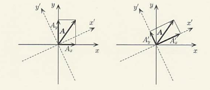
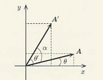
このとき上図のように、基底ベクトルについては座標軸と同じように回転するが、成分については右側にもあるように逆回転をさせたときのものと同じになる（このときベクトル自体が変化していないことに注意）。そのため、極座標 $(r,\theta)$ により直交座標系は $$ x=r\cos\theta、 y=r\sin\theta $$
と書けるが、これを角度 $\alpha$ だけ回転すると
$$ x’=r\cos(\theta-\alpha)= r\cos\theta\cos\alpha+r\sin\theta\sin\alpha= x\cos\alpha+y\sin\alpha $$ $$ y’=r\sin(\theta-\alpha)= r\sin\theta\cos\alpha-r\cos\theta\sin\alpha= y\cos\alpha-x\sin\alpha $$
というようになる。また、これから逆変換を求めると以下の通りになる。
$$ x=x’\cos\alpha-y’\sin\alpha、 y=y’\cos\alpha+x’\sin\alpha $$
このことから、偏微分については
$$ \frac{\partial x’}{\partial x}= \cos\alpha、 \frac{\partial x’}{\partial y}= \sin\alpha、 \frac{\partial y’}{\partial x}= -\sin\alpha、 \frac{\partial y’}{\partial y}= \cos\alpha $$ $$ \frac{\partial x}{\partial x’}= \cos\alpha、 \frac{\partial x}{\partial y’}= -\sin\alpha、 \frac{\partial y}{\partial x’}= \sin\alpha、 \frac{\partial y}{\partial y’}= \cos\alpha $$
となることから、成分ベクトルと基底ベクトルの変換式は以下の通りとなる（この場合は同じ形になる）。
$$ \mathrm{d}x’= \cos\alpha\ \mathrm{d}x+\sin\alpha\ \mathrm{d}y、 \mathrm{d}y’= -\sin\alpha\ \mathrm{d}x+\cos\alpha\ \mathrm{d}y $$ $$ \bm{u}_x’= \cos\alpha\ \bm{u}_x+\sin\alpha\ \bm{u}_y、 \bm{u}_y’= -\sin\alpha\ \bm{u}_x+\cos\alpha\ \bm{u}_y $$
ここで、座標変換（座標軸の変更）に対して基底ベクトルは共に同じ方向に変換されているため共変ベクトル、ベクトル成分は逆方向に変換されているため反変ベクトルとなる。より一般的には、これらは添え字を用いて区別されることが多く、
$$ \begin{cases} ・\bm{u}_x、\bm{u}_y \rightarrow \bm{u}_1、\bm{u}_2 &：共変ベクトル（下付き添え字で区別）\ ・\mathrm{d}x、\mathrm{d}y \rightarrow \mathrm{d}x^1、\mathrm{d}x^2 &：反変ベクトル（上付き添え字で区別） \end{cases} $$
というように書けるため、先ほどの式は以下の通りになる。
$$ \mathrm{d}x’^1= \cos\alpha\ \mathrm{d}x^1+\sin\alpha\ \mathrm{d}x^2、 \mathrm{d}x’^2= -\sin\alpha\ \mathrm{d}x^1+\cos\alpha\ \mathrm{d}x^1 $$ $$ \bm{u}‘_1= \cos\alpha\ \bm{u}_1+\sin\alpha\ \bm{u}_2、 \bm{u}’_2= -\sin\alpha\ \bm{u}_1+\cos\alpha\ \bm{u}_1 $$
また、この表記を用いることでベクトル $\bm{s}$ に関する式も
$$ \mathrm{d}\bm{s}= \sum_{\mu=1}^2\mathrm{d}x^\mu\bm{u}\mu= \sum{\mu=1}^2\mathrm{d}x’^\mu\bm{u}‘\mu $$ $$ \mathrm{d}\bm{s}\cdot\mathrm{d}\bm{s}= (\mathrm{d}\bm{s})^2= \sum{\mu,\nu=1}^2 (\bm{u}\mu\cdot\bm{u}\nu) \mathrm{d}x^\mu\mathrm{d}x^\nu= \sum_{\mu,\nu=1}^2 (\bm{u}’\mu\cdot\bm{u}‘\nu) \mathrm{d}x’^\mu\mathrm{d}x’^\nu $$ $$ \mathrm{d}x’^\mu= \sum_{\nu=1}^2 \left( \frac{\partial x’^\mu}{\partial x^\nu} \right) \mathrm{d}x^\nu、 \mathrm{d}x^\nu= \sum_{\mu=1}^2 \left( \frac{\partial x^\nu}{\partial x’^\mu} \right) \mathrm{d}x’^\mu $$ $$ \bm{u}‘\mu= \sum{\nu=1}^2 \left( \frac{\partial x^\nu}{\partial x’^\mu} \right) \bm{u}\nu、 \bm{u}\nu= \sum_{\mu=1}^2 \left( \frac{\partial x’^\nu}{\partial x^\mu} \right) \bm{u}’_\mu $$
というように総和を用いた形で表記されるが、上付き文字と下付き文字が同じ添え字がついているものというのは決まって総和になっていることを踏まえて、よく総和の記号を省略した記法（Einsteinの縮約記法）が用いられる。
$$ \mathrm{d}\bm{s}= \mathrm{d}x^{\mu}\bm{u}\mu= \mathrm{d}x’^{\mu}\bm{u}‘\mu、 (\mathrm{d}\bm{s})^2= (\bm{u}\mu\cdot\bm{u}\nu) \mathrm{d}x^{\mu}\mathrm{d}x^{\nu}= (\bm{u}’\mu\cdot\bm{u}‘\nu) \mathrm{d}x’^{\mu}\mathrm{d}x’^{\nu} $$ $$ \mathrm{d}x’^\mu= \left( \frac{\partial x’^\mu}{\partial x^\nu} \right) \mathrm{d}x^\nu、 \mathrm{d}x^\nu= \left( \frac{\partial x^\nu}{\partial x’^\mu} \right) \mathrm{d}x’^\mu、 \bm{u}‘\mu= \left( \frac{\partial x^\nu}{\partial x’^\mu} \right) \bm{u}\nu、 \bm{u}\nu= \left( \frac{\partial x’^\nu}{\partial x^\mu} \right) \bm{u}’\mu $$
また、基底ベクトル同士の内積は座標系の各地点の形状を示す重要な量（Riemann計量）であるため、
$$ g_{\mu\nu}=\bm{u}\mu\cdot\bm{u}\nu、 g’{\mu\nu}=\bm{u}‘\mu\cdot\bm{u}’_\nu $$
と表記して、内積のほうも以下のように表記されることが多い。
$$ (\mathrm{d}\bm{s})^2= g_{\mu\nu} \mathrm{d}x^{\mu}\mathrm{d}x^{\nu}= g’_{\mu\nu} \mathrm{d}x’^{\mu}\mathrm{d}x’^{\nu} $$
ここで注意として、$\mathrm{d}x$ は反変ベクトルとなるが $x$ は必ずしも反変ベクトルとなるとは限らないことに注意する必要がある。実際、回転座標ではどちらも同じ形になっていることからもうかがえる。また、前回でも出てきた斜交座標について
$$ x’ = x - y、 y’ = \sqrt{2}y \ \leftrightarrow\ x = x’+\frac{1}{\sqrt{2}}y’、 y = \frac{1}{\sqrt{2}}y’ $$
というように変換すると、共変ベクトルと反変ベクトルは $$ x’_1= \left( \frac{\partial x}{\partial x’} \right) x_1+ \left( \frac{\partial y}{\partial x’} \right) x_2= x_1、 x’_2= \left( \frac{\partial x}{\partial y’} \right) x_1+ \left( \frac{\partial y}{\partial y’} \right) x_2= \frac{1}{\sqrt{2}}x_1+ \frac{1}{\sqrt{2}}x_2 $$ $$ x’^1= \left( \frac{\partial x’}{\partial x} \right) x^1+ \left( \frac{\partial x’}{\partial y} \right) x^2= x^1-x^2、 x’^2= \left( \frac{\partial y’}{\partial x} \right) x^1+ \left( \frac{\partial y’}{\partial y} \right) x^2= \sqrt{2}x^2 $$
となるため、以下の図からも分かるように反変ベクトルであることが分かる。
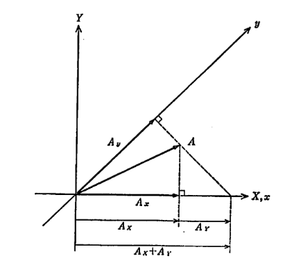
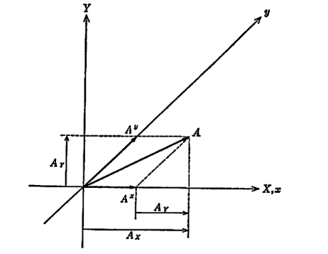
ここで、共変ベクトルについては各座標系に垂線を引いて読み取った値であることから、以下のような式が成り立つことが予想される。
$$ x_1=\bm{s}\cdot\bm{e}_x、 x_2=\bm{s}\cdot\bm{e}_y、 x’_1=\bm{s}\cdot\bm{e}‘_x、 x’_2=\bm{s}\cdot\bm{e}’_y $$
この関係は曲がっている座標系でも微小な範囲では斜交座標系であることから、以下の式が成り立つ。 $$ \mathrm{d}x_1=\mathrm{d}\bm{s}\cdot\bm{u}_1、 \mathrm{d}x_2=\mathrm{d}\bm{s}\cdot\bm{u}_2、 \mathrm{d}x’_1=\mathrm{d}\bm{s}\cdot\bm{u}‘_1、 \mathrm{d}x’_2=\mathrm{d}\bm{s}\cdot\bm{u}’_2 $$
例えば一つ目の成分については
$$ \mathrm{d}x_1= (\mathrm{d}x^\mu\bm{u}_\mu)\cdot\bm{u}1= (\bm{u}\mu\cdot\bm{u}1)\mathrm{d}x^\mu= g{\mu 1}\mathrm{d}x^\mu $$
というように共変ベクトルにRiemann計量を適用した形になっていることになる。このことから、
$$ \mathrm{d}x_\nu= g_{\mu\nu}\mathrm{d}x^\mu \rightarrow (\mathrm{d}\bm{s})^2= \mathrm{d}x_\nu\mathrm{d}x^\nu $$
というように内積の関係は共変ベクトルと反変ベクトルの積で書けることになる。実際に、
$$ g’{\mu\nu} \mathrm{d}x’^{\mu}= \left( \frac{\partial x^\lambda}{\partial x’^\mu} \right) \left( \frac{\partial x^\xi}{\partial x’^\nu} \right) \left( \frac{\partial x’^\mu}{\partial x^\eta} \right) g{\lambda\xi} \mathrm{d}x^\eta= \delta_{\eta}^{\lambda} \left( \frac{\partial x^\xi}{\partial x’^\nu} \right) g_{\lambda\xi} \mathrm{d}x^\eta= \left( \frac{\partial x^\xi}{\partial x’^\nu} \right) g_{\lambda\xi} \mathrm{d}x^\lambda $$
というように、$g_{\lambda\xi}\mathrm{d}x^\lambda$ が共変ベクトルのふるまいをすることからもうかがえる。また、逆変換についてもRiemann計量の逆数
$$ \mathrm{d}x^\mu= g_{\mu\nu}^{-1}\mathrm{d}x_\nu $$
によりかけるが、これだと縮約の規則にあてはまらないので $g_{\mu\nu}^{-1}=g^{\mu\nu}$ として
$$ \mathrm{d}x^\mu= g^{\mu\nu}\mathrm{d}x_\nu $$
とかく。この $g_{\mu\nu}$ あるいは $g^{\mu\nu}$ が特殊相対性理論から一般相対性理論に移るときに便利なものであるため、次回ではこれを用いて、これがどのように行われるかを見ていくことにする。
特殊相対性理論から一般相対性理論へ
特殊相対性理論から一般相対性理論へ
特殊相対性理論では、座標系の変換としてLorentz変換が利用されていた。
$$ x’=\gamma(x-\beta w)、 y’=y、 z’=z、 w’=\gamma(w-\beta x)、 $$ $$ x=\gamma(x’+\beta w’)、 y=y’、 z=z’、 w=\gamma(w’+\beta x’)、 $$ $$ w=ct、 w’=ct’、 \beta=\frac{V}{c}、 \gamma=\frac{1}{\sqrt{1-\beta^2}} $$
このときは反変ベクトルとなるため、以下の通りになる（$w$ は時間を含む特別な変数なので、あえて $x^0$ としている）。
$$ x’^1=\gamma(x^1-\beta x^0)、 x’^2=x^2、 x’^3=x^3、 x’^0=\gamma(x^0-\beta x^1) $$ $$ x^1=\gamma(x’^1+\beta x’^0)、 x^2=x’^2、 x^3=x’^3、 x^0=\gamma(x’^0+\beta x’^1) $$
一方で、運動方程式についても
$$ \frac{\mathrm{d}\bm{p}}{\mathrm{d}\tau}= \bm{f}、
\bm{p}=
\frac{m_0\bm{v}}
{\sqrt{1-\frac{\bm{v}^2}{c^2}}}、
\bm{f}=
\frac{\bm{F}}{\sqrt{1-\frac{\bm{v}^2}{c^2}}}、
\mathrm{d}\tau=
\sqrt{1-\frac{\bm{v}^2}{c^2}}
\mathrm{d}t
$$ $$ \frac{\mathrm{d}E_K}{\mathrm{d}\tau}= (\bm{f}\cdot\bm{v})、 E_K= \frac{m_0c^2} {\sqrt{1-\frac{\bm{v}^2}{c^2}}} $$
と書けたわけだが、ここで速度ベクトルと力は反変ベクトルの形で
$$ u^0=c、 u^1=v_x、 u^2=v_y、 u^3=v_z $$ $$ F^0=\frac{1}{c}(\bm{F}\cdot\bm{v})、 F^1=F_x、 F^2=F_y、 F^3=F_z $$
というように書けるので、運動量と力は以下の通りにかける。
$$ p^\mu= \frac{m_0u^\mu} {\sqrt{1-\frac{\bm{v}^2}{c^2}}}、 f^\mu= \frac{F^\mu}{\sqrt{1-\frac{\bm{v}^2}{c^2}}}、 (\mu=0,1,2,3) $$
書くと以下の通りになる。
$$ \frac{\mathrm{d}p^\mu}{\mathrm{d}\tau}= f^\mu、 p^\mu= \frac{m_0v^\mu} {\sqrt{1-\frac{\bm{v}^2}{c^2}}} $$
ここで、固有時に関して
$$ \mathrm{d}\tau= \mathrm{d}t’ \sqrt{1-\frac{\bm{v’}^2}{c^2}}= \mathrm{d}t \sqrt{1-\frac{\bm{v}^2}{c^2}} $$
となっていたわけだが、これを少し整理してみると反変ベクトルにより
$$ (c\mathrm{d}\tau)^2= (\mathrm{d}x’^0)^2- (\mathrm{d}x’^1)^2- (\mathrm{d}x’^2)^2- (\mathrm{d}x’^3)^2= (\mathrm{d}x^0)^2- (\mathrm{d}x^1)^2- (\mathrm{d}x^2)^2- (\mathrm{d}x^3)^2 $$
というように書けるため、ちょうど微小ベクトルの内積の形で不変な形をしていることから
$$ (\mathrm{d}\bm{s})^2=(c\mathrm{d}\tau)^2= \eta_{\mu\nu}\mathrm{d}x^{\mu}\mathrm{d}x^{\nu}= \eta_{\mu\nu}\mathrm{d}x’^{\mu}\mathrm{d}x’^{\nu} $$
というように定義することができる。ここで、$\eta$ はMinkofsky計量と呼ばれるものとなっており、
$$ \eta_{\mu\nu}= \begin{cases} 1 & (\mu,\nu=1)\ -1 & (\mu,\nu=1,2,3) \end{cases} $$
というようになっている。そのため、固有時の方も計量を用いて
$$ \mathrm{d}\tau= \frac{1}{c} \sqrt{\eta_{\mu\nu}\mathrm{d}x^{\mu}\mathrm{d}x^{\nu}}= \frac{1}{c} \sqrt{\eta_{\mu\nu}\mathrm{d}x’^{\mu}\mathrm{d}x’^{\nu}} $$
というようになる。このことから、固有時を通じてRiemann計量を扱うことができるため、一旦運動方程式を一般化してから置き換えることで加速度系の方程式を得ることができると考えられる。そこで、解析力学において運動方程式はラグランジアン $\mathcal{L}$ と一般化座標 $q$ を用いて $$ \frac{\mathrm{d}}{\mathrm{d}t} \left( \frac{\partial\mathcal{L}} {\partial \dot{q}} \right)- \left( \frac{\partial\mathcal{L}} {\partial q} \right)=0 $$ を利用してみると、力がポテンシャル $U$ で記述されるもの（保存力）としたとき $$ \frac{\partial\mathcal{L}}{\partial v_x}= \frac{m_0v_x} {\sqrt{1-\frac{\bm{v}^2}{c^2}}}、 \frac{\partial\mathcal{L}}{\partial v_y}= \frac{m_0v_y} {\sqrt{1-\frac{\bm{v}^2}{c^2}}}、 \frac{\partial\mathcal{L}}{\partial v_z}= \frac{m_0v_z} {\sqrt{1-\frac{\bm{v}^2}{c^2}}} $$ $$ \frac{\partial\mathcal{L}}{\partial x}= -\left( \frac{\partial U}{\partial x} \right)、 \frac{\partial\mathcal{L}}{\partial y}= -\left( \frac{\partial U}{\partial y} \right)、 \frac{\partial\mathcal{L}}{\partial z}= -\left( \frac{\partial U}{\partial z} \right) $$ であるから、ラグランジアンが以下の通りになることが分かる（静止エネルギーがポテンシャルエネルギーの一部のような振る舞いをする）。 $$ \mathcal{L}= -m_0c^2\sqrt{1-\frac{\bm{v}^2}{c^2}}-U \simeq \frac{1}{2}m\bm{v}^2-(m_0c^2+U) $$ 次に、前回でも登場した計量 $g_{\mu\nu}$ により $$ \sqrt{1-\frac{\bm{v}^2}{c^2}}= \frac{1}{c} \left( \frac{\mathrm{d}s}{\mathrm{d}t} \right)、 \frac{\mathrm{d}s}{\mathrm{d}t}= \sqrt{ \eta_{\mu\nu} \frac{\mathrm{d}x^\mu}{\mathrm{d}t} \frac{\mathrm{d}x^\nu}{\mathrm{d}t}} \rightarrow \sqrt{g_{\mu\nu}\dot{x}^\mu\dot{x}^\nu} $$ と置き換えて、改めて運動方程式を記述すると $\dot{s}=\sqrt{g_{\mu\nu}\dot{x}^\mu\dot{x}^\nu}、q=x^\lambda$ として $$ \frac{\partial\mathcal{L}} {\partial \dot{x}^\lambda}= -m_0c \frac{\partial} {\partial \dot{x}^\lambda} \sqrt{ g_{\mu\nu}\dot{x}^\mu\dot{x}^\nu}= -\frac{m_0c}{2\dot{s}} (g_{\lambda\mu}\dot{x}^{\nu}+ g_{\lambda\mu}\dot{x}^{\mu})= -m_0c \left( g_{\lambda\mu} \frac{\mathrm{d}x^{\mu}} {\mathrm{d}s} \right) $$ $$ \frac{\partial\mathcal{L}} {\partial x^\lambda}= -m_0c \frac{\partial} {\partial x^\lambda} \sqrt{ g_{\mu\nu}\dot{x}^\mu\dot{x}^\nu}- \frac{\partial U}{\partial x^\lambda}= -\frac{m_0c\dot{s}}{2} \left( \frac{\partial g_{\mu\nu}} {\partial x^\lambda} \frac{\mathrm{d}x^{\mu}} {\mathrm{d}s} \frac{\mathrm{d}x^{\nu}} {\mathrm{d}s} \right)- \frac{\partial U}{\partial x^\lambda} $$ となる（ここで $g_{\mu\nu}=g_{\nu\mu}$ を利用している）。 以上の結果を上記の運動方程式に代入すると以下のような形になる。 $$ m_0c\dot{s} \left[ \frac{\mathrm{d} g_{\lambda\mu}} {\mathrm{d} s} \frac{\mathrm{d}x^{\mu}} {\mathrm{d}s}+ g_{\lambda\mu} \frac{\mathrm{d}^2x^{\mu}} {\mathrm{d}s^2}- \frac{1}{2} \left( \frac{\partial g_{\mu\nu}} {\partial x^\lambda} \frac{\mathrm{d}x^{\mu}} {\mathrm{d}s} \frac{\mathrm{d}x^{\nu}} {\mathrm{d}s} \right)\right]- \frac{\partial U}{\partial x^\lambda}=0 $$ ここで、計量に関しての微分が $$ \frac{\mathrm{d} g_{\lambda\mu}} {\mathrm{d} s}= \frac{\partial g_{\lambda\mu}} {\partial x^\nu} \frac{\mathrm{d} x^\nu} {\mathrm{d} s} $$ であるため、これを踏まえて整理すると次の通りになる。 $$ m_0c\dot{s} \left[ g_{\lambda\mu} \frac{\mathrm{d}^2x^{\mu}} {\mathrm{d}s^2}+ \left( \frac{\partial g_{\lambda\mu}} {\partial x^\nu}- \frac{1}{2} \frac{\partial g_{\mu\nu}} {\partial x^\lambda} \right) \frac{\mathrm{d}x^{\mu}}{\mathrm{d}s} \frac{\mathrm{d}x^{\nu}}{\mathrm{d}s} \right]- \frac{\partial U}{\partial x^\lambda}=0 $$ 仮に外部からの影響がなく（ $U=0$ ）、 $\dot{s}\neq 0$ であることを踏まえると、 $$ g_{\lambda\mu} \frac{\mathrm{d}^2x^{\mu}} {\mathrm{d}s^2}+ \left( \frac{\partial g_{\lambda\mu}} {\partial x^\nu}- \frac{1}{2} \frac{\partial g_{\mu\nu}} {\partial x^\lambda} \right) \frac{\mathrm{d}x^{\mu}}{\mathrm{d}s} \frac{\mathrm{d}x^{\nu}}{\mathrm{d}s}=0 $$ となるわけだが、ここで以下のように変形する。 $$ \left( \frac{\partial g_{\lambda\mu}} {\partial x^\nu}- \frac{1}{2} \frac{\partial g_{\mu\nu}} {\partial x^\lambda} \right) \frac{\mathrm{d}x^{\mu}}{\mathrm{d}s} \frac{\mathrm{d}x^{\nu}}{\mathrm{d}s}= \frac{1}{2} \left( \frac{\partial g_{\lambda\mu}} {\partial x^\nu}+ \frac{\partial g_{\lambda\nu}} {\partial x^\mu}- \frac{\partial g_{\mu\nu}} {\partial x^\lambda} \right) \frac{\mathrm{d}x^{\mu}}{\mathrm{d}s} \frac{\mathrm{d}x^{\nu}}{\mathrm{d}s} $$ そして、計量の微分を展開してみると $$ \frac{\partial g_{\lambda\mu}} {\partial x^\nu}= \frac{\partial}{\partial x^\nu} (\bm{e}\lambda\cdot\bm{e}\mu)= \frac{\partial\bm{e}\lambda} {\partial x^\nu}\cdot\bm{e}\mu+ \bm{e}\lambda\cdot \frac{\partial\bm{e}\mu} {\partial x^\nu} $$ であり、ここで第１種クリストフェル記号を $$ \Gamma_{\nu\lambda,\mu}= \frac{\partial\bm{e}\lambda} {\partial x^\nu}\cdot\bm{e}\mu= \bm{e}\mu\cdot \frac{\partial\bm{e}\lambda} {\partial x^\nu} $$ というように定義することで、 $$ \frac{\partial g_{\lambda\mu}} {\partial x^\nu}= \Gamma_{\nu\lambda,\mu}+ \Gamma_{\nu\mu,\lambda} $$ となる。同様に、その他の偏微分についても $$ \frac{\partial g_{\lambda\nu}} {\partial x^\mu}= \Gamma_{\mu\lambda,\nu}+ \Gamma_{\mu\nu,\lambda}、 \frac{\partial g_{\mu\nu}} {\partial x^\lambda}= \Gamma_{\lambda\mu,\nu}+ \Gamma_{\lambda\nu,\mu} $$ となるため、以下のような関係が成り立つことが分かる。 $$ \Gamma_{\mu\nu,\lambda}= \frac{1}{2} \left( \frac{\partial g_{\lambda\mu}} {\partial x^\nu}+ \frac{\partial g_{\lambda\nu}} {\partial x^\mu}- \frac{\partial g_{\mu\nu}} {\partial x^\lambda} \right) $$
そして、元の式に $g^{k\lambda}$ をかけることにより以下の形が得られる。 $$ \frac{\mathrm{d}^2x^k} {\mathrm{d}s^2}+ g^{k\lambda} \Gamma_{\mu\nu,\lambda} \frac{\mathrm{d}x^{\mu}}{\mathrm{d}s} \frac{\mathrm{d}x^{\nu}}{\mathrm{d}s}=0 $$ これは第２種クリストッフェル記号を用いて $$ \Gamma^{k}{\mu\nu}= g^{k\lambda} \Gamma{\mu\nu,\lambda}= \frac{1}{2}g^{k\lambda} \left( \frac{\partial g_{\lambda\mu}} {\partial x^\nu}+ \frac{\partial g_{\lambda\nu}} {\partial x^\mu}- \frac{\partial g_{\mu\nu}} {\partial x^\lambda} \right) $$ により、次の測地線方程式の形で記載される。 $$ \frac{\mathrm{d}^2x^k} {\mathrm{d}s^2}+ \Gamma^{k}{\mu\nu} \frac{\mathrm{d}x^{\mu}}{\mathrm{d}s} \frac{\mathrm{d}x^{\nu}}{\mathrm{d}s}=0 $$ この式は物体がRiemann空間内を最短距離で通るということを前提にして求められるもので、例として点Aから点Bへ物体が移動するものとすると $$ s=\int_A^B\mathrm{d}s= \int_A^B \frac{\mathrm{d}s}{\mathrm{d}t} \mathrm{d}t= \int_A^B \sqrt{g{\mu\nu}\dot{x}^\mu\dot{x}^\nu} \mathrm{d}t $$ が最小となる（$\delta s=0$）ときの関係式からも確認できる。特殊相対性理論においては、$g_{\mu\nu}=\eta_{\mu\nu}$（Lorentz変換）とするとクリストッフェル記号は0となり $$ \frac{\mathrm{d}^2x^k} {\mathrm{d}s^2}=0、 \frac{\mathrm{d}s}{\mathrm{d}t}= \sqrt{ \eta_{\mu\nu} \dot{x}^{\mu} \dot{x}^{\nu} }= \sqrt{c^2-\bm{v}^2} $$ となるが、ここで $s$ の時間微分に関して固有時 $\tau$ を $$ \mathrm{d}\tau= \frac{\dot{s}}{c}\mathrm{d}t= \frac{\mathrm{d}s}{c}= \sqrt{1-\frac{\bm{v}^2}{c^2}} \mathrm{d}t $$ とおくと、先程測地線方程式に $m_0c\dot{s}$ がかかっていたことを踏まえて $$ m_0c\dot{s} \frac{\mathrm{d}^2x^k}{\mathrm{d}s^2}=0 \rightarrow \frac{\mathrm{d}p^k}{\mathrm{d}\tau}=0、 \left( p^k= m_0 \frac{\mathrm{d}x^k} {\mathrm{d}\tau} \right) $$ というように、相対論的力学で登場した運動方程式で力を0とした式が求められることが分かる。ここでの $p^k$ は4元運動量呼ばれており、右辺に力がある場合には $f^k$ （4元力）となる。このように、今までは速度に応じて質量が変化するものと思われてきたが、実は時間の進み方が変化していたことが分かる。
測地線方程式において、第二項目を右辺に移項し両辺に $m_0c$ をかけると $p^k=m_0cv^k$ であるため $$ \frac{\mathrm{d}p^k} {\mathrm{d}\tau}= -\frac{1}{m_0c}\Gamma^{k}_{\mu\nu} p^{\mu}p^{\nu} $$ となるが、ここで右辺が慣性力によるものになると思われる。そこで、まずは簡単に地球上の重力を考慮して
$$ \frac{\mathrm{d}p^3} {\mathrm{d}t}= -\frac{Gm_0M_0}{(x^3+R_0)^2} $$
量子力学
物理学の中に量子力学という分野ができたのは比較的新しいことである。それはPlanckが今世紀のはじめ（1900年）にいわゆるエネルギー量子というものを発見したときにはじまると考えてよい。前世紀の終わりごろまで物理学は主に目に見え耳で聞いて手に触れるような世界の自然現象をその対象にしていた。ところが世紀の終わりに近いころ、陰極線、X線或いは放射能などという珍しい現象が発見されるようになって、物理学の領域は直接我々の感覚に触れる世界から、分子とか原子とかという小さな世界に食い込んでいったのである。ところで、これらの小さな世界を支配している物理法則は当時のもので説明できるものであるか。実験物理学者はこの問いに答えるために、新しく発見された珍しい現象の研究に胸を躍らせながら従事した。一方で、18世紀後半にイギリスで産業革命が起こり鉄を精錬する溶鉱炉が飛躍的に進歩したが、よりよい鉄を作るためには温度を正確に測ることが重要であった。この温度を理論的に説明するため、一部の理論物理学者は「空洞輻射の問題」としてこの問いに答える手がかりを求めて、この問題を解くのに尽力することとなった。
前世紀においても小さな（分子や原子の）世界の研究はMaxwellやBoltzmannによって大規模に行われていた。これらの人々は分子や原子の世界の法則も、ただ寸法が小さいだけで大きな世界のものそのままであると仮定して、遠い昔ギリシャの原子論者の想像していた原子論を数学的に築き上げようとしていた。そしてその努力は非常な成功をおさめたのである。この目に見える世界の法則というのはNewtonの力学とMaxwellの電磁気学のことである。そして分子や原子はこの力学に従って運動し、この電磁気学に従って光を射出したりするものと考える。目に見える物質は非常にたくさんのこれらの分子や原子からできていて、それらがこの法則に従って複雑に運動し、それらの統括的な効果が我々の目に見える物の性質として現れると考えるのである。
この統括的な効果を取り扱うには統計的な方法を用いなければいけない。我々の目に見えるのは一つ一つの分子や原子の運動、それの出し入れする光ではなく、多くの分子や原子が行うそれらの現象のある種の統計的平均である。例えば、入れ物に入れられたたくさんのガス分子は、容器の中を飛び回るうちに絶えず壁にぶつかって、その度にこれに衝撃的な力を及ぼすものであるが、我々がガスの圧力として観測するのはこの力の平均値（この時には時間的平均値と考えてよい）である。また我々が温度として観測するのは、その分子の一自由度当たりの運動エネルギーの平均値なのである。
ところで、力学と電磁気学の法則がそのまま小さな世界でも成り立つと仮定して統計的考察を行うこの原子論は、物質の色々な性質を説明するうえでかなり成功したけれども、空洞輻射の問題では全くうまくゆかない。その結果、小さい世界の物理法則としてNewton力学やMaxwellの電気学をそのまま持ってくることが疑われ始めた。すなわち、この空洞輻射の問題を解決するためには、どうしてもこれらの法則と異なったものを土台として新しい物理的世界像を築かねばならぬ結果となったのである。この新しい理論によりNewton力学やMaxwell電磁気学は古典理論という地位を有するようになり、後に量子力学として理論も発展していくのである。
空洞輻射の理論
空洞輻射の理論
空洞輻射の問題とは一口に言えばこうである。
「熱せられた物体は温度ごとにどういう色の光を出すであろうか」
物体を熱したとき出る光は、温度の低い時には赤い色をしているが、温度が上がるにつれて次第に白い色を呈するようになる。この現象を原子論的に説明するとどういうことになるかという問題である。この問題を物理学的に精密に言い表し、且つ取り扱いやすい形に理想化すると次のようにいってもよい。ある物体が壁で囲まれた室（空洞）の中にあったとする。この物体を熱すると光を発するのだが、その光により壁の温度も変化する。そして、空洞内が熱平衡になり温度 $T$ になり特定の光を生じるようになる。この光の強度（スペクトル）は温度 $T$ だけに関係し、壁の物質、空洞の形、あるいは大きさによらないことがまずKirchhoffによって証明された。
次にスペクトルがどのように温度に依存するか考察するにあたって、統計力学において一自由度あたり $1/2kT$ のエネルギーが分配されるという法則（エネルギー等分配則）が利用できると思われる。そこで、光が電磁波であり一方向にあたり電場と磁場によるエネルギーを1つずつ有すること、横波で2つの自由度が別に存在することから $2kT(=1/2kT\times 4)$ 分のエネルギーを有すると考えてみる。また、スペクトルが空洞の形によらないことから一辺 $L$ の立方体の部屋を仮定して、この中で電磁波がどのようになるかというと固定端反射をすることから波長は以下のように制限される。
$$ \lambda=\frac{2L}{n} (n=1,2,3,\cdots) $$
三次元の場合だと、振動数において
$$ \nu^2=\nu_x^2+\nu_y^2+\nu_z^2 $$
というように各成分の二乗和で書けるため、先ほどの波長の式を
$$
\nu_x=\frac{cn_x}{2L}、
\nu_y=\frac{cn_y}{2L}、
\nu_z=\frac{cn_z}{2L}
(n_x,n_y,n_z=1,2,3,\cdots)
$$
としてこれらの式を代入すると以下のようになる。
$$ \nu^2= \left(\frac{c}{2L}\right)^2(n_x^2+n_y^2+n_z^2) $$
一見すると離散的な値をとっているため一概には計算ができないが、ここで $L\to\infty$ として振動数が連続していると仮定すると、振動数 $\nu$ と $\nu+\mathrm{d}\nu$ での自由度は
$$ \left(\frac{c}{2L}\right)^3 $$
につき1自由度あることから以下のようになる。
$$ \frac{1}{8} \frac{4\pi\nu^2\mathrm{d}\nu} {\left(\frac{c}{2L}\right)^3}= \frac{4\pi L^3}{c^3}\nu^2\mathrm{d}\nu $$
スペクトルが空洞の形によらないことを踏まえて、エネルギー密度を求めると以下のようになる。
$$ u\mathrm{d}\nu=\frac{1}{L^3}\left( \frac{4\pi L^3}{c^3}\nu^2\mathrm{d}\nu\times 2kT \right)= \frac{8\pi kT}{c^3}\nu^2\mathrm{d}\nu $$
これがRayleigh–Jeansの法則と呼ばれるものとなっている。実はこの式は低周波数でしか成立していないが、これは先ほど $L\to\infty$ としたことで波長、振動数が $\nu\to 0\ (\lambda\to\infty)$ となることからもうかがえる。一方で、高振動数の領域に対してはWienが提唱した以下の式（Wienの輻射式）が成り立つが知られている。
$$ u= \frac{8\pi k\alpha}{c^3} e^{-\alpha\nu/T}\nu^3、 (\alpha：定数) $$
ここで式の導出過程を述べていないが、これは導出に用いられた仮定が不自然なものであり、なおかつMaxwellの電磁気学を全く無視していて説明するには不適切と判断したためである。
以上のことを踏まえて、Planckは低振動数でRayleigh–Jeansの法則、高振動数でWienの輻射式が成り立つような内挿式（Planckの公式）を導出した。
$$ u= \frac{8\pi k\alpha}{c^3} \frac{1}{e^{\alpha\nu/T}-1}\nu^3 $$
ここで、定数に関して $h=k\alpha$（Planck定数） に置き換えることで、以下のように $kT$ を含んだ形にまとめることができる。
$$ u= \frac{8\pi h}{c^3} \frac{1}{e^{h\nu/kT}-1}\nu^3、 （h=6.626\times 10^{-34}\ \mathrm{Js}） $$
この式において、$h\nu << kT（\nu\to 0）$とすると
$$ u\simeq \frac{8\pi h}{c^3} \frac{1}{(1+h\nu/kT)-1}\nu^3= \frac{8\pi kT}{c^3}\nu^2 $$
というようになり、反対に $h\nu >> kT（\nu\to\infty）$ では $e^{h\nu/kT}>>1$ であるため
$$ u\simeq \frac{8\pi h}{c^3} \frac{1}{e^{h\nu/kT}}\nu^3= \frac{8\pi h}{c^3} e^{-h\nu/kT}\nu^3 $$
と先ほどと同様な式が得られることが分かる。ここで、この式の意味を考えるため、
$$ u= \frac{8\pi\nu^2}{c^3} \frac{h\nu}{e^{h\nu/kT}-1} $$
とすると、$kT$ の代わりに別の形になっていることが分かる。この部分というのは、電磁波のハミルトニアンが振動体の形で書けることから自由度 $f$ に対して
$$ \mathcal{H}= \sum_{i=1}^{f} \left( aq_i^2+bp_i^2 \right) $$
となり、この分の分配関数と期待値が
$$ Z= \frac{1}{f!h^{f}} \int\cdots\int e^{-\beta \mathcal{H}} \mathrm{d}q_1\cdots\mathrm{d}q_f \mathrm{d}p_1\cdots\mathrm{d}p_f= \frac{1}{f!} \left( \frac{\pi}{h\beta\sqrt{ab}} \right)^{f} $$ $$ \braket{\mathcal{H}}= -\frac{\partial}{\partial\beta} \ln Z=fkT、 \left( \beta=\frac{1}{kT} \right) $$
であるため、$kT$ が出てきているということになる（分配関数を除けば、1自由度の場合を $f$ 倍したものと同じ）。そのため、ここで1自由度あたりのエネルギーを
$$ U_1=nh\nu、(n:自然数) $$
という離散的な値をとる（エネルギーの最小単位いわゆる量子が $h\nu$ である）と仮定すると
$$ Z= \sum_{n_1,\cdots,n_f} \mathcal{W}(n_1,\cdots,n_f) e^{-(n_1+\cdots+n_f)\beta h\nu} $$
となる。ここで各準位ごとに対象の数が $N_0,\cdots,N_n,\cdots$ だけあるとすると
$$ n_1+\cdots+n_f= N_1+2N_2+\cdots+nN_n+\cdots $$
であり、状態数も区別がつかないことを考慮して
$$ \mathcal{W}(n_1,\cdots,n_f)= \frac{f!}{N_0!N_1!\cdots N_n!\cdots} $$
となるため、多項定理より以下の通りになる。
$$ Z= \sum_{N_0+N_1+\cdots=f} \frac{f!}{N_0!N_1!\cdots N_n!\cdots} e^{-(0N_0+\cdots+nN_n+\cdots) \beta h\nu}= \left( \sum_{n=0}^{\infty} e^{-n\beta h\nu} \right)^f $$
このときは、分配関数も一体の分配関数を $N$ 乗したものとなっており、
$$ Z_1= \sum_{n=0}^{\infty} e^{-n\beta h\nu}= \frac{1}{1-e^{-\beta h\nu}} $$
であるから、最終的なエネルギーの期待値は以下の通りになる。
$$ \braket{U}= -\frac{\partial}{\partial\beta} \ln Z= -f\frac{\partial}{\partial\beta} \ln Z_1= \frac{fh\nu}{e^{h\nu/kT}-1} $$
そのため、エネルギーが1自由度ごとに等分配されるわけではなく、振動数に応じて分配されるエネルギーに制限があることになる。このように、エネルギーの最小単位が $h\nu$ であるという仮説のことをエネルギー量子仮説と呼び、この仮説から導かれた式はPlankの式と言われている。
光の粒子仮説
光の粒子仮説
前回は電磁波のエネルギーの最小単位が $h\nu$ であると仮定することで、Planckの公式を導出していた。ただ、これはエネルギーが質量と等価であることを踏まえると、電磁波は $h\nu$ のエネルギーを持つ粒子として考えることもできると予想される。それを用いてEinsteinは、光が $h\nu$ のエネルギーを持つ粒子としてもふるまうもの（光量子仮説）として光電効果の説明を行った。 光電効果とは高い振動数の光線（紫外線域）いわゆるX線のようなものを金属などの物質の表面にあてると、そこから電子が飛び出してくる現象である。実験を行ったLenardにより、以下のことが確認されている。
-
飛び出る電子の一つ一つのエネルギーを測ってみると、それは照らす輻射線の強さに無関係である。
-
照らす輻射線の強さを大きくすると、飛び出る電子の個数（単位時間あたりの個数、出現頻度）が多くなるだけである。
-
飛び出る電子一つ一つのエネルギーは照らす輻射線の色に関係する。すなわちその輻射線の波長が短いほどエネルギーの大きな電子が飛び出してくる。
これに対して、先ほどの光量子仮説を適用すると電子を飛び出させるのに必要なエネルギーを $W$（仕事関数） としたときに電子のエネルギーは $$ E=h\nu-W $$ と書ける。そのため、実験で得られた事実と矛盾しないことが分かる。（1・3：波長、振動数にしか依存しない、2：強さ（量子の個数）が大きくなれば電子の数も比例して多くなる）このことは、後にMillikanが行った実験においても確かめられている。
また、光の粒子性が現れるもう一つの現象として1923年にComptonによって発見されたCompton効果がある（ここで発見されたという意味はその現象が光の粒子性によるもであるということが発見されたという意味で、現象自体は以前より知られていたものとなっている）。X線を物体にあてるとそれが四方に散乱されることはよく知られている。ところが、このとき単色のX線を用いて実験を行い、この散乱されたX線の波長を詳しく測ってみると、その一部は入射X線と同じ波長を持っているが、その外に入射するX線よりも長いものがあるという事実が知られていたのである。このX線の散乱について有名なThomsonの理論が存在していたが、散乱されたX線の波長は入射したものと同じである必要があり、事実とは異なるものとなっていた。そこで、Comptonは光の粒子説を用いてきわめて単純に説明できることを示したのである。具体的には、まず光は $h\nu$ という量子としてみなせることを述べたが、同時に運動量も有している。これについては、空洞輻射において光が壁に反射する際に圧力を及ぼすことから伺える。実際、光が等方的に壁に当たる場合、圧力 $P$ はエネルギー密度 $u$ と $$ P=\frac{1}{3}u $$ という関係にあり、Stefanの法則やWienのずれの法則を導くときの土台となっている。さらに、気体分子運動論にて圧力は運動量により $$ P=n\braket{c_{\perp}p_{\perp}}= \frac{N}{V} \braket{c_{\perp}p_{\perp}} $$ であり、 $h\nu$ の粒子が $N$ 個ある場合は $$ uV=Nh\nu \rightarrow u=\frac{N}{V}h\nu $$ となることから、以下の式が得られる。 $$ \braket{c_{\perp}p_{\perp}}= \frac{1}{3}h\nu $$ さらに、運動量と速度の方向が同じであることと 等方的にエネルギーが利用されることを踏まえて $$ c_{\perp}= c\left( \frac{p_{\perp}}{p} \right)、 \braket{p_{\perp}^2}= \frac{1}{3}\braket{p^2} $$ となることや、今は振動数 $\nu$ のみ考えていることから $$ \frac{1}{3}cp=\frac{1}{3}h\nu \rightarrow p=\frac{h\nu}{c} $$ となることが分かる。このことについては、特殊相対性理論からも推測できる。このときは、物体が光速では質量を持てない（静止質量が $0$ ）ことからエネルギーと運動量の関係式より $$ (h\nu)^2=(m_0c^2)^2+(cp)^2 \rightarrow p=\frac{h\nu}{c} $$ というようになる。
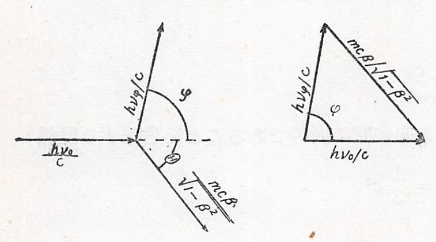
運動量保存の法則により、 $$ \frac{h\nu_0}{c}= \frac{h\nu_{\phi}}{c}\cos\phi+ \gamma m_{e}v\cos\alpha、 \left( \gamma= \frac{1}{\sqrt{1-(v/c)^2}} \right) $$ $$ 0= \frac{h\nu_{\phi}}{c}\sin\phi- \gamma m_{e}v\sin\alpha $$ であることから、 $$ \left( \frac{h\nu_0}{c}- \frac{h\nu_{\phi}}{c}\cos\phi \right)^2= (\gamma m_{e}v\cos\alpha)^2 $$ $$ \left( \frac{h\nu_{\phi}}{c}\sin\phi \right)^2= (\gamma m_{e}v\sin\alpha)^2 $$ となるため、これら二式を足し合わせる。 $$ \left( \frac{h\nu_0}{c} \right)^2- 2\frac{h^2\nu_0\nu_{\phi}}{c^2} \cos\phi+ \left( \frac{h\nu_{\phi}}{c} \right)^2= (\gamma m_{e}v)^2 $$ さらに、エネルギー保存則から $$ h\nu_0+m_{e}c^2= h\nu_\phi+\gamma m_{e}c^2 $$ であり、両辺を二乗すると $$ (h\nu_0-h\nu_\phi+m_{e}c^2)^2= (\gamma m_{e}c^2)^2 $$ $$ v^2= c^2 \left[ 1- \left( \frac{m_{e}c^2} {h\nu_0-h\nu_\phi+m_{e}c^2} \right)^2 \right] $$ であるため、右辺は以下の通りになる。 $$ (\gamma m_{e}c^2)^2= \frac{1}{c^2} \left[ (h\nu_0-h\nu_\phi+m_{e}c^2)^2- (m_{e}c^2)^2 \right] $$ そのため、式を整理すると最終的に以下の式が得られる。 $$ \nu_\phi= \frac{\nu_0} {1+\frac{2h\nu_0}{m_ec^2}\sin^2\frac{\phi}{2}} $$ これが散乱されたX線の振動数であり、$\phi$ によらず $\nu_\phi<\nu_0$ と小さくなること及び実験とも一致した結果が得られる。ただ、この形よりも波長の形により $$ \lambda_\phi= \lambda_0+ \left( \frac{h}{m_ec} \right) 2\sin^2\frac{\phi}{2} $$ と表示した方が式が容易になり、ここでの $h/m_ec$ はCompton波長と呼ばれている。 $$ \frac{h}{m_ec}= 2.42\times 10^{-13}\ \mathrm{m}= 0.0242\ \mathrm{\AA} $$
電子の波動説
電子の波動説
色々のガスのガイスラー管（蛍光灯の一種）や、いろいろの物質を電極にするアーク燈（ランプ）から出てくる光を分光器でみると、それぞれの物質に特有なスペクトルがみられる。このスペクトルのうち線スペクトルといわれているものは、その物質の原子が射出するものである。この線スペクトルは夫々の物質原子に配列を持っているから、原子の構造をうかがう最も直接なデータである。だからこのスペクトル線の配列の仕方の法則性を求めることは非常に重要なことである。
いろいろな物質のうち水素の発するスペクトルは最も簡単な配列を示している。以下の図は可視部から紫外線部にかけて現れる水素のスペクトルの写真であるが、これを見ただけでもいかにも意味ありげな線の並び方になっている。
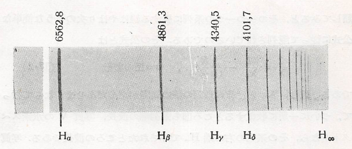
この水素の線の並び方を数式的に表すことに成功したのはスイスの中学校の先生Balmerの手柄である（1885年）。彼は可視部にある4本のスペクトル線 H$\alpha$、H$\beta$、H$\gamma $及び H$\delta$ の波長がそれぞれ $$ \frac{9}{5}h、 \frac{16}{12}h、 \frac{25}{21}h、 \frac{36}{32}h、 （h=3645.6\ \mathrm{\AA}） $$ で表されることをを発見し、これが $$ \lambda= \frac{n^2}{n^2-4}、 （n=3,4,5,6） $$ なる公式にまとめられることに気がついた。これに続いて、スウェーデンのRydbergも他の原子のスペクトルも細かく調べて、より複雑な状況でもいくつかの系列に分類すると、その一つ一つの系列に属する線が以下の公式に従って配列していることを1890年に発見した。 $$ \frac{1}{\lambda}= \frac{1}{\lambda_{\infty}}- \frac{R}{(n+b)^2}、 n=正の整数 $$ ただし、$\lambda_\infty$ とはその系列の線の間隔が段々せまくなって行って、ついに一か所に集約するところ（系列端）の波長であり、上記の図においての右端 H$_\infty$ で示されたところの波長になる。他には、以下の図のようにNaのスペクトルは水素のものと比べて相当複雑であるが、これらの線は主系列、第1副系列、第2副系列という風に分類することで、各系列が上記の公式に従って配置していることが分かる。
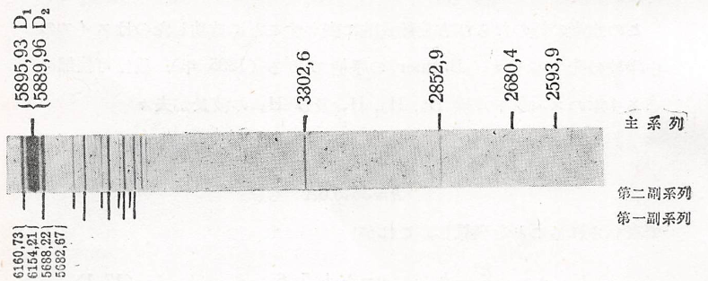
特に、公式中の $R$ は原子の種類によらない不変定数（Rydbergの定数）であり $$ R=109677.691\ \mathrm{cm}^{-1} $$ であり、Balmerの$h$との関係は $R=h/4$ である。これに対して、$b$ は物質ごとに又は系列ごとに異なる値をとるが、一つの系列内では近似的に一定の値を持つ定数である。さらに、Rydbergの研究は進み、系列端においても規則正しく並んでいることから、上記の公式において $$ \frac{1}{\lambda_\infty}= \frac{R}{(m+a)^2}、 （m:正の整数） $$ であることも見出した。そのため、公式はRydbergの公式として以下の形でまとめられる。 $$ \frac{1}{\lambda}= \frac{R}{(m+a)^2}- \frac{R}{(n+b)^2} $$ この公式に従うと、各系列の波長は $$ \begin{cases} ・m=1（Lyman系列、1906年）\ ・m=2（Balmer系列、1885年）\ ・m=3（Paschen系列、1908年）\ ・m=4（Brackatt系列、1922年） \end{cases} $$ というように対応しており、水素の場合で図にまとめると以下のようになる（$m$が4以上の波長は省略している）。
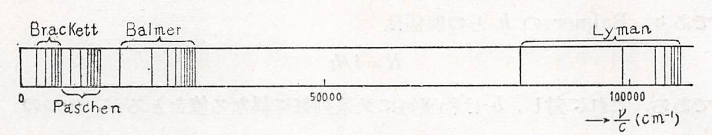
このように、スペクトルの波長は連続しておらず離散的な値をとることが分かる。これについては光の粒子説で述べたことが関係していると考えられる。具体的には、空洞輻射での光のエネルギーが $$ E_n=nh\nu $$ となっていることから、原子においてもエネルギーが離散的な値 $W_n$ しかとらないものとする。また、光電効果において電子は光から $h\nu$ のエネルギーを吸収して起こるわけだが、そのとき電子のエネルギーが増加したと考えると逆にエネルギーが減少して $h\nu$ の光を放出することも予想される。この２つのことから、仮に原子のエネルギーが $W_n$ から $W_m$ に減少し、その分 $h\nu$ の光が放出されたとすると $$ h\nu=W_n-W_m \rightarrow \nu=\frac{W_n-W_m}{h} $$ という関係が成り立つと考えられる（Bohrの振動数関係）。すなわち、あるエネルギー $W_n$ にある間は安定した状態（定常状態）であり、ある特定の作用が起こることで $W_n$ から $W_m$ のような変化（量子的飛躍、状態の遷移）が起こるものとする。すると、水素原子の場合では $$ \frac{1}{\lambda}= \frac{R}{m^2}- \frac{R}{n^2} \leftrightarrow \nu= \frac{Rc}{m^2}- \frac{Rc}{n^2} $$ であるが、整数が逆数をとった形になっており、1項目が端の波長に対応したものであることを踏まえて $m<n$ であるから $$ \frac{1}{m^2} > \frac{1}{n^2} $$ となるが、この形を $W_n$ とすると空洞輻射の場合と逆で整数が大きくなるにつれてエネルギーが減少する形になってしまうため、$W_n$ を以下のように負符号をつけたものにしてみる。 $$ \frac{W_n}{h}=-\frac{Rc}{n^2} \rightarrow W_n=-\frac{Rhc}{n^2} $$ すると、$n$ が大きくなるにつれて0に近づいて連続的に分布するようになるが、ここで連続で分布するようになるというのは古典的な状態に相当していることから、振動数に関する式において まず $m=n-\tau$ とすると $$ \nu= Rc \left( \frac{n^2-m^2}{n^2m^2} \right)= Rc \frac{(n+m)(n-m)}{n^2m^2}= Rc\frac{\tau}{n^3} \frac{(2-\tau/n)}{(1-\tau/n)^2} $$ であるから、$n\to\infty\ (\tau/n\to 0)$ とする近似的に以下の式が得られる。 $$ \nu\simeq\frac{2Rc}{n^3}\tau= \frac{2}{\sqrt{Rch^3}} |W_n|^{3/2}\tau、 (|W_n|=-W_n) $$ 一方で、水素原子は当時電子が円運動をしているものと考えられており、このときのエネルギーは $$ W_n= \frac{1}{2}mv_n^2- \frac{1}{4\pi\epsilon_0} \frac{e^2}{r_n} $$ であり、円運動する条件として $$ \frac{mv_n^2}{r_n}= \frac{1}{4\pi\epsilon_0} \frac{e^2}{r_n^2} $$ を利用すると、速度と動径は以下の通りになる。 $$ v_n=\sqrt{\frac{2}{m}} |W_n|^{1/2}、 r_n= \frac{e^2}{8\pi\epsilon_0} |W_n|^{-1} $$ さらに速度に関して $v_n=2\pi r_n\nu_n$ とおけるため $$ \sqrt{\frac{2}{m}} |W_n|^{1/2}= 2\pi \frac{e^2}{8\pi\epsilon_0} |W_n|^{-1}\nu_n \rightarrow \nu_n= 2\sqrt{ \frac{8\epsilon_0^2}{me^4} } |W_n|^{3/2} $$ そのため、ある範囲 $\tau$ でエネルギーが変化したときに放出する光の振動数は次のようになる。 $$ \nu= 2\sqrt{ \frac{8\epsilon_0^2}{me^4} } |W_n|^{3/2}\tau $$ 以上の考察から、次の関係式が成り立つことが予想される。 $$ \frac{1}{\sqrt{Rch^3}}= \sqrt{ \frac{8\epsilon_0^2}{me^4} } \rightarrow R= \frac{me^4}{8\epsilon_0^2h^3c} $$ 各定数に値を代入すると、$R$ の値が既知のものと一致していることが分かる。また、円運動の際は角運動量 $L_n$ が保存しているので求めてみると、$L_n=mv_nr_n$ であるから $r_n$ と $v_n$ が $$ v_n= \sqrt{\frac{2Rhc}{m}} \frac{1}{n}= \frac{e^2}{2\epsilon_0h} \frac{1}{n}、 r_n= \frac{e^2}{8\pi\epsilon_0Rhc}n^2= \frac{\epsilon_0h^2}{\pi me^2}n^2 $$ となることから、以下のように簡単な形になることが分かる。 $$ L_n=mv_nr_n= \frac{h}{2\pi}n $$ というように、簡単な関係式が導かれる。この関係式はBohrの量子条件と呼ばれ、角運動量が前回のエネルギーと同じように飛び飛びになっていることを意味している。さらに、ここで $mv_n=p_n$ とすると $$ 2\pi r_n=\lambda_n n、 \left( \lambda_n= \frac{c}{\nu_n}= \frac{h}{p_n} \right) $$ と前回の運動量と振動数の関係からおいてみると、電子の軌道の円周がちょうど波長の整数倍になっている（端が閉じた波になっている）ことが考えられる。これは、少しでもずれると波同士で打ち消しあいなくなることから結果的に、この関係を満たす波しかないということになる。これは、de Brogileが提唱した物質波であり、電子も波としての性質を有することを暗に示したものとなっている。
粒子と波動の二重性
粒子と波動の二重性
前回まで電子が波としての性質を有することを述べたが、粒子とされていたものが波でないかという考えは過去に光学にもあった。光学においては光を粒子としてその経路により光の振る舞いを説明していたが、多くの実験も踏まえて光が波であることが実証された。このとき、光学でも幾何光学から波動光学というように移動したわけだが、今回も同じように力学でも粒子から波動に置きかえてみると新しい法則が見つかるのではないかということが推測される。
幾何光学の法則が力学の法則と同じ形をしているということは最小作用の原理のような進んだ理論をまたずとも、すでにNewtonの時代に注目され、Newtonはこれによって光の粒子論を展開しようとしていたのである。最も簡単な具体的な例として光の屈折を考えてみよう。
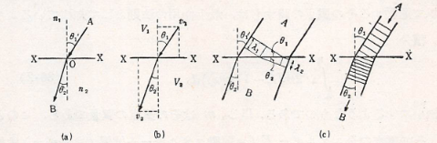
上図に示すように、屈折率 $n_1$ の媒質と $n_2$ の媒質とが 平面$XX$ を境にして接続しているとする。1本の（単色）光線がAからBに進んでいくとき、その進路AOBは、Snellの法則 $$ \frac{\sin\theta_1}{\sin\theta_2}= \frac{n_2}{n_1} $$ を満たす。ただし、$\theta_1$ は入射角、$\theta_2$ は屈折角である。これがこの場合の幾何光学の法則である。これを粒子論的な立場に立つと次のように説明される。光の粒子が媒質Aから媒質Bに入射するとき、その境界面 $XX$ を通過する際、その面に直角な力の作用を受ける。その力は、面に直角であるので粒子の速度の法線成分を変化させる（図の場合では増加する）。同時に、接線成分は変化しないはずなので以下の関係が成り立つ。
$$ v_1\sin\theta_1=v_2\sin\theta_2 \leftrightarrow \frac{\sin\theta_1}{\sin\theta_2}= \frac{v_2}{v_1} $$
当時の考え方としては、位相速度 $u$ と速度 $v$ を同じものとして
$$ \frac{\sin\theta_1}{\sin\theta_2}= \frac{v_2}{v_1}= \frac{u_2}{u_1}= \frac{n_1}{n_2} $$
が得られるため、Snellの法則を満たさず粒子説が否定されていた。ところが、特殊相対性理論により光を粒子として考えた場合は速度ではなく運動量でしか取り扱えないため
$$ p_1\sin\theta_1=p_2\sin\theta_2 \leftrightarrow \frac{\sin\theta_1}{\sin\theta_2}= \frac{p_2}{p_1}= \frac{n_2}{n_1} $$
を満たす条件を考えると、次の比例式（比例定数 $k$ ）が成り立つことが予想される。
$$ n=kp $$
一方で、波として扱った場合にも、Huygensの原理に従って以下の図のように考えることができる。
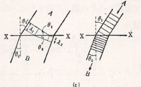
このとき屈折する前後の波長の関係は、媒質1の中での波の波長を $\lambda_1$ 、媒質2の中でのそれを $\lambda_2$ とすると、
$$ \frac{\lambda_1}{\sin\theta_1}= \frac{\lambda_2}{\sin\theta_2} \rightarrow \frac{\sin\theta_1}{\sin\theta_2}= \frac{\lambda_1}{\lambda_2} $$
となる。そのため、屈折率とはその場所での波長に逆比例するものであるといってもよい。すなわち、比例定数 $k’$ を用いて $$ n=\frac{k’}{\lambda} $$ と表わされることになる。そのため、屈折率を通じて運動量と波長が逆比例の関係にあることが予想される（$k’’$：比例定数）。
$$ p=\frac{k’’}{\lambda} $$
以上のように、粒子論的な立場あるいは波動論的な立場で考えることで運動量と波長の逆数が関係していることがうかがえる。このことから、光以外のものについても一般的に二つの側面から考察が可能であると予想できる。すなわち、電流（電子の流れ）というようなものを波動論的立場によって取り扱うことで、波としてみた時の光と同じように干渉や回折を示すことはなかろうか。そこで、Compton散乱の説明でも登場した光の関係式
$$ E=h\nu、 p=\frac{h\nu}{c}=\frac{h}{\lambda} $$
がその他の物質（電子など）でも成り立つものと仮定してみる。ここで、$E,p$ は光子（光を粒子とみなしたときの名称）のエネルギーと運動量、$\nu,\lambda$ は光波（光を波とみなしたときの名称）の振動数と波長である。その上で、電子における屈折がどうなるかを考えてみると、エネルギー $E$ が保存されており、運動量 $p$ も電子の質量 $m$ と速度 $v$ により $p=mv $ と書けるため、位相速度 $u$ は以下の通りになる。
$$ u=\nu\lambda=\frac{E}{p}= \frac{E}{mv} \propto \frac{1}{v} $$
そのため、電子においても屈折に関してはSnellの法則を満たすことが分かる。もう少し簡単な例で自由粒子の場合だと、エネルギーが $E=mv^2/2$ と書けるため、このときの位相速度 $u_p$ は
$$ u_p = \frac{E}{p}=\frac{1}{2}v $$
というようになる。これは、相対論的力学的に書いた場合にも
$$ u_p = \frac{E}{p}=\frac{c^2}{v} $$
という形になる。どちらにせよ電子波の位相速度は電子の速度と異なることになる。一方で、位相速度とは異なる群速度（波が重なったときの全体的な波の移動速度） $v_g$ は角振動数 $\omega$ と波数 $k$ により
$$ v_g=\frac{\partial w}{\partial k} $$
と書けるが、ここで各物理量が
$$ \omega=2\pi\nu=\frac{E}{\hbar}、 k=\frac{2\pi}{\lambda}=\frac{p}{\hbar}、 \left(\hbar=\frac{h}{2\pi}\right) $$
となるため、エネルギーが運動量で
$$ E=\frac{p^2}{2m}、 E^2=(pc)^2+(m_0c^2)^2 $$ と書けるため、群速度は以下の通りになる。
$$ v_g=\frac{\partial E}{\partial p}= \frac{p}{m}=v、 v_g=\frac{\partial E}{\partial p}= c^2\frac{p}{E}=\frac{c^2}{u_p}=v $$
波動力学
波動力学
ここまでに物体には粒子と波の二面性があることを述べたが、では実際に電子のように粒子と考えていたものを波とみなすとどうなるか見てみよう。まず、粒子を波として考えられるようになったものに光があり、幾何光学においてFermatの原理を満たすことで知られている。
$$ S=\int_A^B n\ \mathrm{d}s= \int_A^B nv\ \mathrm{d}t $$
ここで、屈折率は位相速度により
$$ n=\frac{c}{u_p}=\frac{c}{E}p $$
というように書けるため、エネルギーが保存される場合は運動量に比例することが分かる。それを踏まえて、$p=mv$ と置いてみると
$$ S= \frac{c}{E} \int_A^B mv^2\ \mathrm{d}t= \frac{2c}{E} \int_A^B K\ \mathrm{d}t $$
というようになる。これはモンペるてゅーいの原理に相当する。あるいは、これを別の書き方で表現すると、
$$ S=\frac{c}{E} \int_A^B pv\mathrm{d}t= \frac{c}{E}\int_A^B p\ \mathrm{d}q $$
ともかけるため、位相空間上の積分になっていることが分かる。
群速度と粒子の速度が一致することから、物質波というのは波束であるという予測ができる。そのため、この波束がどのようなものかを知る必要がある。そのため、まずはエネルギーと運動量の関係式
$$ E=h\nu=\hbar\omega、p=\frac{h}{\lambda}=\hbar k $$
に振り返って考えた時に、これは粒子の立場だと
$$ E=\frac{1}{2}mv^2=\frac{p^2}{2m}、p=mv $$
となる。これをエネルギーと運動量の関係でなく、波数と振動数の関係（分散関係）で記載すると
$$ \hbar\omega=\frac{\hbar^2}{2m}k^2 \rightarrow \omega=\frac{\hbar}{2m}k^2 $$
参考文献
- 金原 寿郎（1963）「基礎物理学」
- 藤原 邦男（1984）「物理学序論としての力学」
- Richard P. Feynman（1965） 「ファインマン物理学 Ⅰ力学」
- 押田 勇雄、藤城 敏幸（1998）「熱力学」
- 砂川 重信（1997）「電磁気学」
- 櫛田 孝司（1983）「光物理学」